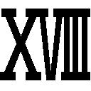

| 英雄教室 | |
| 新木 伸 | |
この本は縦書きでレイアウトされています。
また、ご覧になる機種により、表示の差が認められることがあります。
 ダッシュエックス文庫DIGITAL
ダッシュエックス文庫DIGITAL
英雄教室
新木 伸
第一章 「アーネスト」
○ＳＣＥＮＥ・Ⅰ 「昼休みの廊下」
廊下は昼休みの喧噪に溢れていた。
皆と同じ制服を着た一人の少年が、その廊下の中央に突っ立っている。
行き交う生徒たちの中にあって、立ち尽くしたままの彼は、ぶっちゃけ物凄く通行の邪魔になっていた。――が、彼はまったく気がついていない。
（やったぞ！ 誰も俺を見ていない！ 俺はなにひとつ目立っていないぞ！）
拳を力いっぱい握りしめて――。彼はいま感動に打ち震えていた。
まわりの人々は、彼のことを見ていないのではなく、彼が怪しすぎるので、目を逸らしているだけなのだが――彼にはそのへんの区別があまりついていない。
〝目立たない〟という本人の思惑とは裏腹に、いま彼は目立ちまくっていた。
しかし彼はそのことに〝まったく〟気がついていなかった。
（やったぞ！ できたよ！ 俺はこれでもう一般人だ！）
〝一般人〟というところを、心の中で特に強調して、拳をぎゅっと握りこむ。元〝超生物〟であった彼には、そここそが、もっとも肝心な部分なのだった。
（この圧倒的なまでの普通感！ 俺はまさに普通極まりない！）
彼の名はブレイド――。訳あって、本日、この学校に転入してきた転入生だった。
（ああ......。普通って素晴らしい。目立たないっていいわー。一般人サイコー）
くわっ！ ――気迫のこもった目で、彼が周囲の生徒たちを見る。視線にさらされた生徒たちは、ガンを付けられたと勘違いして、すすーっと避けてゆく。
テンションの高さがあふれ出して、自然と気迫のこもった目になってしまう。本人は普通に自然に周囲の一般人の生徒たちに溶け込もうとしているのだが、その逆に、ますます目立っていってしまう。しかし......、やはりというか、ブレイドは、まったく気がついていない。
そんな彼から逃げていかずに、興味深げに見つめてくる四人組があった。
女が二人に、男が二人。見るからに怪しいブレイドに対して、彼らは関心を持ったようで、遠くから面白そうに彼のことを見つめている。
ブレイドもその視線に気がついた。
そして気づくなり、四人に向かって、つかつかと歩きはじめる。
気合いが入りまくりのブレイドの目は、四人から見れば、まるで殺しにかかるような目に見えていた。そんな目をしたブレイドに、すごい勢いで近づいてこられて、いちばん気弱そうな女の子などは「ひっ」と半泣きになった。男の子たちでさえ腰が引きぎみだ。
（一般人としての第一歩はッ！ まずは挨拶からッ！）
ブレイドは勢いよく片手を挙げた。元気よく挨拶する。
「おっす！ 俺！ 勇......じゃなくて！ ブレイド！」
うっかり正体をバラしてしまいそうになって、ブレイドはすぐに言い直した。
「あ、はい......、は、はじめまして......」
黒髪の女の子が、涙目になりつつも、皆を率先して挨拶に応じてくれる。黒いロングヘアの彼女は、気弱そうだが優しそうでもある。
彼女の名はクレア。この学園の下級クラスの一員である。
「俺！ ブレイド！」
ブレイドは再び同じ挨拶を繰り返した。元気よくぶっぱなす。
「え？」
クレアは、ぱちぱちと瞬きを繰り返した。
「俺！ ブレイド！」
屈託のない子供みたいな顔で、ブレイドは、三度、同じ挨拶を繰り返す。
「えと。はい......、あの......クレア、です」
「クレアかぁ！」
ブレイドは、ぱぁっと顔を輝かせた。本当に幸せそうな顔で笑う。
その子供みたいな笑顔に、クレアも思わず微笑で応じる。
ブレイドはまるで生まれて初めてトモダチができたように笑う。じつは本当に生まれて初めてなのだった。同年代のトモダチの第一号だ。
ブレイドは期待に輝く顔を、残りの三人に向けた。
「イェシカよ」
ショートカットのさばけた感じの女の子が、二番目に挨拶する。
「クレイドだ」
「カシムってんだ」
男子たちもそれぞれに名乗る。
「俺！ ブレイド！」
物凄く嬉しそうな笑顔で、ブレイドはまた言った。
「それはもうやった」
「愉快なヤツだな」
四人は笑ってみたり、微笑んでみせたり。おおむね好意的なリアクションをみせる。わずかに残っていた警戒も完全に解けた。
（四人もトモダチができた！）
ブレイドは心の中で喝采をあげていた。
（俺はもう！ どこをとっても完全に完璧に一般人だ！）
いや――まて、と、ブレイドはそこで思いとどまる。
（普通もっと、トモダチって多いんじゃないか？ 四人じゃまだ普通じゃないかも？ いいや足りない。もっとたくさんだ。な、何人ならいいんだ......？ 十人か？ 十人いれば普通か？いや待て早まるな。ならば......、百人？ トモダチ百人できたら、普通か？ 一般人か？）
深遠なる問題にブレイドは心を悩ませていた。
「そこで何をしているの。貴方たち」
目の前の皆が、ぎょっとした顔で声のしたほうに顔を向けた。
ブレイドは四人の視線を追いかけて――すこし遅れて振り返った。
いかにもキツい感じの少女が腕組みをして立っている。燃えるような赤い髪と、同じように赤を基調とした服を身につけた女生徒だった。他の生徒たちが同じ制服を着ているなかで、彼女だけが違う服装をしている。彼女は厳しく容赦のない目つきで、廊下の真ん中で立ち尽くす四人と、ブレイドのことを睨みつけていた。
アーネスト・フレイミング――この学校の主席にして、最も怖れられている生徒である。
「やば。女帝......」
イェシカが小声でつぶやく。聞こえよがしに言っているので、アーネストの耳にもその声は届いている。アーネストは、ぴくりと反応を返したものの、そこについては黙殺した。
ブレイドはきょとんとしていた。「エンプ......？」と、つぶやいて、一人だけ、意味がわからないという顔をしている。
「貴方たち。廊下のど真ん中で通行の邪魔よ。皆の迷惑を考えなさい。貴方たちもこの栄えある学園の一員なら、規律と秩序に基づいた行動を常に心がけて――」
説教が始まった。四人は殊勝な顔で聞いている。教師に怒られる生徒という趣だ。
立場的には、同じ生徒同士であるのだが、一般生徒と〝女帝〟――アーネスト・フレイミングの間には、教師と生徒ほど、いや、それ以上の格の違いが横たわっている。生徒どころか教師でさえ、彼女の前では同じように説教を受ける側となる。
......が。それはブレイドには、まったく通用しない。
彼女がどんな怖いおねえさんなのか、そもそも知らないということもある。だがそれよりも、元〝超生物〟の基準においては、怖いというのは、古竜とか、それ以上のランクの魔獣のことであり、すくなくとも、こんな街中を歩いている〝人〟が怖いはずがない。
四人に対して説教をしているアーネストのことを、ブレイドはぽかんと見つめていた。
（先生......じゃないよな。生徒だよな。制服着てないけど）
彼女の説教対象に、じつはブレイドも入っているのだが、そうは思っていなかった。なんで叱られてるんだろ、クレアたち、ぐらいに考えている。
アーネストを見つめながらマイペースで考え事をしていたブレイドは、ふと、思い出した。
「あ！ そうだ俺！ 学長室に行かないとならなかった！」
素っ頓狂な声が、アーネストの説教を中断させる。
ぎぬろ、と擬音さえ響くような、物凄い目付きで睨まれる。
「貴方は......なに？ 見ない顔だけど？」
「あの、えっと、アーネスト様......」
クレアが指先だけ小さくあげて言いかけると――。
「様......は、おやめなさい」
「はいっ。......そのっ、ブレイド君は転入生みたいでっ」
「転入生？ この栄えある学園に中途入学なんて、そんな有り得な――」
「だから俺！ 学長室に行かないと！」
ブレイドが割りこんだ。さっき言ったことが聞いてもらえなかったと判断して、もういっぺん、同じ事を言っている。
自分の言葉をまたもや中断させられて――アーネストは、ぎぬろ、とブレイドを睨みつけた。
人が殺せそうな眼光をまともに浴びても、ブレイドは平然と、ぽかんと立っていた。
傍で見ていた四人は、顔色をすっかり変えている。この学園に籍を置くものであれば――生徒は無論のこと、教師でさえも――〝女帝〟の眼光に晒されることは、なによりも避けたいことのはずだ。それがブレイドには通じない。そもそも睨まれているということに、気づいてさえいないっぽい。
四人は――ある種、尊敬のまなざしをブレイドに向けていた。
「そうだ。案内してくれよ。学長室」
ブレイドはあろうことか、〝女帝〟に対してそう言った。
「なぜ私が!?」
怒気を明らかに含めて、〝女帝〟はそう言った。そして、ぎぬろ、と睨んだ。さっきのと合わせて、常人なら、もう二回は死んでいる。
「知らないのか？ 学長室？」
ブレイドは言う。
「知ってます!!」
売り言葉に買い言葉で、女帝が返す。
そして、なんと――。女帝が案内をするはめになった。
歩き去る二人を、四人は目を剝いて見つめた。
○ＳＣＥＮＥ・Ⅱ 「回廊」
人気のない回廊を、二人は歩いていた。
つんと胸を反らして、アーネストは先を歩く。前だけを見て、すたすたと歩く。その足取りには、若干、憤然とした怒りがこもっていなくもない。
後ろについてゆくブレイドは、腕を頭の後ろに組んで、きょろきょろと周囲を見回していた。この学園に初めてやってきた彼には、見るものすべてがめずらしく見えている。
学園は風情のある石造りの建物だった。渡り廊下から見える光景は緑に包まれている。石の手すりには蔦が這っている。
そこの葉の上に止まっていたトンボに――ブレイドは、ひょいと手を伸ばした。
「なにしているのよ？」
「ん？ 放してやるよ？」
手づかみにしていたトンボを放す。翅も傷めていないから、トンボは飛んで逃げてゆく。
アーネストは目を細くして、胡散臭げにブレイドを見つめた。
ついてこないから振り向いたわけだが――虫で遊んでいたとか！
ぷいっと前を向いて、彼女は足早に歩きだした。ここまで彼女のことをないがしろにした男は、彼女の人生において、はじめてだった。これでも彼女は貴族の生まれだ。初対面の人間に出会うときに、相手が自分を知っているのが、彼女にとっての〝普通〟であった。
それが道案内だなんて――。
彼女は憤然としつつ、足を運んだ。
学長室のドアの前に到着する。
ブレイドにもそれがわかった。なぜならドアに「学長室」と書いてあるからだ。
アーネストが細い手首のスナップを利かして、こんこんこん、と、三度ほどノックをする。そしてあまり待たずに声をかける。
「失礼します。アーネスト・フレイミングです。道がわからず半ベソかいていた小僧を連れてまいりました」
ブレイドは「うお!?」と驚いた顔を彼女に向けていた。マイペースだったブレイドがへこんだ顔をみせたことで、アーネストは、すこしばかり胸をすかせた。
ブレイドは彼女の吐いた毒にへこんでいたわけではなくて、こんな丁重な物言いができたんだ――と驚いていただけだったが。
「はいりたまえ」
ドアの内側から声がする。その声に、アーネストは一瞬、怪訝な顔をみせた。だがドアを開いて、室内に入る。室内にいる人物を見た途端、アーネストの表情は、はっきりと変わった。
目を見開いて、物凄く驚いた顔をみせる。
部屋の入口に立ち尽くすアーネストの脇をひょいと抜けて、ブレイドは部屋に入っていった。
「おーい。きてやったぞ」
軽い口調で声をかける。
「ばっ、バカっ！ 貴方っ！ この御方がどなたなのか――！ わかっているのっ!?」
アーネストは血相を変えてブレイドに詰め寄った。そして、ちらりと、部屋の中にいる人物に目を向ける。
壮年の逞しい男だった。獅子王と名高い、この国で最も有名な人物。国王陛下その人である。
「しってるぞ？」
ブレイドはきょとんとした顔を返した。そしてまたアーネストに睨まれる。
アーネストはブレイドから身を離して、国王に向き直った。まっすぐ正面に正対する。
「なぜ学長室にいらっしゃるのですか......国王陛下」。
先ほどまでとはうってかわって、丁重な物言いになっている。
学園の女帝も――国王の前では、小猫とならざるを得ない。
「うむ。それはよい質問だな」
椅子に座ったまま、国王は鷹揚に返してきた。
「は。はいっ――光栄です」
国王に声をかけられて、アーネストはさらに姿勢を正した。頰を赤らめていたりする。貴族の子女とはいえ、国王は、やはり雲の上の存在だ。舞踏会などで顔を見る機会はあっても、直接、言葉を交わしたことなどあるはずがない。
「君のことは前学長から聞いているよ。アーネスト・フレイミング。――たいへん優秀であるそうだね」
「そんな......。私など。まだまだです」
ブレイドは驚くというより、呆れていた。隣にいるアーネストの顔を、まじまじと見ていた。
さっきまでのエラそうな態度とは、まったくの別人だ。いやこれはもはや別の生き物だ。
「あの......。陛下がこの学園の学園長になられるのですか？」
と、アーネストは訊く。
「うむ。君は本当に優秀なんだね。その通りだよ」
「そんな......」
アーネストは別人の顔で、またうつむいた。
学園長室になぜか国王がいて、執務机についている。その事実からアーネストは、国王が学園長になる、ということを推察してのけた。それをもって国王は〝優秀〟と評したわけだ。
「あの......」
アーネストが顔をあげる。エラそうにしていなくて、殊勝な顔をしていると、本当に、別の女の子に見える。
「陛下は優れた武人であらせられると聞いております！ 教えを頂けるのは光栄です！ 前の学園長はいささか無能でしたので」
頰を染めつつ、しれっと毒も吐いている。
横で聞いていたブレイドは、うっわ、と顔を歪ませた。やっぱりおんなじ生き物だった！
「ところで。もうよいぞ」
あくまでにこやかな笑顔を崩さずに――国王はアーネストに、そう語りかける。
「はい。なんでしょう？」
アーネストはにこやかに訊き返す。国王と話す栄誉に染まりきって、一秒でも長く話していたいという顔だ。
そんな彼女に、国王は笑顔のままで――。
「下がってくれたまえ。私は彼と話があるのだ」
そう、言った。
「えっ......？」
アーネストは、一瞬、わからない、という顔をした。
しかし頭の回転の速い彼女のこと。一秒にも満たないうちに、その美貌に、理解が広がっていった。そして――。
きっ――と、本日最高出力の、物凄い目でもって、ブレイドのことを睨みつける。
アーネストは無言で部屋を退出していった。
○ＳＣＥＮＥ・Ⅲ 「国王」
ドアが閉まった途端――。
「おい。おまえのせいで睨まれたぞ」
ブレイドは国王に向けて、ぞんざいな口調で話しかけた。
「なぜかね？」
「なぜじゃねーよ」
まるでわからないという顔で国王は訊き返す。ブレイドがタメ口をきいても、まったく気にした風はない。二人のあいだには旧知の仲という空気が流れていた。国王がブレイドと話したがって、他の者を追い出す。追い出された他の者が、ブレイドを睨んで退出してゆく。――そういったことも、もう何十回となく繰り返されたことだった。何回ではなく、何十回だ。
二人はブレイドが勇者をやっていた時代からの付き合いだった。まだ年若かった勇者の後ろ盾となって、すべてをバックアップしてきたのが、この国王だった。
「だいたいなんで学校なんだよ？」
「嫌だったかね？」
「嫌......じゃねえけど」
ブレイドは口ごもった。国王の策にまんまとのせられたことは、ちょっと悔しかったが......。まあたしかに。トモダチ四人できた。あいつも入れたら、もう五人だ。
ブレイドの顔に子供っぽい顔が一瞬だけのぞく。国王の目は、それを見逃さなかった。
「私はね。ブレイド――」
国王は学長席の椅子にどっかと座り直した。豪華な椅子だが、国王の立派すぎる体格にぎしりと音が鳴る。
「――君に《勇者》の力を取り戻して欲しいのだ」
「俺は一般人になりたいんだよ！ 普通の！」
ブレイドは思わず大声をあげていた。このオッサン。まったくわかっていない。
魔王も倒した。勇者の義務は果たした。勇者の力も失った。十数年来の自分自身の「夢」を果たしてもいいはずだ。
「いいリハビリになるはずだ。ここの生徒たちは優秀だぞ？ 君も大層刺激になることだろう」
「聞けよオッサン」
「カリキュラムは大幅に変更するつもりだ。前任者の教育方針をみていたのだがね、少々手ぬるいね。これでは英雄しか育たない。《勇者》を育成するためには――」
「勇者なんかもう不要だろ。魔王もいないのに」
だいたい勇者は育成できるようなものではない。人は勇者になるのではない。勇者に生まれるのだ。
「はっは。君が倒してしまったからな」
国王はカラカラと笑った。
――倒してねーよ。相打ちだよ。
ブレイドは渋い顔を作ると、そっぽを向いた。このオッサン。どこか憎めないっつーか。笑うことでなんでもうやむやにしてしまう。そういう特殊能力を持っている。「カリスマ」という名前の才能だ。だからこそ大陸中の国をまとめあげていられるわけだが――。
「君と魔王が相打ちとなった結果――。勇者の力と魔王の力。どちらも対消滅したと、私はそのように報告を受けている」
「その通りだよ」
ブレイドは、ふんと胸を張った。
だから俺はもう一般人だ。そこらの英雄ができるようなことしか、もうできねーし。
「だが私は信じない」
「あのな」
「なぜなら君は《勇者》だからだッ！」
国王は――いきなり、くわっと目を見開いて、血管浮かせてハイテンションで叫んだ。
「だめだこのオッサン」
ブレイドは諦めた。昔っからこのオッサンはこんな調子であった。
「まあ休暇と思って気軽に楽しんでくれたまえ」
さっきのハイテンションから、うってかわって、国王はそう言った。こうして話すと人格者に見える。だがその本性は絶対に違うということは、ブレイドだけが知っている。
とほほ。ブレイドは諦め顔となった。
○ＳＣＥＮＥ・Ⅳ 「下級クラス・講義」
ブレイドはまず下級クラスに編入されることになった。
その授業が講堂にて行われている。
「ＲＡＮＫ Ｃ」という札のかかった講堂で、ブレイドは大勢の生徒たちの一人として席に着き、講義に耳を傾けていた。講堂はすり鉢状になっていて、そのいちばん低いところに教授がいた。黒板を背に講義を行っている。
いまやっているのは、「ＲＡＮＫ Ｃ」の授業だった。
この学園の全校生徒は百人ほどだと聞いている。「ＲＡＮＫ Ｂ」と「ＲＡＮＫ Ｃ」が下級クラスで、ほとんどの生徒はここに所属する。「ＲＡＮＫ Ａ」は上級クラスであり、学園のなかでも、わずか十数名ほどしかいないエリートだそうだ。
ブレイドは退屈そうに講義を聞いていた。
「したがって、およそ火蜥蜴属のモンスターに対して火炎攻撃は意味をなさないもので――」
ブレイドはあくびをした。
常識......、というのが、講義を聞いた感想だ。
ブレイドの記憶によれば、「学校」という場所で教わるのは、知らないことのはずなのだが......。さっきからぜんぜん知らないことをやってくれない。
下のほうの席には、このあいだトモダチになった四人が並んで座っていた。クレアとイェシカ。それからクレイドとカシム。
何気なく見ていると、イェシカのほうが振り向いた。「はぁい」とばかりに、手をひらひらと振ってくる。ブレイドも手をひらひらと振って返す。隣にいたクレアが「だめ」とイェシカのことを諭している。ブレイドはくすっと笑った。
講義はもりもりと続いてゆく。
「――これに対して有効な対処法とされるのは、Ａ．Ｈ．一七一五にイェーガー伯によって発見された――」
ふああ、とブレイドは大あくびをした。
いいことを思いつく。まぶたの上にサインペンで目を描いて――偽装しつつ、目を閉じて堂々と寝に入った。
真面目イケメンのクレイドが、それにマジウケして、笑いをこらえるのに必死になっていた。
しかし、もう寝てしまっているブレイドには、それも見えない。
＊
「おや」
授業が終わり、小テストを採点していた教授は、一枚の答案用紙に目を留めた。
その答案には「ブレイド」と名前が書かれており、採点をしてみると――。
「ふむ。満点ですね」
この生徒には、自分の授業を受ける必要はないらしい。
教授は別の用紙を取り出すと、進級のための進言書にサインした。
○ＳＣＥＮＥ・Ⅴ 「下級クラス・実技」
この学園の教育方針は文武両道。
講義と実技の時間は、だいたい半々になっている。
広々とした試練場に、下級クラスのＢとＣ両方の生徒が集まっていた。数十人はいる生徒たちの輪の中央では、武術教官が、いま試技の真っ最中であった。
すぱん！ ――と、小気味いい音とともに、甲冑が真っ二つになる。
鉄の甲冑が二つに割れた。剣によって断たれた。
おーっ、と、生徒たちのあいだから歓声があがる。ぱちぱちぱち、と、拍手もあがる。
鉄の甲冑を真っ二つに断ち割った武術教官は、ちゃきん、と、長剣を鞘に格好良く収めた。
「君たちも修練を積めば、このくらいすぐにできるようになるぞ」
生徒たちから「えーっ？」と半信半疑の声があがる。
「さあやってみたまえ！」
腕を振って示した先には、ずらりと、人数分の鉄の甲冑が並んでいた。台座に据えられて、斬りつけられるのを待っている。
生徒はおのおの武器ラックに立ち寄ると、剣を持って出てきた。
握り方をみるに、完全な素人ではなく、皆、そこそこの経験者風ではある。だが設置された鎧を前にして、誰もが躊躇したまま動けないでいる。
誰がいちばん最初に試みるのかと、見ていれば――。
「俺がやる」
最初に名乗りをあげたのは、ブレイドのトモダチの一人、イケメン剣士――クレイドだ。
きりりと鎧を睨み、堂に入った構えをとったまま、しばらく止まっていたが――。
「はあっ！」
裂帛の気合いとともに、斬りかかった。
ガキィ――と、剣は鎧のなかばまで食い込んだ。だがそこで止まってしまう。
「だめだ......。硬いっ......」
クレイドはそうこぼした。こじって抜いた剣の刀身は、ぼろほろに刃こぼれしている。
「ブレイド君っ。......やらないの？」
「ん？」
話しかけられてブレイドは振り返った。
クレアだった。剣を持ってはいるが、握りかたがどうも変だった。
「私は、その、剣って、苦手で......。棍棒で撲殺なら得意なんだけど」
クレアはもじもじとやりながらそう言った。
ああ。なるほど。――と、ブレイドは思った。
握りと構えがメイス使いのそれだ。質量を武器とするメイスなどと違って、刃のついている武器は、きちんと刃を合わせなければ、まともに斬れない。
「やらないの？」
「うーん」
期待する顔でそう言われて、ブレイドは悩んだ。
肩に担いだ剣で、とんとん、と肩を叩きながら考える。
考えているのは、どうやって斬るのかということではなくて――。どうやって〝斬らないか〟というほうであった。
斬るのって鎧だけなんだよな？ 難しいなー......。
教官と同じ事をやるのが、ちょっと難しい。教官は鎧だけを斬っていた。台座のほうはぶっ壊していない。それがけっこう......、いや、かなり......、難しそうなのだが。
〝実戦〟においては、鎧だけ斬るなんて器用な真似は必要ない。すくなくともブレイドはこれまでやったことがない。鎧を着ている〝本体〟も一緒にぶっ飛ばせばよいからだ。
「やってみるか」
「うん！ やってやって！」
クレアの応援を受けて、ブレイドは鎧に向かった。
なるべく小さく。小さく――。そう心の中でつぶやきつつ――。
「えい」
気軽に、軽く、剣を振り抜いた。
「きゃあっ！」
悲鳴。轟音。そして爆風。
鎧のあった場所はまるごと爆風に包まれた。
クレアのスカートが上に向いて翻る。純白の下着が咲き誇った。
やがて爆風が収まったあとには、まったく原型を留めていない鎧があった。固定してあった台座も衝撃波で分断されている。地面までもが、鋭く抉られている有様だった。
「よし！ できた！」
ブレイドは満足そうにうなずいた。
まわりへの被害は最小限。鎧だけ――壊した。斬ったというより、壊したという感じになってしまったが......。
まあ、まずまずの出来だ。八〇点。
「できたぜ！」
得意満面でクレアを振り返ったブレイドが、見たものは――。
まだスカートを手で押さえているクレアと、そして呆然とした顔を彼に向ける生徒全員の姿。
教官までもが、口を半開きにしてブレイドのことを見ている。
あれ......？
もしかして......？
やっちまった......？
ブレイドの額に、つーと、冷や汗が流れた。
○ＳＣＥＮＥ・Ⅵ 「上級クラスへ」
数日が経って、とある日の午後――。
ブレイドは次の授業のために廊下を歩いていた。今日の昼休み、ブレイドは上級クラスへの昇格を命じられた。その授業の場所に向かって歩いているのだった。
「ＲＡＮＫ Ａ」と書かれたプレートが、首から紐で吊りさげられている。
プレートを裏返せば、そこにはマス目がたくさん切ってある。教官からのスタンプを押してもらう場所だ。一定数溜めると、クラスが昇格するという仕組みだった。
異例の超速度による進級となるが、ブレイドにとってそこはなんの名誉でも栄誉でもなかった。せっかくできたトモダチと離れてしまってやだなー、ぐらいの感慨しか感じていない。
「上級クラスかー」
胸に提げてるプレートをもてあそびながら、ブレイドはつぶやいた。
下級クラスのＢとＣでは、授業や講義が一部共通となる。だが上級クラスのＡでは、まったくの独自カリキュラムだ。
ブレイドは送り出してくれた四人の顔を思い浮かべていた。「私たちもすぐ上がるから」と、指先を振ってクレアたちは笑っていた。
上級クラスのほうでもトモダチできるだろうか。
ちょっとした不安と、胸一杯の期待を胸に、ブレイドは廊下を歩いた。
＊
試練場に到着する。
ブレイドはすぐに、下級クラスのときと雰囲気が違うことに気がついた。
まず人数が少ない。下級クラスのときには、何十人も、わちゃっといたのに、広い空間はがらんとしている。生徒は十人と少々だ。
つぎにひとりも制服を着ていない。皆、自分が選んだそれぞれの服装になっている。皆、カラフルで――探せば虹の七色がすべてどこかには見つかりそうだ。白と黒のモノクロームの光景に慣れていたブレイドは、目が慣れるまで、しばらくかかるなー、と思った。
そして、もうひとつ。
背中に目でもついているのか、ブレイドの視線に気がついて、振り返ってきた者が数名ほどいた。何人か視線を向けてきたうちの、その一人の女の子をじっと見つめた。
カラフルな上級クラスの中で、彼女は青色担当だった。
青いケープとマフラーで口元を半分隠している。その顔は無表情だ。相手のほうは、もうこちらは見ていなかったが、ブレイドはじっと観察した。べつに興味があったわけではなくて、勇者としての――元勇者としての性癖みたいなものだった。戦闘力の高い者には、どうしても目が行ってしまう。
つぎに目が向かったのは、全身が真っ赤な女の子で――。
あれ？ と、ブレイドは思った。
「あの赤いの......？」
見覚えがあった。ぶしつけな視線を送っていると、向こうのほうも気がついたらしく――。
ただでさえコワイ顔が、もっと不機嫌そうになった。
つかつかつか。
試練場を縦断して突っ切って、彼女は怒った足取りでブレイドのところまでやってきた。
「なぜ貴方がこの上級クラスにいるの!?」
説明しなさい、とばかりに凄んでくる。彼女はアーネスト・フレイミング。ブレイドが初日に名前を覚えた相手であった。
「あ。俺。今日からここのクラス」
ブレイドは胸に吊ったプレートを、ぴらぴらと振ってみせた。
アーネストは奪うような勢いでプレートを摑む。裏返して眺める。
「ぐえぇ」
紐が引っぱられてブレイドの首が絞まる。
「グラトー教官、モリガン教官、セイン教官まで......。信じられない。アステル教官まで買収されてるなんて!?」
「買収？」
「ええ。そうよ」
アーネストは胸を張ってみせる。
「こんな数日でＣからＡまであがってくるとか、起きるわけないでしょ」
「起きたし」
「だいたいね」
アーネストは、よくくびれた腰に手をあてた。
「この学園は真の実力者だけが通える由緒正しき学園なの。貴方みたいに、いい加減で適当で、やる気のない人が入学できるような場所じゃないの。国王の推薦だからって......、どんな不正があるのか、絶対、暴いてやるんだから！」
不正をしているのは国王自身だ。暴いてくれるといいんだけどなぁ。裁いてくれるともっといい、と、ブレイドは思った。
話を聞いていると、彼女は、ブレイドのやる気を問題にしているらしい。
「やる気ならあるぞ？」
「なによ」
「トモダチつくりたいぞ」
「は？」
一般人となったからには、トモダチ百人は作りたい。それがブレイドの夢である。
「誰か紹介してくれよ」
ブレイドはきょろきょろと周囲を見回した。ここの上級クラスには、十数人もいて――。みんな、面白そうなやつばかりだった。
そんなブレイドの態度が、アーネストには不真面目に見えていた。それで怒りを買った。
ぷるぷると震えたのちに、アーネストは癇癪を起こした。
「聞きなさいよ！」
毛先にまで怒りをみなぎらせて、アーネストは叫ぶ。
「私は貴方に因縁つけてるのよ!?」
つい本音が出てしまう。〝因縁をつける〟というのは、ようするに、絡んで言いがかりをつけるという意味だ。つまり彼女にその自覚はあるわけだ。
「きーてるよ」
ブレイドはきょろきょろとまわりに目を向けながら、アーネストの頭に、ぽんと手を置いた。
アーネストは真っ赤になった。頭など撫でられたのは――五歳のとき以来だ。
「撫でるなー！」
抜刀。そして本気で斬りつける。
その太刀筋は、ブレイドにひょいとかわされた。
ブレイド自身は完全に無意識の動きだった。本人は攻撃されたことも、かわしたことも、どちらも気がついていなかった。
「な？ なっ？ あれ誰あれ誰？」
と、遠くに目をやっている。その目の先に立っているのは――さっきの青い少女だった。
「どれよ？」
髪を直しながらアーネストは訊いた。
頭に手を置かれて、本気斬りをして――そのせいで、いつも頭の後ろでひっつめていた長い髪が解けてしまっていたのだ。髪を下ろしたほうの自分を見られることは、彼女にとって恥ずかしいことだった。
せっせと髪をまとめながら、アーネストはもういちど、ちゃんと訊いた。
「だれのこと？」
「あれ。あれっ。あの青い子」
「ああ。......ソフィよ」
二人の視線を感じたのか、ソフィがこちらを見ていた。
「強いよな」
「まあ。弱くはないわね。上級クラスなんだもの」
アーネストはやや顔を赤らめ、照れの入った顔で、そう答えた。ようやくいつもの引っ詰めた髪型に戻しおわった。きりっと厳しい顔に戻る。仮面をしっかりとかぶり直す。
「俺。こっちのクラスでも、トモダチ作りたいんだよ。二人目っ！ 二人目っ」
ブレイドはアーネストにせがんだ。その仕草は子供っぽいといえなくもない。
「二人目？ 一人目って誰よ？」
アーネストは怪訝な顔を向けた。この上級クラスに、この不正裏口入学者のトモダチなんているはずが――。
「おまえ」
アーネストのおっぱいのあたりを指差して、ブレイドは言った。
「なっ！ なっ！ なっ――!?」
胸をかばうポーズを取って、アーネストは言葉を詰まらせた。
「――なんで私がっ!?」
顔を赤らめてそう叫ぶ。
「だってもう名前知ってるし」
「は？ バカ？ あなた。馬鹿なの？」
アーネストは呆れた。名前を知ってりゃトモダチか。
「ああそうだ。学長室まで案内してくれて、ありがとな。このあいだは、お礼言うの忘れてた」
「そ、そんなことは別にたいしたことじゃあ......、じゃなくて！ 斬り殺すわよ!?」
言い合う二人だったが――不意に、二人揃って顔を横に向けた。
ソフィが立っていた。
「アーネスト。新入生。......教官の招集命令よ」
ソフィは静かな声でそう言った。
二人は声をかけられるまで、ソフィの気配に気がつかなかった。アーネストは失敗したという気まずい顔を浮かべていた。ブレイドとの言い合いに注意が向いていたとはいえ、気配に気づかず接近を許してしまった。そのことへの自責だ。そんなアーネストとは対照的に、ブレイドのほうは、感嘆の表情で顔をいっぱいにさせていた。
「俺！ ブレイド！」
屈託のない顔で、挨拶をぶっぱなす。
下級クラスで、クレア、イェシカ、クレイド、カシム――たちに、四回繰り返した挨拶だ。
「......」
ソフィは無言かつ無表情。ブレイドのことを、ただ静かに見つめ返すだけ。
「俺！ ブレイド！」
ブレイドはまったく同じ挨拶をぶっぱなす。
「名乗れってさ」
放っておけば、延々と繰り返すのだろう。――そうアーネストは思って、横から口を出した。
「それは命令？」
ソフィは真顔でそう訊いてきた。
「こういう娘だから」
アーネストはブレイドにそう説明したが......。
「俺！ ブレイド！」
ぜんぜんめげていない。だめだこれは。アーネストは諦めた。
「......ソフィ」
マフラーに半分包まれた口元から、小さく、つぶやくように、ソフィはそう声を洩らした。
アーネストはぎょっとした顔で、ソフィを見つめる。彼女が命令外で自発的に何かを行ったところを、アーネストは初めて見た。
「そっか！ 俺！ ブレイド！ よろしくなっ！」
ブレイドは片手を差し出した。
ソフィのほうは、その手を不思議そうに見つめている。さすがに握手までは応じない。というより、握手を求められているということを理解していないというほうだろう。
「おーい！ 招集だってよー」
クラスの他の者から声がかかる。
ブレイド、アーネスト、ソフィの三人は、教官の下へ歩いて行った。
○ＳＣＥＮＥ・Ⅶ 「試技」
上級クラスの面々が、ずらりと居並んでいる。
ブレイドもそのうちの一人として並びながら、右と左と後ろと前とを、きょろきょろと見つめていた。皆、一癖二癖ありそうな顔つきだ。下級クラスのほうにいた生徒たちは、わりと真面目で大人しそうなタイプばかりだったが、こっちの連中は、すごく面白そうだ。いま隣にいるのは、さっきブレイドとアーネストを呼んできた男だが、長髪で金髪の伊達男だった。シャツの前を開いて、なぜか肌を半分晒している。美醜の区別はブレイドには難しいのだが、きっと物凄い美男子の部類にはいるのだろう。
早くトモダチになりたい。ブレイドはうずうずして仕方がなかった。
集まった十数人と向かい合う形で教官が立っている。そしてなぜかその横にアーネストも立っている。
「教官。この新入生に、力試しをやらせようと思います」
アーネストはそう言った。教官に向けての言葉であるが、顔は向けない。言葉だけ向けている。顔はどっちを向いているのかというと、ブレイドに向いている。
ぎぬろ、と、眼力を込めて睨みつけているのだが――。肝心のブレイド自身は、睨まれていることに気づいていない。なんで見てくるんだろ、あいつ、ぐらいに考えている。
「いやね。あのね。今日のカリキュラムはね......」
教官はアーネストの横顔に向かって、ぼそぼそと、つぶやくように言った。だがその弱腰の抗議は受け付けられることはない。
「構いませんね」
「いや、でもね......」
アーネストはうるさそうに教官に顔を向けた。じろり、と、一瞥。
「いえ。......いいです」
教官はしょぼんとうなだれた。
「なにすりゃいいんだ？」
どっちがこの場のボスかわかったので、ボスのほうに訊いた。もちろんアーネストのほう。
〝新入生〟というのが自分のことであるという、そのくらいの自覚はブレイドにもあった。
担ぎあげた剣で、とんとんと自分の肩を叩く。もう武器ラックから剣を取ってきていた。なんの銘も魔力も持たない、普及品の剣であるが、剣を持っていると、なんとなく落ち着く。
常に帯剣しているアーネストを、ちょっとうらやましいなと思ったこともある。
しかしブレイドは知っているのだ。一般人は剣を持たないものなのだ。勇者をやめて一般人になったのだから、剣を持つのはおかしいのだ。
よって教練のときしかブレイドは剣を持たない。
「なんでもいいわよ？ 貴方の修練を示せるものなら」
「なんでもいいんだ」
ブレイドは軽く応じた。振り返って後ろを向くと、鎧が十数個ほど並べられていた。それぞれ台座に固定されている。教官が今日の授業のために用意したものなのだろう。
下級クラスのときには、鎧は単なる鉄の鎧だった。
鉄の剣で、単なる鉄の鎧を斬るには、そこそこの腕があれば事足りる。
だがこの上級クラスでは、置かれた鎧の材質は鉄などではなくて――。
「あれ魔法金属だろ？」
「それがどうかしたのかしら？」
アーネストは鼻で笑い返してきた。そこにはわずかばかりの挑発がこめられている。
単なる鉄の剣で、より強度の高い魔法金属を斬るには――〝腕〟だけでは足りない。木剣で鉄を斬るようなものであり、〝腕〟以外の〝なにか〟が必要となってくる。
ふむ。ブレイドは構えを取った。
「ただ斬るだけなら、このクラスの誰だってできるわよ？ このクラスの全員を納得させなさい。それができなければ......、わかるわね？」
「女帝に逆らうと飛ばされますよ～」
教官がいかにも気弱な声でブレイドにアドバイスを投げる。
アーネストは挑むような目で、ブレイドのことを睨みつけていた。その胸中では、〝不正〟に対する怒りが煮立っていた。彼女のなかでは、ブレイドは裏口入学をしてきたことになっている。敬愛する国王が、なにかブレイドだけを特別扱いしていることも許せない。そのブレイドの実力を試すことで、化けの皮をひん剝いてやるぞと、アーネストは息巻いていた。
「この上級クラスは、下級クラスとは次元が違うんですからね」
アーネストは言った。下級クラスのほうで、なにか騒ぎを起こしたという話は聞いていた。皆を驚かせるような凄いことをやってのけたのだという。だが下級クラスのレベルならともかく、この上級クラスで、皆を驚かせるようなことが、できるものなら――やってみればいい。
「そっか。次元ちがうんだ。――いくつ？」
「えっ？」
変なことを訊かれて、アーネストはどぎまぎした。
「だから。いくつ？ 次元？」
「ふ、ふた......、いいえ！ 三つよ！ 三つは次元が違うわね！」
強がってそう言った。ちょっとだけ盛った。腰に手をあてて胸を張って、いばりんぼ、のポーズを取る。
「そっか......。三つか......」
ブレイドは考えこんだ。下級クラスのときには加減がわからなくて、皆を仰天させてしまった。こんどは失敗しない。
どうも下級クラスのときには、次元を一つ間違えてしまったようだった。上級クラスは次元が三つ違うということは、つまり、このあいだのアレの、二つ上ということで――。
なら――、すこしマジにやっても平気だろうか。下級クラスのほうでは、あれ以来、なにをするにも気を遣ってしまった。じつのところ、だいぶストレスが溜まっていた。
三つも次元が違うというこちらの上級クラスでは、だいぶ伸び伸びとやれそうだ。
口元に笑いを浮かべて、ブレイドは構えに入った。
「はぁああああ......」
全身に力を込める。いや、込めたものは、単純な〝力〟ではない。単なる肉体的な力よりも、一次元上の生体エネルギーとよばれるものだった。さらにそれを練り上げて、〝気〟や〝闘気〟と呼ばれるものに変質させてゆく。これで、二次元――。
ブレイドの体表からオーラが滲みだして、全身にまとわりついてゆく。
「えっ？」
アーネストは驚きに目をしばたたいた。技を見せろと、そうは言った。だがいったい、なにをやろうとしているのだ。この男は。これでは、まるで――。
「はぁああああ......」
ブレイドの身に集まるエネルギーは、まだまだ高まりをみせてゆく。
アーネストばかりでない。上級クラスの十数人の全員が戦慄を覚えていた。
ただひとり、ソフィだけが、いつもと変わらない無表情で見つめている。
「はぁああああ......」
〝気〟はどんどんと際限なく高まってゆく。あまりに高まった高圧のエネルギーに、ついに、足元の小石が、重力を断ち切って宙に浮かびはじめる。
空間に放電が走る。石と石の間を紫電が繫ぐ。
「ちょ！ ちょっ!? ちょおーっ!?」
アーネストは慌てた。
この技――。見たことはないが、聞いたことがある。この技はひょっとして、個人の使える技では最大の威力を持つといわれる、あの破竜系の――。対ドラゴン用闘技の――。
戦慄に顔を歪めるアーネストのその傍で、ソフィはやっぱり無表情で立っていた。だが無関心なのではなく、彼女なりに関心を持って静かに見つめている。
「ちょ――やめっ!?」
飛び出したアーネストだが、制止も間に合わず――。
「はあっ!!」
ブレイドは剣を振り抜いた。
破竜饕餮――。
破竜系、二の太刀――。気と闘気とが織りなす超螺旋が、うねり暴れながら、どこまでも伸びてゆく。竜の強靱な外皮さえ貫く、二重螺旋の大技だ。
魔法金属の鎧は螺旋に巻きこまれただけで、あっけなく分解。竜さえ食らう大技は、試練場の外壁に衝突した。幾層にも張り巡らされた防御結界によって、一瞬だけ止まるが、それもあっさりと紙のように貫通した。建物の石壁を壊し、さらにさらに伸びてゆく。
もうもうとあがっていた土煙が、徐々に晴れてゆく。
ぱらぱらと小石や土砂が落ちてくる。
アーネストは固くつぶっていた目を開けた。
「きゃっ!?」
間近で大技の風圧をくらって、服があちこち破れてしまっていて――あわてて身をかばう。
他の生徒たちもしゃがみこんで避難していた。例によってソフィだけが、無表情で立ったままだ。そのソフィも、頭から土埃をかぶってその顔を汚している。
えぐられた地面の傷痕が、まっすぐに何十メートルも伸びていた。丸い大穴が開いた壁面の先に、隣の校舎が見えている。そこも丸い穴が貫通していた。二階の教室の下半分と、一階の教室の上半分とが、ともに見えている。教室はどちらも無人だ。中庭のほうでは噴水が壊れて、水しぶきをあげていた。
アーネストは、顔をもちあげて――おそるおそる、ブレイドを見上げた。
「うーん......。いまいち」
ブレイドは担ぎあげた剣で、とんとんと自分の肩を叩いていた。
――と、その剣が不意に、崩れる。金属の粒子となって、ぽろぽろと先端から崩壊してゆく。
「あれ......。保たなかったか」
ブレイドがそんなことをつぶやいた。これだけの大技を撃っておいて、その口から出たのは、剣の強度についての感慨だ。そして一つ前につぶやいた「いまいち」という言葉も、技の威力に対する不満ではなかっただろうか......？ いったい、どれだけ......。
ブレイドとしては、自分の技の〝しょぼさ〟に呆れかえっていた。
本来、あんな威力の技ではないのだが――。まあ――。病みあがりだからと、自分を納得させて、皆のほうに目を向けると――。
見上げてくるアーネストの視線と、視線が交錯する。
「あっ......」
ブレイドはようやく気がついた顔になった。アーネストの表情から、皆のほうへと、その目を順に巡らせてゆく――。
皆が自分に向ける目が、一様に、同じものとなっていることを――十数人、全員分、確認し終わって、ブレイドは、たらーり――冷や汗を流した。
やっべー。やっべー。俺。やっべー。
どうやら、またやり過ぎてしまったようだった。
「お、俺......、普通だよ？ 平凡きわまりない一般人だよ？」
ブレイドはそう言った。普通をアピールした。
だが時すでに遅かった。
○ＳＣＥＮＥ・Ⅷ 「食堂にて」
昼どきの食堂。ブレイドが転入してから、数日が経っていた。
そのあいだ、色々なことがあった。トモダチできたり。下級クラスから上級クラスにクラス替えがあったり。どちらのクラスでも、失敗したり、やらかしてみたり......。
失敗とつまずきを繰り返しつつも、ブレイドはなんとか学生生活に馴染んでいた。
たとえばいま、ブレイドは混雑している食堂で空席を探していた。目下のところ、最大の関心事項は、空いている席はないか――ということだ。その悩みはものすごく普通の学生っぽい。平凡きわまりない。手にしたトレイの上には、三人前はありそうな料理の山があった。学生寮の食堂は、好きなものを好きなだけ取って食べられるという仕組みである。
トレイの上には、肉、肉、肉。それからオバちゃんに怒られて、申しわけ程度に野菜がちょっぴり。主食となるのは、見たこともない茶色のソースをライスにかけて食べる料理だった。南方から最近になって伝わってきた「カレー」という料理だそうだ。魔王がいなくなって平和が戻り、交易も盛んになってきた。新しいものも、どんどん入ってくる。
時間がまずかったか、なかなか空席が見つからない。――と。ブレイドは遠くのテーブルに目を留めた。なんとテーブルが丸ごと空いているではないか。
「お。ここ空いてるじゃーん」
どすんと椅子に腰を落としてから、ブレイドは遅まきながら気がついた。
テーブルの斜め向かいに座る一人の少女に。
真っ赤なシルエットの人物が、物凄い目付きで睨んできていた。
以前、ブレイドは、レッドドラゴンの巣穴に落っこちてしまったことがあるが......。目覚めたばかりの、最凶に機嫌の悪い成竜の目付きが、ちょうど、このような感じであった。
「よ」
フォークを持ちあげて挨拶をした。――が、当然、ガン付けをくらう。
彼女――アーネストは、人が殺せる出力の一瞥を最初にくれたあと、物言うことなく、皿と口との間でフォークを往復させていた。ブレイドは自分もスプーンを皿と口との間で往復させつつ、なんか会うたびに睨まれるなぁ、と考えた。思いあたる節は......ぜんぜんない。胸に手をあてて考えてもみたが......やっぱりわからない。
大きな一枚板のテーブルは、十人は座れる大きさがあった。そこに彼女と二人で座っている。満員の食堂のなかで、この場所だけが、ひどく孤立していた。
「あっ、おーい！」
離れたところに、ブレイドは見知った顔を見つけた。クレア、イェシカ、クレイド、カシムの四人だった。クラスは分かれてしまったが、初日に〝友達〟となった四人であった。
トレイを持って立ったままの四人に、手をぶんぶん振って、こっち空いてるぞー、と、アピールする。だが、首をぷるぷると横に振って返される。ぜんぜんこっちに寄ってこない。
首を横に振るあれは、いったいなんのサインなのやら。まるでわからない。〝ノー〟にたいへんよく似ているのだが。いったいどういう意味なのだろう。
「私は皆に怖がられているのよ」
と、不意に、アーネストがつぶやいた。
「え？ 怖がられてんの？ おまえ？」
アーネストがようやく会話に応じてくれた。ブレイドは顔を輝かせると、席をひとつ横に動いて、彼女の真正面に移動した。
「このテーブルは私の専用みたいなものね」
「なんで？」
「言っておくけど......。私がそう言ったわけじゃないわよ？」
「だからなんで？」
アーネストが怖がられているという話は初耳だ。なんでだろう？ べつに怖くないし。まあたしかに、ちょっと目つきは悪いかもしれないが......。腹ぺこの成竜程度には。
「おま。ひょっとして......。いじめられてたりとか......してんの？」
「誰が？ 私が？」
アーネストは笑った。ちょっと陰のある笑いに、ブレイドは疑惑を深めた。
「いじめられたりしてんなら......、俺に言えよ？ 言ってやるから」
「貴方......。ばかでしょ」
食べているものから目を上げて、じろりと見つめてきた。ばかと言われた。あれれ？ 本気で心配したのだが。そういうのでもないらしい。
クレアたちは近くまではやって来たが、結局、同じテーブルにはつかなかった。ちょうど空いた一つ隣のテーブルに席を取っている。
こっちこいよ、と、手で招く。だが、ふるふると顎を小刻みに震わせるばかり。だからあの〝ノー〟にとてもよく似たサイン。なんなんだろ？ 意味がまったくわからない。
「あれ。......取り消すから」
「え？ なんか言ったか？」
ブレイドはアーネストに訊き返した。
こっちこい、ぷるぷる、こっちこいってば、ぷるぷるぷる――と、クレアたちとやり続けていたものだから、アーネストのつぶやきに近い小さな声が、うまく聞き取れなかった。
「だから――！」
一瞬、語尾を荒げたアーネストだが、すぐに声を抑えて、もういちど言い直した。
「だから......。あれ。取り消すって言ったのよ」
「あれって、なんだ？」
「だから――！」
おなじことを繰り返していることに、自分でも気づいたのか――アーネストはすこし顔を赤らめながら、言い直しにかかった。
「あなたを......、裏口入学って――！ そう言ったことよ！」
抑え気味にしていても、つい声が高くなってしまう。
「......言ったっけ？」
ブレイドは首を傾げた。まるで記憶にない。
「言ったわよ！」
こんどはまったく抑えず、声を荒げた。
テーブルを――ばしんと、手のひらでぶっ叩いた。
「なに！ なんなの！ あなた！ 私がこんなに気にしていたのに！ ――覚えてもいないですって!?」
こんどの「ぎぬろ」は、さっきよりも凄かった。腹ぺこ成竜どころではない。古竜の眼光に相当している。
彼女が怒っているということが、ブレイドにも――ようやく伝わった。
「おまえ。なに怒ってるんだよ？」
「なぜ、ですって？」
ぎぬろ。
また睨まれた。それ自体はどうということはなかったが、ブレイドはちょっとだけ慌てた。彼女が剣に手を伸ばしたからだ。
アーネストは剣の柄を握っていた。他の生徒たちと違って、彼女は食事のときにも帯剣している。常に剣を身近なところに置くことは、戦場に生きる者にとっては「あたりまえ」のことであるが、この学校の中でその「あたりまえ」を実行しているのは彼女ひとりだ。ちなみにブレイド自身は「一般人」であり「一生徒」でしかないので、実習以外では帯剣はしていない。
ほうら。普通だ。一般人だ。平凡きわまりない。
「待て待て待て！ こんなところで抜刀すんな！ なんだその剣でどうするつもりだ！ 俺を斬るつもりか！」
「前にも斬ったでしょ！」
「えー！ いつ!?」
「避けたくせに！」
「えー！ だからいつ!?」
ブレイドは、以前、アーネストの頭をうかつに撫でて、殺人的突っこみで斬りつけられていた。その斬撃を、ひょいとかわしていたことを、ブレイド自身はまったく覚えていなかった。完全に無意識下における行動だった。避けたことも、斬りつけられたことも意識に残っていない。そんなことをいちいち意識に上らせていては、勇者なんてやっていられない。
いや。勇者じゃないけど。
周囲の席のどこかから、くすくすという忍び笑いが響いてきた。
その方向にアーネストがぎぬろ、と睨みを利かすと、忍び笑いは、ぴたりと止んだ。周囲の目を気にしたことで、アーネストはすこし落ち着きを取り戻した。剣にかけていた手をはずす。
「だけど。やっぱ覚えがないなー......？」
ブレイドがそう言った途端、またも手が剣の柄に伸びる。
「待った待った待った！ 覚えてる覚えてる覚えてるからっ！ 言った言った言った！ 俺俺俺！ たしかに言った言った言った！」
マジで覚えていなかったが、ブレイドは、とにかくそう言った。
「でしょ？」
怒ってもいなくて、不機嫌でもない顔を、アーネストはちょっとだけのぞかせた。
あ。笑えるんだ。ブレイドは思った。新鮮な驚きが、そこにはあった。
「あなたは......、型破りではあるけれど、確かに、それなりの実力があるということは認めるわ。......そうでなきゃ斬りつけたりしないわよ。避けるとわかっている相手以外には......ね」
パスタをぐりぐりと親の敵のようにフォークでやっつけながら、アーネストはそう言った。
あ。もう食べていいんだ。彼女を見習って、ブレイドも食事を開始した。
ライスの上に〝カレー〟というソースをかけて、そのカレーソースの上に、油で揚げた肉――カツというらしい――をのっけた、この料理がっ。
うめー。うめー。カレーうめー。カツのせて食べるともっとうめー。カツカレーうめー。
この料理を発明したやつ。マジ天才。
そんなことを考えながら料理に夢中になっていると――。
「たしかに......、まあ、あなたは......、その、上級クラスの末席にいても......、いいくらいだとは思うわ」
アーネストがなにかぶつぶつと口にした。小さな声なのでブレイドにはよく聞こえていない。
ていうか。そもそも聞いてない。カツカレーがうまい。
「ごめん......。取り消すわ。末席じゃなくて、中の上、いえ、ほんとは、つまりその、上の下というか......、だからええと――」
パスタを食べずに、くるくるくるくると、イジメ抜いて――。アーネストはまだなにか、ぶつぶつと小声でつぶやいている。
「いえっ、ですから――」
アーネストは顔を上げた。突然、普通の大きさの声になって――。
「つまり、トップグループの実力があるっていうことを――」
「ごめん。なにか言った？」
ブレイドもカツカレーから顔を上げて、そう訊いた。
「あなたはーッ!!」
ばん、と、テーブルがぶっ叩かれる。皿が一瞬だけだが、確かに宙に浮かんだ。
おう。すげえ。
さっきまで聞こえていた周囲からの雑音が、不意に途絶えた。食堂中が、しーんと静まりかえっている。
なんで？ ブレイドは首をめぐらせて食堂中を眺めた。
最後に隣のテーブルのクレアたちに目を留めるが、四人とも青い顔をしているばかり、ふるふると振り返される顎先も――今回ばかりは、ない。
さっきまであんなに騒々しかった食堂が、なぜいきなり沈黙に支配されているのか、まったくわけがわからない。
「こほん」
アーネストがわざとらしく咳払いをした。まるでこの異変が自分のせいだと言わんばかりに。
そんなわけないだろ。自意識過剰なんじゃね？ ――ブレイドはそう思ったが、さすがに口に出さずにおいた。また「ぎぬろ」と睨まれるのは確実だからだ。
しばらくすると、食堂の中に、すこしずつざわめきが戻ってきた。
「まったく、もう――!!」
立ち上がっていたアーネストは、どすんと、お尻を椅子に落とした。今度も皿が浮かぶかと思って、じーっと観察していたが、今度は飛ばなかった。ちょっと残念。彼女のお尻は、そんなに重くはないようだ。
アーネストはフォークを握ると、憤然と食べはじめた。さっきまでのように、ぐるぐる巻き殺してイジメるだけでなくて、きちんと食べている。皿のパスタが、どんどん減ってゆく。
自分の食事がほとんど片付いていたブレイドは、組んだ手の上に顎をのせて、彼女の食事っぷりを眺めた。いい食べっぷりだった。食べられるときに食べ、休めるときに休むのは、兵士の勤めだ。いつ不眠不休で戦い続けなければならなくなるか、わからないのだから。
――とか思ったところで、自分の偏った戦場思考に気がついた。
いや。兵士じゃないっけ。一般人だっけ。でもここは英雄を育てるための学校だと聞いている。つまり彼女は英雄のタマゴといったあたりのはずで――。
怒りをぶつけるかのように食事を続けるアーネストを見ていたブレイドは、ふと思い出した。彼女に言おうと思っていたことがあったのだ。いまがいい機会だろう。
「俺。感謝してるんだぜ」
「え？」
フォークを握った手を止めて、アーネストは目をぱちくりとさせている。
「おまえがいてくれて。俺。ほんと助かってるんだ」
「え？ えっ？」
いつも不機嫌に細められている彼女の目が、いまは、大きくまんまるに見開かれている。
「な、なんで......、なによ、いきなり」
「ほら俺って。時期はずれの転入生とかだったじゃん？」
最初の日に、そんなことを言われた。ブレイドが目立たない一般人になろうと、頑張っていたときのことだ。それが実は目立ちまくりだったと、大変ありがたいアドバイスをもらった。
「いえ、時期がどうというよりも、そもそも転入自体がここでは起きるはずがなくて――」
「俺。トモダチできないかと思ってた」
「え？ ともだち？ だれが？ え？ ええっ？ わ、わ、わたしが......？」
目だけでなくて、口まで大きく開けはなして、アーネストは言った。
「ああ。だっていま一緒に飯食ってるじゃん。ダチじゃん」
スプーンを持ちあげて、それで自分とアーネストを交互に指して、ブレイドはそう言った。
残っていた料理を片付けはじめる。カツカレーは綺麗になくなっていたが、オバちゃんに容赦なく盛られた野菜だけが、ずっと残っている。それも胃袋に収める。
「と、と、と......、ともだち？」
アーネストはなにか信じられないことでも起きたような顔をしていた。ぼんやりと周囲に顔を向ける。食堂にいる生徒たちは、目線が合う前に、ささっと下を向いた。
ブレイド的には、同じテーブルで顔つきあわせて飯を食えば、それはトモダチなのだった。しかしなぜクレアたちは同じテーブルに来てくれないのか。トモダチなのに。こんなに席が空いてるのに？ そう思ってクレアたちのほうに目を向けると――。ふるふるふると、横に振られる顎先が復活していた。
ぼんやりしていたアーネストが、はっと我に返った。
「ま、まあ......、友達になってあげても......、いいけど」
（ちょろい）（女帝ちょろい）（ちょろすぎ）
周囲のテーブルからは、心の声が幾つもあがっていたが――。ブレイドとアーネストと、二人の知るところではなかった。
○ＳＣＥＮＥ・Ⅸ 「アーネストの私室」
私室に入って戸を閉める。
廊下と遮断されて、誰も入ってこない一人きりの空間に身を置くと、アーネストは溜めていた息を吐き出した。
張り詰めていた気分が、すこしだけ緩まる。
剣帯を解き、愛剣を壁際に立てかける。髪留めを外し、引っ詰めていた赤い髪に自由を与える。上衣の前もすこし開いて、窮屈に押しこめていた胸を解放する。
「ふう」
アーネストは人心地をつけた。
寄宿舎では、通常、二人から四人の大部屋が原則だが、彼女だけは特例で個室を持っている。別に彼女自身が特例を求めたわけではない。〝女帝〟と名高い彼女と同室を望む者などいるはずがなく、なかば自動的にそうなってしまった。
まあ彼女自身もそのほうがありがたかった。人のいる前では常に女帝でいなくてはならない。同室の者がいたりすれば、部屋に居るときまで気を張っていなければならない。
常にトップであることを、彼女は運命づけられていた。フレイミング家は名家である。騎士の家系として、国王に仕え、王国を陰になり日向となり支えていた名門貴族だ。アーネスト・フレイミング――彼女は、そのフレイミング家の次期当主だった。
彼女の立場としては、トップであることはあたりまえの〝義務〟だった。生徒たちの規範たるべく、率先して模範を示し――。
「ふう」
彼女はサイドボードの上の水差しに手を伸ばした。コップを使わずに、直接、口を付けて、ごくごくと飲む。こんなことも人前では絶対にできやしない。
アーネストは常に自分を強く律していた。トップであることは、正確にいえば、単なる結果に過ぎない。他の誰よりも強く自分を律していった結果、成績が自動的に伴ってくるというだけで――。貴族として、騎士家としての義務もあるが、それよりもアーネストには、自分を律しつづけねばならない理由があった。
よって、友達など、できたことがなかった。それでいいと思っていた。
「でもあいつ――」
よりにもよって、あの転入生――。友達だとか言ってきた。一緒にごはんを食べたら友達だなんて。ばっかじゃないの。
女帝である彼女は、おなじ年代の生徒たちと、おなじテーブルで食事をした覚えがない。彼女自身が遠ざけているわけでは決してないが、一般生徒たちのほうが距離を取っているのだ。
なのに、彼は、ずかずかとやってきた。勝手に席を取り、そしてあまつさえ彼女のことを、勝手に〝友達〟呼ばわりしてきた。
彼が試練場で引き起こした事件を、アーネストは目の前で目撃した。
目撃したのは上級クラスの十数名のみ。一般生徒に対しては「謎の爆発事故」として処理されている。試練場の積層魔法障壁を突き破り、校舎をひとつ半壊させるような現象を、個人が引き起こしたなんて知れたら、学校中が大騒ぎになってしまう。
そんなことの出来る人間は、英雄クラスだ。生徒が英雄クラスのはずがない。だからあれはなにかの間違いで――と、アーネストは自分をごまかすことをやめた。正直。彼の実力は認めなくてはならない。この学校の中でも、ひょっとしたら、自分に次ぐ実力があるかもしれないということを――。
その彼から、「友達」と言われた。たしかに認めてあげてもいいかもしれない。このアーネスト・フレイミングの友人になるというのなら、そのくらい出来てもらわなければ困る。自分の株が下がってしまう。
だけど――。
やった。友達ができた。はじめてっ。
友達だって。友達だって。友達だって。――そう言われた。
「友達だなんて......。やだ、そんなっ......、どうしよ」
胸元に手を引き寄せて、うっとりとアーネストがつぶやいた、その時のことだった。
がたがた――っ。
室内に、突然、物音が鳴り響いた。部屋のなかには誰もいない。
がたがたと不気味に振動しているのは、壁際に立てかけてあった愛剣だった。
魔剣――《アスモデウス》。フレイミング家に代々伝わる、炎の魔力を帯びた剣である。アーネストはその魔剣の〝所有者〟であった。彼女が年若くして次期当主の座を確約されていることも、所有者であるためだ。
代々、魔剣の所有者がフレイミング家の当主となり、王に仕える。それが決まりであった。
魔剣が暴れていることで、アーネストは、自分の心が緩んでいたことに気がついた。
ぞっとした。
すぐに心の手綱を引いた。唇をぎりっと嚙みしめ、浮ついた気持ちを心の中から追いだした。
「トップでなくてはだめ......。アーネスト家の者は、トップでなければならない......」
みずからに呪いでもかけるように、薄暗い部屋の中で、アーネストはつぶやき続けた。
○ＳＣＥＮＥ・Ⅹ 「実技の時間」
実技の時間がやってきた。
講義よりも実技のほうが、ブレイドは好きだった。
なにより体が動かせるのがいい。魔王との戦いを終わって数ヶ月ほど、病院で寝たきりになっていたせいで、体がなまりきっている。本調子に戻るには何ヶ月もかかりそうだ。
ていうか。戻らなくていいのか。もう一般人なんだから。べつに魔王と殴り合いをしなけりゃならないわけでなし。いや強かったよなアレ。よく生きてるよな俺。まあ相打ちにしてやったんだから、向こうだって同じこと思ってるんだろうけど。
「よ！」
赤一色の人影が視界の隅に入ってきたので、ブレイドは片手を挙げて挨拶した。
アーネストとは、昨日、トモダチになったばかりで――。
トモダチになったはずなのに――？ あれ？ 無視された。
「よ！ よ！ よ！」
彼女の前に回りこんで、ぴょんぴょんと跳ねる。きっと見えなかったのだろう。
ぎぬろ。
物凄いガンが飛んできた。本日のガン圧は物理的な圧力を伴うほどで、髪が後ろに持っていかれた。一瞬だけ、オールバックになってしまった。
ブレイドの知っているババアに、睨んだだけで火炎系の最上級魔法を吹き飛ばす怪物がいるが......。彼女もそのうち同じことができるようになるに違いない。
「貴方は一体なにをしているの？」
表情というものをまったく浮かべずに、アーネストはそう問いかけてきた。
「いや。だから挨拶。......よっ！」
手をしゅたっとあげる。
「先日、私は、貴方の実力を認めると、そう言いましたよね？」
「お、おう......？」
ぜんぜん覚えていないブレイドではあったが、それを言うと、またもう一回「ぎぬろ」とくるだろうことは容易に予想できた。だから黙っておくことにした。俺って、あたまいいー。
「こちらの班に入りなさい」
アーネストのまわりに何人か生徒たちがいる。上級クラスのなかでも、ちょっと異質なオーラを放っている数名だ。
青い色は目が覚えていた。髪の色と同じ青いジャケットに身をくるんだ女の子は、このあいだ〝トモダチ〟になった相手だった。名前だって知っている。
「ソフィだ！」
つい名前を叫んでしまった。彼女はきょとんと首を折るようにして見つめてきた。
「お、俺！ ブレイド！」
「知っているわ」
素っ気なく彼女は言う。普通なら無関心な口ぶりに落ちこんだりするところだろうが、ブレイドは単純に喜んだ。名前を覚えてもらっていた！ つまり〝トモダチ〟だ！
「なにをしているの！ 並びなさい！ 貴方たちのおかげで皆の貴重な時間が無駄になっているのだと知りなさい！」
アーネストから厳しい叱責が飛んでくる。さすがにブレイドにも、彼女が機嫌を悪くしていることがわかった。
「俺、なにか怒らせた？」
肩をすくめて隣のソフィに聞いてみる。
「わからないわ」
彼女は素っ気なくそう返してきた。肩をすくめることもなかった。
○ＳＣＥＮＥ・Ⅺ 「上級クラス授業」
整列させられたまま、ずいぶんと長く待たされていた。
整列といっても、下級クラスのようにぴしっと正方形に並んでいるわけでもなくて、なんとなく集まってなんとなく突っ立っているだけ。
アーネストなど、腰に手をあてて周囲を睥睨している。
ここにいる者たちは、どうも教官を舐めている節がある。軍でもどこでも、実力者というのは、規律を守らないものだ。ブレイドはそうした一癖も二癖もあるような〝規格外〟の連中とばかり組んできたので、なんとなく馴染んだ雰囲気ではあるのだが。
授業はまだ始まらない。だれか偉い人を待たされているようだった。
アーネストが不機嫌そうな目で、実技教官を、ぎぬろ、と睨む。
教官はびくびくとみるからに小さくなっている。目が小刻みに動く。あらぬ方向をさまよい続けていた視線が、ある一方向でぴたりと止まった。
「へ――、陛下っ！」
皆の首が一斉に同じ方向に動いた。
左右に美女の従者を従えて、悠然と歩を進めてくるのは、この学園の学長――もとい。この国の国王陛下だ。いまこの国は――というか、あの国王は、魔王の引き起こした大戦を終息させた功績によって、この大陸の盟主になろうかという勢いである。
踵を打ち鳴らして、アーネストが直立不動の姿勢を取る。
あ。国王にだけはやるんだ。そういうの。ブレイドはちょっと感心した。そういえば転入初日に、学長室で、ひどく睨まれたっけ。国王と話す機会を奪ったとかいう理由で――。
そんなに話したいものか。あのオッサンと。見た目だけは「ああ」で、「私に任せておけば全て安心ッ！」という物凄いオーラを放ってはいるが、その正体はといえば、押し出しがいいだけの行き当たりばったりの、なにも考えてない他力本願のオヤジだぞ？
「わざわざ学長にご視察いただいて光栄です！」
生徒総代。アーネストが皆を代表して口を開く。
「はっはっは。学長の役目だからね。当然のことだよ」
そう言って、国王はブレイドを見た。ブレイドはアーネストの後ろにこそっと隠れて、やつの視線がアーネストに向けられるように、カモフラージュにとりかかった。
「うむ。頑張っているようだね。よいことだ」
「はっ！ 国の次世代の礎となるべく！ 誠心誠意努力しております！」
アーネストは真面目きった答えを返している。
ブレイドは彼女の背中にこそこそと隠れるので忙しかった。そして国王の目線がアーネストに向かうように軸線を調整するのに忙しかった。
国王の台詞は、もちろんブレイドに向けられたものだった。悪いがまったく頑張っていない。国王の言う〝リハビリ〟のつもりなんてまったくない。だがトモダチ作りと一般人生活のほうなら頑張っている。超頑張っている。
「できれば教官陣をもうすこし充実させていただければ嬉しいのですが。すこしでも役に立つことを絞り尽くすにも、元の質があれでは、高が知れます」
アーネストはそう言った。
ゆった！ ゆったよ！
国王に礼はあるが、教官陣にはまったく礼がない。
そこでぷるぷる震えている教官が哀れに見える。まあたしかに、ブレイドの目から見ても、ちょっと頼りない気がしていた。前線に出たら翌日には生きていないタイプだ。
「うむ。教官に関しては善処しよう。だが今日は君たちの力を見せてもらいたい。私も学長になって日が浅くてね。君たちの功夫がどれだけのものか、よく知らんのだ」
「功夫......ですか？」
「うむ。修練の成果という意味だ」
「ああ。そういうことでしたら......」
アーネストは上級クラスの全員を見回した。しばし考えてから、おもむろに口を開く。
「トーナメント戦でもやってみるのは如何でしょう？ ――実戦形式で」
「うむ！ それはいい！ 大変素晴らしい提案だ！」
「お褒めにあずかり光栄です」
アーネストは膝を曲げてこたえた。その仕草が貴族の子女みたいで、ブレイドはちょっとびっくりして、まじまじと彼女を見つめた。
「私も転入生の実力は見てみたいところですし」
顔は国王のほうにしっかりと向けつつ、アーネストはそう言った。たぶんブレイドに向けて言っている。視線のしっぽを、しっかり捕まえられてしまっている。
うげぇ。ブレイドは心の中で呻きをあげた。
またかよ。力試しとかは、このまえやったじゃんよ。功夫とかいうの、みせたじゃん。下級クラスと次元が三つ違うっつーから、三つあげてやったじゃん。まあ破竜饕餮はやりすぎだったみたいだけど。けどあれ。破竜系の技のなかじゃ、下から二番目に弱いやつなんだけど。
だから、加減ってのが、まったくわかんねーんだってば！
だいたいトーナメントってなんなんだ？ 試合かなにかのことか？
実戦のなかで育ったブレイドは、世間一般のことに、ちょっと疎かった。勇者が過ごす場所は、街よりも荒野やダンジョンだった。街で行われているあれやこれは、キラキラしていて色鮮やかなものであり、勇者であった自分にとっては、眺めて通り過ぎるだけのものだった。
――と。やる気のまったくない顔をしていたからだろう。
国王が、きらりん、と目を輝かせた。
「よし。皆のやる気がもっと出るように。褒美を出すことにしようか」
「褒美......ですか？ いえ僭越ですが。この上級クラスに褒美が目当てで訓練する者は――」
「すごいぞ。そのトーナメントの優勝者には、なんと、〝勇者に稽古を付けてもらえる権〟を進呈しよう！」
うげぇ。ブレイドは呻いた。
「え？ 勇者って......。あの勇者......、なんですか？ あの魔王を倒した......」
「他になにがあるのかね？ 勇者といえば〝彼〟のことしかあるまい。その魔王を倒した彼だがね。じつは私の友人なのだ。私が頼めばなんでも聞いてくれるのだ」
きかねーよ。
「ほ、ほんとうですか......、あの勇者に......？ 稽古を......？」
アーネストは目を丸く見開いていた。信じられない、という顔をしている。
「うむ。国王の名において、この私が約束しよう」
国王はうなずいた。私に任せておけば全て安心――という、関係各国を騙しきって束ねた、あの笑顔でもって、深々とうなずきやがった。
勝手に約束すんな。
たしかにある意味では〝やる気〟が出た。誰かが優勝したら大変なことだった。
自分が元勇者だということがバレてしまう。そうなると、どうなるかといえば――。実際のところ、困らないといえばそれほど困らないのだが、困るといえば、まあだいぶ困る。一般人としての平静学園ライフに差し障りが出る。大いに出てしまう。
だいたい、もう勇者じゃないのだ。単なる一般人で一市民で、そして〝学生〟なのだから。
よし。勝とう。
ブレイドはそう決めた。上級クラスの皆の力量は、正直、よくわからないのだが......。なるべく加減して、なるべく穏便に、なるべく普通に、なるべく目立たないようにして、勝たなければ。すごく難しいことのように思えたが、やるしかなかった。
○ＳＣＥＮＥ・Ⅻ 「トーナメント戦」
誰かが地面の砂の上にトーナメント表の線を書く。
くじびきで組み合わせを決めるのかと思いきや、アーネストがそのトーナメント表に、ずばずばと名前を書きこんでいった。組み合わせを勝手に決めてしまう。
生徒たちは、皆、それでべつに文句はないらしい。試練場の隅っこで所在なげに立っている教官などは、もっと、文句はないらしい。
聞けば上級クラスのカリキュラムを決めているのはアーネストだそうだ。自分たちにどんな訓練がどれだけ必要かは、この学校の主席であり、〝女帝〟である彼女が決める。よってトーナメントの組み合わせも彼女が決める。ブレイドはクラスメイトのことを知らないからわからないが、もっとも見どころのある組み合わせとなっているのだろう。
そして第一回戦の組み合わせ――。
広い試練場の中央で対峙する二人を取り囲むように、残りの皆が見物に回っている。ブレイドは見物する側にいた。
しょっちゅう、ぷりぷりと怒っている彼女のことだから、てっきり初戦から斬りつけられると思っていたのだが......。そもそもブロックが違っていた。対戦するとしても最後の決勝戦となるようだ。彼女が決めたトーナメント表なのだから、そこには、なにか意味があるのだろう。
トーナメントの初戦にアーネストは出ていた。そのアーネストと、巨大な槍を携えたランサーの色男という対戦カードだった。
色男は上衣に袖を通さず、肩にかけて、ひらひらとなびかせている。スカした感じと優男面で、あまり強そうには見えなかった。だが試合がはじまってみると、かなりの実力者だということが、すぐにわかった。
槍使いが巨大な槍を自在に扱う。槍はかなりの重量があって、ギミックの内蔵されたものだった。個人専用の特殊武装だろう。対するアーネストが手にするのは、波打つ刃を備えた独特の形状の剣であった。いつも腰に吊って帯剣している剣である。なんらかの魔力を帯びている剣なのか、刀身は黒いもやをまとっている。
禍々しいオーラを放つ剣だった。鞘から抜き放たれてから、肌にぴりぴりと刺激が伝わる。
何度か切り結んだあとで、二人は距離を置いて対峙した。
「本気をお出しなさい。レナード」
剣を構えて、女帝が言う。
「やれやれ。女性に対して槍を向けるのは僕の本意ではないんだけどね。でも本気を出さないと、君にもっと怒られそうだから――」
レナードと呼ばれた色男は、槍に内蔵されたギミックを作動させた。紐付きの取っ手を勢いよく引き抜くと、轟音が轟き、槍の先端が高速回転をはじめた。
「すげえ！ かっこええ！」
ブレイドは指差して叫んだ。まわりの皆にほらほらと指差してみせるが、皆から返るのは、無視か沈黙か、しーっという指先か、だいたいそのうちのどれかの反応だ。
だがこれが燃えずにいられるか。だってあの槍。――ドリルなんだぜ!?
ああそっか。皆は知っているわけか。知らないのは、最近、このクラスに入った俺だけか。
一人、国王だけが、うんうんと、したり顔でうなずいてきていた。国王にうなずかれるのはあまりにも不本意なので、ブレイドは黙ることにした。
ドリルランスに内蔵されたギミックは回転機構だけではなかったらしい。脇にある開口部は、噴射ノズルのような作りになっている。
だとすると――。ブレイドは期待を込めて、試合を見つめた。
「レディ・エンド・ジェントルメン！ さあ！ ショータイムのはじまりだ！」
観客をたっぷり意識して前口上まで述べて、色男――レナードは技を繰りだす構えに入った。
対するアーネストは、不敵な笑いを口元に貼り付けていた。
間合いは完全に槍のものだった。剣というものは踏み込みを加えたとしても、せいぜい数メートルまでしか届かない。それ対して槍は、数メートル離れた先からが本領発揮だ。
戦闘というものは、基本、先手有利となる。アーネストは、槍の間合いで戦って、なおかつ先手も取らせるつもりらしい。
いったいどう戦うつもりなのだろう。――と、ブレイドは興味深げに見守った。
槍使いレナードが、直線的に動いた。ノズルから迸る噴射炎を牽いて、超加速を開始する。
そしてアーネストは――。
「はぁッ！」
まったく届かないタイミングで、剣を振り抜いた。
剣の刀身から赤いエネルギーが噴出する。それは灼熱の火球となって、突っこんできた槍使いを丸呑みにした。
おいおいおいおい！ 殺しちゃったよ！
ブレイドはそう思った。それほど火球の威力は凄まじいものだった。実戦形式の訓練とは聞いていたが――すげえ、本当に死ぬまでやるんだ。確かに実戦だ。ちょっと見直した。
両手を合わせて槍使いの冥福を祈ったあと、ブレイドは考え事に入った。
アーネストのあの剣。普通の剣ではなくて力のある魔剣だとは思っていたが......。強すぎる。あれじゃ魔法使いなんていらない。魔王軍の将軍クラスでなければ、あそこまで力のある魔剣は持っていなかった。
なるほど。腕のある剣士でありながら、ハイウィザードの砲台役に並ぶ火力を、しかも無詠唱で出せるわけか。女帝として生徒の上に君臨するわけだ。
「ひどいなぁ、アーネスト......、死ぬかと思ったよ」
あ。生きてた。
煙が晴れた中から、煤で真っ黒に汚れた槍使いが現れた。
文句の一つをつぶやいてから、レナードはばたりと倒れる。
「しょぼいな」「口先だけね」「いつものことだろ」
生徒たちの反応は冷ややかだった。心配している様子があまりない。医療班が駆けつけてきて、タンカで運び出していったが、まあたいした怪我でもないだろう。あの火力をどうやって凌いだのかはよくわからなかったが、さすがは上級クラスといったところか。なにかの技か固有スキルでも持っているのだろう。アーネストもそれを知っていて〝ぶっぱなした〟わけだ。
ブレイドは安心した。
やっぱり殺さなかった。あくまで「実戦形式」であって「実戦」ではないわけか。授業で「実戦」をやるのだったら、昔と変わらない。勇者時代となにも変わらない。勇者だったときには、たくさん戦った。そして「実戦」だったので、当然、たくさん殺した。しかし殺したくて殺したわけではない。
あーよかった。やっぱり「一般人」だった。学校サイコー。
次々と試合が続く。はじまっては終わる。ブレイドも自分の試合をやった。相手は男子だったり女子だったり。「実戦」ではなくて「実戦形式」とわかっていたから、片刃の剣を選んで、刃の付いていないほうで、手加減しつつ倒した。特に女子には、ちょんと首筋を打つだけにして、痣も残らないように留意した。
一回戦では総勢十六人が、八試合を繰り広げた。二回戦ではそれが八人に減り、試合数も四試合となった。三回戦では四人となり、二試合だけとなった。
皆はそれぞれ得意とする得物を使っていた。剣が多かったが、槍もあったし、棍や槌や、なんと弓使いまでいた。色々なスタイルの戦いが見れて、ちょっと面白かった。
見学をしているうちに隣の生徒から教えてもらったが、最後から一つ目と二つ目の試合のことを、決勝とか準決勝とか呼ぶらしい。先に自分の〝準決勝〟とやらを終わらせたブレイドは、もう一つの〝準決勝〟を見学していた。
試練場の中央で、赤い色と青い色とが向かいあっている。
赤いほうは、当然、アーネスト。
もう片方の青いほうは、ブレイドも名前を知ってる女子であった。「ソフィ」というのが、青い彼女の名前である。ここまでずっと自分の試合とかち合っていたせいで、彼女の戦いぶりをゆっくり見るのは、じつはこれがはじめてだ。
彼女の戦闘スタイルがわかって、ブレイドはちょっと驚いた。
なんと――無手。
ここまでの試合では色々な得物を見てきた。剣にスピアに棍に弓にドリルランスに――まさに色々あった。トーナメントの組み合わせを決めたアーネストの計らいなのだろう。実力が伯仲していて、武器の相性的にも盛りあがる対戦が多かった。
そしてアーネスト自身の戦う準決勝。なんと相手は武器を持っていなかった。
まさか無手とは......。素手とはいってもナックルのような金属武器は手に装着している。しかしリーチの長さが、自分の手足分しかないことは変わらない。ブレイドが驚いているのは、剣を使うアーネストを相手に、無手を選んできたソフィのほうだ。
アーネストが槍使いを相手に剣で相対していたが、リーチの差という明かな不利を覆して勝てるだけの実力差あってのことだった。おなじようにソフィにも、無手でアーネストに勝てるという勝算があるのだろうか......？
戦いをもっとよく見るために、ブレイドは人の輪を抜け出して、二人の近くに移動していった。審判の位置ぐらいまで近づいてゆく。ちなみにこの試合に審判はいない。勝ち負けは戦う本人たちがわきまえている。
近づくと、二人の会話が聞こえてくるようになった。
「ズルはなしだからね」
アーネストがそんなことを言っている。
「貴方のそれはズルではないの？」
ソフィが訊いた。無表情な彼女の温度のない目線から察するに、〝それ〟というのは、アーネストの手にしている魔剣のことだ。
はじめ、なにを言っているのかわからなかった。
アーネストの強力な魔剣のことを言っているのだと、しばらく考えて、ようやくわかった。
勇者として生きてきたブレイドには、武器込みの実力が、相手の実力というのが常識となっていた。武器を使わず本人の力だけで戦ったらどうか――なんて、考えることに意味はない。勇者が敵陣に乗りこんでいったとき、相手は、武器を置いて出てきてなんてくれない。
ああ。魔王の王錫、本当に厄介だったなー。
それに強い武器を持つにはなんらかの代償が必要なのだ。体に負担がかかるとか、本人に呪いがかかるとか、あるいは武器から〝所有者〟として認められなければならないとか......。
アーネストとソフィの間でかわされた短い会話。そのどこが問題であったのか――。
アーネストは物凄い目でソフィのことを睨んでいた。いつもの「ぎぬろ」よりもさらに凄かった。「ぎぎぎぎ、ぎぬろっ」――ぐらいである。
魔剣をして「ズルじゃないか」と言われたところだろうか？
とにかく開始前の心理戦では、ソフィのほうが一本を取ったようだ。
「大丈夫。あれは使わないから」
ソフィがアーネストに向けてそう言った。
なにが「ズル」で、なにを「使わない」のか――。ブレイドには、やっぱり話がわからない。
いくつかの疑問符をブレイドの頭に残したまま、二人のバトルは――とにかくはじまった。
先に仕掛けたのは、カッカしていたアーネストのほうだった。一刀両断するかの気迫で大振りを繰り返す。ソフィは体捌きでかわすか、かわせないときにはナックルの甲で剣を弾いて、わずかに軌道を逸らせていた。
アーネストが斬る。ソフィが避ける。青い残像が動いて、赤い残像が追いかける。金属と金属の打ち合う音が、残像に遅れるようにして聞こえてくる。
青い残像――ソフィの身につけているケープとマフラーが、長々とたなびく。アーネストが剣を振るうたびに、小片となって刻まれてゆく。
ソフィは防戦一方であったが、しかし、斬らせているのは服だけだ。散っているのは服の破片ばかり。血飛沫などは――って、これは授業なのだし、試合なのだから、血飛沫が舞っていたら、よくない。
拳闘士ソフィは善戦していた。剣に対して徒手空拳で戦っている。剣を持つ相手を、素手で倒すためには、ブレイドの感覚でいえば、だいたい三倍程度の実力が必要となってくる。
二人の実力は伯仲していたが、しかし、五分とはいえなかった。防戦一方なのがその証拠だ。
はじめはなにか勝算あってのことなのかと思っていた。あるいは素手で勝つだけの実力差があるのかと――。しかしそうではなく、単に普通に剣と拳との差によって、ソフィはじりじりと防戦に追い詰められている。うっかり手を出せば、肘から先をずっぱりと断ち切られてしまうのだから、手が出ないのも仕方がないことで――って、ああ、だから授業で試合なんだから、手足が飛ぶこともないわけか。
ブレイドは悩んだ。わからない。授業ではどこまでＯＫなのかわからない。真剣で斬りつけてるわけだし。間違いがあれば、手足ぐらい、すっぽんと飛んでしまうわけだし――。
試合はアーネストが一方的に攻めるばかりとなっていった。
最初にアーネストの言っていた「ズル」というのを、ソフィが出すかと期待したが、それもないようだ。アーネストの側は魔剣の能力を十二分に活用していた。ソフィが距離を取ると火球を撃ち出す。爆風から逃れるために、回避行動は大きくならざるを得ない。そして隙が増える。ますます余裕が削り取られてゆく。
あと十数秒ぐらいだろうか。
ブレイドがそう判断した秒数から、さらに三十秒ほどもソフィは粘った。そして戦いの終わりは、唐突にやってきた。
こてん、とソフィが後ろ向きにこける。その喉元に、アーネストが剣先を突きつける。
「......降参します」
無表情のまま、尻餅をついた格好で、ソフィはそう言った。
「よろしい」
アーネストは大きく息を吐き出した。呼吸は荒い。その額には汗が浮かんでいる。
立ち上がったソフィは、ぽんぽんと自分の体を払っていた。マフラーをたぐり寄せ、刻まれてしまった先っちょを見つめる。端が破けてすだれのようになったケープも見つめる。こちらの彼女には息の乱れはない。ソフィの動きに無駄はなかった。常に最小限の動きで回避していた。そうでなければ、もっと早く決着がついていたはずだ。
それだけを見ていると、どっちが勝ったのかわからなくなってくる。
「さあ！ 次はあなたの番よ！」
びゅっと空気を断ち切って、剣の先端がブレイドに向けられる。
「え？ なんで？ ......あ、そうか」
ブレイドは思い出していた。準決勝というのは、決勝の一つ手前の試合のことだった。
向こうのブロックの準決勝ではアーネストが勝ったから、こんど、自分とやるわけだ。「決勝」とか名のついた試合を。
「あんな大技......、食らわなければ......、どうということはないんだから！」
アーネストは荒い息の合間に、そう言った。破竜饕餮のことだろう。たしかにあれは〝溜め〟に時間の掛かる技だった。普通――敵は、あんなに長い時間待っていてくれない。だから仲間がいなくてはぶっ放せるようなものではない。でもあれ別に大技じゃないのだが......。破竜の技のなかでは、下から数えると二番目ぐらいの小技なのだが......。
これまで暇そうに閣僚と話をしていた国王が、ブレイドの番となったことに気がついた。そそくさと戻ってきて、椅子に座る。くわっと目を見開いて、まじまじと見つめる。
ちっ。
「べつにやらなくてもいいじゃん」
「やるわよ！」
ぐいと剣が突きつけられる。
彼女の「やるわよ」が「殺るわよ」に聞こえてしまって仕方がない。剣の先っちょを指先でつまんで、横にのける。本当に斬るつもりもないのに、切っ先を向けるのは、やめてほしい。
「ほらもう時間だし」
ブレイドは剣を振って、試練場の一角にある時計板を示した。授業の時間はとっくに過ぎていた。昼休みに十五分も割りこんでしまっている。十四試合もやっているのだから当然だ。
腹減った。メシ食いたい。――なあみんなだって、そうだろ？
皆に顔を向けて問いかけたが、ダメージを受けたやつと、疲労しきっているやつとを除いて、大抵の者が興味津々といった顔を向けてきていた。
――きっと面白くないよ？ ブレイドは顔色だけで、そう尋ねた。
とたんに、ブーイングの嵐が沸き起こる。
「おまえも女帝にぼこぼこにされろーっ!!」
どこからか声がした。二回戦あたりでアーネストにボコられた男子だった気がする。
あ。そっちなのか。
「わかった。わかった。やるから」
ブレイドはすっかり諦め顔になって、アーネストに向き直った。
「......でも大丈夫なのか？ おまえ。なんか疲れているようだけど？」
彼女の汗は一向に引いていない。額はぐっしょりと濡れている。顔色も良くない。運動直後だというのに、紅潮というよりは青白くなっている。
「本当にだいじょうぶか？」
ブレイドはアーネストに近づいた。手を伸ばして、彼女の額に触れようとすると――。
「うるさい！」
アーネストはびゅっと剣を振った。ブレイドはさっと手を引っこめた。引っこめなかったら、いま本当に斬れていた。手首から先が落ちていた。すっぽんと。
「いいから......、やるのよ......、やりなさい！」
殺気を放って剣を構えるアーネストに、しかたなく、ブレイドは向かい合って立った。
試練場の真ん中で、剣を構えてアーネストに正対する。
だがアーネストは見るからにフラフラしていた。そんな彼女の様子に、いまひとつその気になれずに困っていたら――彼女の体は、ぐらりと大きく傾いた。
「――と！」
ブレイドは瞬時に距離を詰めた。倒れるアーネストを、その腕の中に抱きとめる。
「おい。しっかりしろって――おい！」
アーネストに呼びかける。だが気を失っていた。
「見えた？」「見えなかった......」
皆がなにか言っている。
「おい！ 医務室ってどっちだっけ!?」
そんな皆に向けてブレイドは叫んだ。
アーネストの体をひょいと抱きあげる。細っこくて軽いように見えたが、意外と重たい。筋肉がついている。
両側に割れた皆の間を通って、ブレイドはアーネストを医務室に連れていった。
試合？ 勝敗？ そんなもんノーゲームに決まってる。
○ＳＣＥＮＥ・ 「医務室にて」
「医務室にて」
「魔術は私の専門外だからね」
診察するなり、その女医は、さじを投げやがった。
ぎぬろ、と睨んでやったが、分厚い胸部装甲に阻まれてまったく届きやしない。
この女医とブレイドは旧知の仲だった。最近は何ヶ月も一緒に過ごした仲でもあった。――といっても、魔王との戦いに引き分けて、死にかけていたブレイドを治療した主治医が、彼女だったという話だが。
彼女がこの学校の医務室にいるのは、国王のしわざに違いない。学校の医務室にいていいような人材ではないのだ。彼女の高度な医学は、禁忌の領域にさえ踏み込んでおり、死んでさえいなければ、どんな怪我も病気も治すといわれている。
「魔術......だって？ なんの？」
「だから、わからないって言っているのよ」
よくない話だった。アーネストの症状は病気でも怪我でもなく、もっと手に負えないものだということだ。
「病気や怪我なら、死んでいたって治してあげるけど。魔術はお手上げね。どこか専門をあたりなさい」
彼女はそう言った。手元のクリップボードにさらさらと書きこむ。
訂正。死んでいても治せるそうだ。
「それより......、ちょっと脱いで」
「お、おいっ」
ブレイドは後じさった。女医の手はブレイドの服に掛かっている。
彼女は朱い唇で、舌なめずりをすると――ブレイドに身体を擦り寄せてきた。
「傷跡を診ようっていうだけよ。それとも......なぁに？ そういうことをしてほしいの？」
「そ、そういうことって......なんだよ？」
「ふうん。いい男になってきたじゃない。昔のときには十三歳の坊やだったから、守備範囲外だったけど。いまだったら......、べつにいいのよ？」
服の胸元のあたりを細い指先になぞりあげられる。
なにが守備範囲なのか。なにがいいのか。ブレイドにはまったくわからない。そっち方面はいろいろと疎い。そっち方面だけでなく、一般人の身近なことには、なにもかも疎いわけだが。
「はい――おしまい。ひん剝かれたくなかったら、自分で脱ぎなさい」
胸元に何文字か書かれたあとで、女医は急に身を離した。押しつけられていた体温が消えて、ほっとしたやら、なぜか名残惜しいやら。
ブレイドは素直に言うことを聞いた。これでも命の恩人だ。
傷だらけの上半身を露わにする。ブレイドの体には無数の傷痕が刻まれていた。古いもの。新しいもの。勇者時代の傷。そして魔王との戦いによるもの――。
「経過はだいぶ良好のようね」
医者の手つきで傷口をなぞりつつ、女医は言う。
「でもまだ無理しちゃだめよ。......全盛期の三割でも出したら、あなた、こんどは本当に死んじゃうんだから」
「しないっての。必要ないっての。俺は一般人なんだってば」
前髪をつまんで引っぱりながら、ブレイドは言った。勇者の力を失ったときの後遺症で、右半分の頭髪が白くなってしまっている。
「これ......戻るかな？」
「こんど無理したらパゲるわよ」
「パ、パゲ......っ!?」
そのときアーネストが呻いた。美人女医の指先から逃れると、ブレイドはそそくさと服を着こんだ。
「......ここは？」
目を覚ましたアーネストが、天井を見て、ブレイドの顔を見て、そして女医の顔を見る。
「おまえ。倒れたんだぞ。覚えてないのか？」
「そうなの？ 私......」
ぼんやりとしていたアーネストの表情が、途端に、はっきりとしたものに変じる。
「――まさかっ!?」
いきなり起き上がろうとするアーネストを、ブレイドは押さえこんだ。ベッドに寝かせる。
「私、あの......、なにか......、なにか大変なことを......？」
「大変？ いやべつに？ 試合開始してすぐ、おまえ、勝手に倒れて......」
「倒れただけ？ ......ああ、そうなの。......よかった」
彼女がなにを安心したのか。そもそもなにを心配していたのか。ブレイドにはわからない。
「大変っていえば......、そうだな。運んでくるのは大変だったけどな」
その意味を彼女が理解するまで、たっぷり十秒ほどは必要だった。
「ば、ばかっ！ そんなに......、重たくないわよ」
「もうすこし寝てなさい」
女医がアーネストの額に手を当てて、そう言った。子供を寝かしつけるような優しい声だ。こんな声が出せるのか――と、ちょっと驚く。
「いま魔術教官を呼ぶから。呪いだかなんだかしらないけど、あなたのそれは――」
「やめてください」
アーネストは固い声と硬い顔でそう言った。閉じかけていた目が、細く鋭く開かれている。
「でも私は医者だから、あなたのそれは――」
「やめてくださいと、そう――言いました」
手に握った剣を、アーネストは女医につきつけていた。
意識を失っているあいだも彼女は剣を手放さなかった。いや――手放さなかったというよりは、剣が手に張り付いたかのように離れなかった。
「私はもう平気です」
アーネストは身を起こしかけた。だがぐらりと上体が傾く。
「だめよ。もうすこし寝ていなさい」
ブレイドはこの女医のことを知っている。剣をつきつけたぐらいで怯むタマじゃない。竜の巣のど真ん中で手術を行えるような女なのだ。眼光一発で、古竜が尻尾を巻いて逃げていった。
「どいて」
「どきません」
アーネストも女医もどちらも引かない。二人とも知っているブレイドは、どちらも引かないことを知っている。
「ああ......。いいんじゃないかな。......先生」
「先生？」
柳眉が逆立つ。にらまれる。古竜をガン泣きさせた眼光に、なんとか耐えきって――ブレイドは言った。
「彼女は――アーネストは大丈夫だと思うから、帰らせたらいいんじゃないかな」
女医が睨んできている。ブレイドはさらに付け加えざるを得なくなった。
「あとは俺が見とくから」
「じゃ、お願いよ？」
表面的には〝普通〟のやりとりが行われて、アーネストは医務室から解放された。
「ひとりで歩けます」
剣の鞘を杖がわりにして歩くアーネストの片腕を取りながら、ブレイドは考えこんだ。さっきの女医との〝約束〟に、どれだけの意味がこもっているのか、当事者だけが知る。〝あとは俺が見とく〟というのは、〝俺がすべての責任を取る〟と、そういう意味だ。
「ね......、あのこと、人には言わないでおいてよ？」
一人で歩けるなどと口にしつつ、ブレイドの腕にはしっかりと摑まりながら――アーネストはそう言った。
「あのことって、なにが？」
「わからなければ......、いいのよ」
ブレイドにはわかっていたが、わからないふりをした。
アーネストは――意識を失った自分が、いったいなにをしてしまったと思ったのだろう？
○ＳＣＥＮＥ・ 「王立禁書図書館」
「王立禁書図書館」
古い通路をブレイドは歩いていた。
国王から預かってきたキーを、指先にひっかけて、くるくると回している。
透明なクリスタル状の、不思議な材質でできたキーだった。国王を脅してなだめてすかして、さらに持ちあげて、借り出すことのできたこの鍵は、王宮の地下に眠る資料室。――通称《王立禁書図書館》の鍵であった。
ほとんどの人間は知らなくて、知っている者にとっては周知の事実であるのだが――。
王宮の地下には謎の構造物が広がっている。この王都自体が、地下に埋まった「なにか」の上に作られたといっても過言ではない。
王宮の一階にある隠し階段から、ブレイドは下に降りてきた。
ほとんど人の訪れない階層だ。このあたりまでくると、周囲の通路は明らかに材質が違っている。石組みの壁から、継ぎ目のないぬるりとした表面の材質にとってかわっている。
「うん。もういらないな」
ブレイドは灯りとして浮かべていた光球を握り潰した。魔法使いなら誰でも使える初歩の光の魔法だ。ブレイドはじつは魔法も使えた。剣で殴ったほうが早いときが多いので、魔法を使う機会はあまりないのだが――。
灯りがなくても暗闇は訪れなかった。このあたりの壁面の材質は自然発光しているのだ。うすぼんやりとした光に照らされながら、ブレイドは目的地に向けて歩きつづけた。
＊
「せえの――っ！」
溜めに溜め抜いた大技を、ブレイドはぶっぱなした。
破竜系とはまた別の系統の技である。通路を壊したくないし、なにより資料庫に被害を出すわけにはいかない。ガーディアンを蹴散らすためだけに、闘気を細く鋭く絞りこむ別系統技だ。
部屋を守護する太古のガーディアンは、近づきさえしなければずっと待っていてくれる。噂では何千年もそうしていると聞くが、真偽のほどは定かではない。
もちろん、技をぶっ放したあとは、敵と認識されて、攻撃してくることになるのだが――。
「......よし」
半壊したガーディアンをしばらく見据えてから、ブレイドは大きくうなずいた。
白銀の装甲の合間にスパークが飛んでいる。鉱物繊維がもう伸び出しはじめている。早くも自己修復中だ。砕けた一つ目玉に入っていたヒビが、見ているうちに消えてゆく。
復元が終わって稼働しはじめるまで、十数分くらいは稼げたろうか。
もっと壊しておくといいのかもしれないが、そうするとこんどは、廊下と部屋に被害が及ぶような技を使わなくてはならなくなる。
ドアの脇には、キーを差しこむ六角形の穴があいている。そこにクリスタル・キーを差しこむと、ドアは音もなくスライドした。
この部屋の中だけでしか見ることのできない光景が広がる。
ランプでも魔法でもない光がともる。部屋にあるものは用途がよくわからない物が多かった。机や椅子といった基本的な調度品はわかるのだが、その形もどこか普通と違っていた。体をすっぽりと覆いこむ卵型の椅子。その前にあるテーブルは、平らな面がどこにもなくて、物を置けない作りになっていた。テーブルには平らなクリスタルの板が埋めこまれている。
壁を見回しても大小さまざまなクリスタルが埋めこまれているばかり。
本の一冊も置いてはいない。だがそれでもこの場所は〝図書館〟なのだった。
部屋には十いくつかの椅子があった。しかし椅子が壊れていたり、クリスタルが灯らなかったりで、壊れている物も多い。機能する席は、二つ三つほどだ。
ブレイドは椅子の一つに座った。クリスタル・キーをもういちどかざして、机に灯をともす。
「よしよし」
ブレイドは両手をあげた。手をわきわきとやる。
平面クリスタルの一面に、びっしりと――魔法文字の亜種が現れてくる。
失われた古代の文字だ。ブレイドもいくつかの単語がわかるだけで、ろくに読むことはできない。だが昔なじみの自称・大魔道士に、こんなときのための〝裏技〟を教わっている。クリスタルの盤面のある箇所に指先で触れると、見えている文字がすべて「現代語」へと変化した。
「ええと......。魔法アイテム......、武器......、それで......剣、っと」
大目次からたどりはじめる。「魔法アイテム」「武器」「剣」――と順番にたどっていった。ずらずらと剣の名前が並んでいる。名だたる魔剣。聖剣の目録がここにあった。昔、勇者時代にブレイドが使っていた剣の名前も載っている。
ここが〝王立禁書図書館〟と呼ばれる所以が――これだ。あらゆる情報がここにはあるのだ。
「そういや。俺。知らね」
あの魔剣の名前を、ブレイドは知らなかった。火炎属性で引いてみると、山ほど出てきたので三秒で諦めて――。
かわりに「王国。養成校。生徒。成績順に並べ替え。アーネスト」とやっていった。
彼女に関わる情報がずらずらと出てきたが、個人に関わる部分は、なるべく見ないようにして、目当ての魔剣の記述を探した。
「ふむ。魔剣――《アスモデウス》っていうのか。なんかおっかねー名前だな」
肝心の魔剣の情報を、ブレイドが読みはじめたところで――。
ぎー、がしゃん。ぎー、がしゃん。――と、音がした。
半分ほど復活したガーディアンが近づいてくるところだった。赤い攻撃色に単眼を輝かせ、片手をブレイドに向けていた。突きだした腕の先端のパイプに、光が集まってゆく。
「うるせえ。いまいいところだ」
ブレイドは片手を突き出すと、ガーディアンに向けて闘気を放った。ガーディアンの巨体は、縦に三回転して壁まで吹き飛んでいった。
魔剣《アスモデウス》に関する記述を、ブレイドは読みふけった。
「......なるほど」
しばらくして、そうつぶやく。アーネストの身に起きていることをブレイドは理解した。
目的とする情報は手に入れた。なにが原因なのか。そして解決法はなんであるのか。すべてわかった。〝禁書図書館〟にもう用はない。
ガーディアンが復活しやすいように、集めてきた残骸を入口の横の壁に並べてやって、お供えをしておく。
「悪かったな」
ひび割れた単眼をぽんと叩いて、ブレイドは背を向けると、歩きはじめた。
○ＳＣＥＮＥ・ 「アーネスト」
「アーネスト」
二、三日が経った。
試練場の片隅で座りこんで、大胆にサボりを決めながら、ブレイドはアーネストのことを遠目に見つめていた。
あの日以降、しばらく体調が悪そうだったアーネストだが、今日は体を動かしていた。
攻撃してくる自動人形を自分の四方に配置して、複数の敵を想定した立ち回りの訓練をやっている。一体目を斬りつけるその動作が、二体目の攻撃を回避する動作にもなっている。返す剣で二体目を斬りつけるときには、四体目は三体目の体が邪魔になっていて、攻撃に入れない。
うん。複数人と戦うときの基本だな。
二よりも多い数の相手と戦っていても、一度に斬るのと避けるのを、一体ずつにしておけば、常に一対二くらいで戦っているのと変わらない。それほどの実力差は必要ない。あれはブレイドが五歳だったか七歳のときだったか。古竜の巣に放りこまれて、数えるのも嫌になるくらいの竜に囲まれて、そのときに自力で編み出した戦いかただった。
――いいなあ。あれ。教えてもらえるんだ。他の生徒がちょっぴりうらやましい。
あれはアーネストが自身で発案した訓練メニューだった。まず自分で試したあと、他の生徒たちに、彼女が教えてゆくのだろう。
上級クラスには教官はいない。いや――いるけど。授業時間のあいだ、試練場の端っこで、ずっと立たされている。
自分たちがどんな訓練を行うべきか。このクラスにおいて決定するのはアーネストなのだ。
あの日以来、ブレイドは彼女に話しかけるタイミングを見計らっていた。
なんだか避けられているような気がする。目が合ってもすぐに逸らされてしまう。挨拶しても返事が返ってこない。食堂の同じテーブルで昼飯を食べるときも、一人でささっと食べ終えてすぐに席を立ってしまう。
避けられているのが気のせいではないということは、問いかけたクレアが、顎先をふるふると震わせて返してくることからも明らかであった。
以前であれば、嫌われてしまったのだろうか、トモダチやめられてしまったのだろうか、と、悩んでしまっていたところだろうが......。
しかし、ブレイドはまったく揺れなかった。理由がわかっていたからだ。
「アーネスト――」
彼女が訓練に一息つけて汗を拭くタイミングを見計らって――ブレイドはそう声を掛けた。
「――話があるんだが」
「な、なに？」
アーネストは、がばりとタオルを胸元に引き寄せた。物凄い勢いで身構えられてしまった。ブレイドは言葉を続けられなくなる。そんなに警戒されていたとは......。
「ええっと......」
ちょっとショックで。ちょっと頭が真っ白になってしまっていた。
言おうと思っていたことを、必死になって思い出す。
「ええと......、二人っきりになれて、話せるようなところに行かないか？」
「は？ ......なんのつもり？」
ぎぬろ。物凄い目で睨まれた。もう何度も睨まれているので、だいぶ耐性がついていた。
「ゆっくり話がしたい」
ブレイドはそう言った。
「いやらしいことをするつもりとかでは、なさそうよね......。なんのつもり？」
「あ？ いやらしいって......、なんの......？」
「脅すつもり？」
「は？」
「あのことを黙ってくれていることには感謝します。でも貴方にそのつもりがあるなら......、斬るわよ？」
ぎぬろ。
剣の柄にも手を掛ける。
「待て待て待て。脅すってなんだ。なんのことだ？」
ブレイドは慌てた。手を振って疑惑の視線を遮った。
いったいなにを言っているのか。いやらしいっていうことのほうもわからなかったが、こっちはもっとわからない。なにを脅すって？ 誰が？ 俺が？
「だから！ ......あのことよ」
〝あのこと〟というのは――それはわかる。アーネストが心配していたことだ。意識を失った自分がなにをしてしまったかと、彼女が不安に感じていたことだ。実際にはなにもなく、ただ気絶していただけだったのだが。
それを言ったら、彼女はひどく安心していた。
彼女がいったいなにを心配していたのか、いまのブレイドはそれを熟知している。
「だけど。なんで俺が脅すんだ？」
「弱味を握ったのだから、当然、脅すでしょ？ 貴方、私がフレイミング家の次期当主であるってことは......」
「さあ？」
べつに気にしたこともない。そうなんだ、と、いま知ったくらいだ。
「あのね。次期当主っていう言葉の意味は――」
親切にも説明してくれようとするアーネストの言葉を、ブレイドは遮った。
「――その剣の〝所有者〟ってことだろ？」
フレイミング家が貴族である理由は、何代も前の当主が、その魔剣を使って功績をあげたからだ。代々、王に仕える騎士となって、貴族領を得ている。
だとすれば魔剣の所有者である彼女は、父親や母親を差し置いて家の〝主〟となるわけだ。
彼女がいつも帯剣している腰の魔剣をブレイドは見つめた。
アーネストは怪訝そうな目で返してきた。
「やっぱり......、なにか狙ってるでしょ？」
「狙ってないって」
「わかった。主席の座でしょう。このあいだの決着、つけようっていう気？」
「このあいだって、なんだっけ？」
あと〝主席〟って、どんな意味だったっけ？
「い、いいわよ......、や、やってやるわよ。貴方がどんだけ強くっても、私だって――」
「だから、なんだっけ？」
ブレイドは言った。本当になんの話なのか覚えていない。
「このあいだの決着！ トーナメントの決勝戦！ 結局......、やらないままだったじゃない？」
「ああ。いいよべつに」
ようやくわかった。忘れていたのも当然だ。
ついでに主席っていう言葉の意味も思いだした。学校の中で〝トップ〟って意味だ。
ブレイドはそんなものに興味はなかった。トップなんて、なりたい者がなればいい。
「そうよね。私に勝てばこの学園の主席の座が手に入るんだから――って。え？ いいって、いまそう言った？」
「ああ。どうでもいい」
ブレイドは勇者引退後の余生――一般人生活を満喫するために、ここにいるのであって、トップでも二番でもビリっけつでも、べつにどこだっていい。
「そんなことよりおまえのことだ。おまえに興味がある」
「え？ いえちょっとあの......？」
ブレイドは周囲に目を走らせた。すこし離れたところでは何人かの生徒が練習中だ。これからしようと思ってる話は、ここでは――したくない。
「どこか二人きりで話せるところに行こう」
ぐっと真面目な顔になって、ブレイドはそう言った。
アーネストはしばし逡巡をみせたあとで――。
「じゃ、じゃあ......。私の部屋に行きましょう」
ブレイドの前に立って歩きはじめる。
「皆！ 自習を続けて！」
試練場をあとにする前に、アーネストは上級クラスの面々に号令を投げた。
「あの......？ アーネストさん......？ どこへ？」
試練場の入口脇に立たされていた担当教官が、そう訊いてくる。
「早退します」
アーネストは、はっきりとした声で、そう告げた。
○ＳＣＥＮＥ・ 「アーネストの部屋」
「アーネストの部屋」
ブレイドはアーネストの部屋にいた。
「いい？ 勘違いしないでよね。貴方とは単なる友達でしかないんだから」
「うん」
なにを勘違いすればいいのだろう。アーネストとトモダチなのは確かだが。てゆうか。自分の口から〝トモダチ〟であると――彼女は、はじめて言ってくれた。ちょっぴり嬉しい。
「内密の話があるから、ここに呼んだだけよ。他に他意なんてこれっぽっちもないんだから」
「うん」
〝他意〟ってなんだ？ 内密の話があるから二人きりになれる場所に行こうと、はじめからそう言っていたわけだが。
「友達になるとは言ったけど――。それで図に乗るようなら、私にも考えが――」
「あー。もういいか？」
相づちを打つことにも疲れてきたので、ブレイドはアーネストの話を遮った。
アーネストは意外にも殊勝な顔で、こくりとうなずいた。
「いきなり本題に入るけど。いいか？」
また、こくり。
「じゃあ言うけど。......俺はその剣の秘密を知っている」
「どこまで......、知っているの？」
「たぶん、全部じゃないかな？」
〝王立禁書図書館〟に書いていなかったことがあれば別だが。
ブレイドは自分が知っていることを、まず話すことにした。
「その剣は魔剣だ。知性や意志さえ持っている。〝所有者〟を選ぶが、自身で認めた所有者に対しては絶大な力を提供する。君は所有者ではあるが完全じゃない。その剣の力はもっと大きい。力を一部しか引き出せていないということは、所有も完全ではないことを意味している」
そこまでを一気に話す。
同時にアーネストの顔色を観察してはいたが、それは言ったことの真偽を確かめるためではない。〝王立禁書図書館〟には〝事実〟しか書かれない。彼女の〝主観〟については書かれていない。彼女の顔色の変化を見ていたのは、彼女が、その事実をどう感じているのかを見るためだ。
アーネストは、こくり、と、うなずくと、話しはじめた。
「魔剣《アスモデウス》は......、前の所有者が死去してから、永いこと保管されていたわ。私は馬鹿だったのよね。家に代々伝わる〝名剣〟を見てみたくて......。誕生日のお祝いでおねだりしたのだけど、だめだって言われて......。お父様の書斎から鍵を持ち出して、夜中にこっそり剣を見に行ったわ。先祖が使っていたという、その名剣を......。フレイミング家を〝王家に捧げる四本の剣〟と称えられる名家にまで押しあげた、その伝家の宝刀を見てみたかったのね。それが単なる名剣などではなく、呪われた〝魔剣〟なのだということも知らないで......」
遠い目になって、アーネストは話しつづける。
「ガラスケースを開けて、剣に直接触れたとき、剣の〝意志〟が私に伝わってきたわ。この剣は呪われている。血と殺戮とに飢えている。すべてを切り裂き、すべてを焼き尽くそうと、その機会をいつも窺っている。確かに先祖はこの剣の所有者となっていたわ。自己を律して、剣の所有者となり、意志の力でねじ伏せていたのよ。この剣の力を――力だけを、正しい目的のために用いていたわ」
アーネストに見つめられて、ブレイドはうなずいて返した。
それに勇気づけられたように、アーネストは先を話した。
「私は先祖を誇らしいと思う。この剣の呪いを、ただの一度も世に放たなかったのだから。だけど私はだめだった。若かった。荷が重すぎた。剣の意識が私の中に入ってきて......」
アーネストは服の胸元を握りしめると、そう言った。
「死にかけたわ。高熱にうなされて、何日も生死の境をさまよった。剣が肉体の支配権を奪おうとしてきて......」
〝王立禁書図書館〟の記述によれば、魔剣《アスモデウス》は、持ち主を〝所有者〟と認めたときには、素晴らしい力を発揮する。だが魔剣に認められなかったときには、持ち主を戦いと血の渇望に染まった怪物にしてしまうのだという。
「でも君はそうなってはいない」
「私は魔剣から〝所有者〟として認められていないわ。普通は充分に準備を整えて、精神修養を積み、心技体ともに備わって、英雄の資質を備えるようになってから挑むものよ」
そこでアーネストは、不思議そうな顔をする。
「いまだに心は支配されていないわ。なんでかしらね？」
「君が頑固だからじゃないか」
ブレイドの言ったことを冗談と受け取ったのか。アーネストはふっと笑った。頭の後ろに手を伸ばし、髪留めを外す。引っ詰めていた髪が自由を得て、背中に流れ落ちていった。
「私のこの髪。――赤いでしょう？」
「ああ」
「元は黒髪だったの。お母様譲りの――。でも七日七晩経った後では、こんなふうに真っ赤になっていたのよ。こんなことが起きたのは、先祖の中でも、初代だけだったそうよ」
髪を撫でつけながら、アーネストは言った。
「魔剣に気に入られているのかも。心が緩むと......、聞こえてくるのよ。斬りたい。血を吸わせろ。焼き尽くさせろ――って。《アスモデウス》の声が」
彼女は戦っていたのだ。いつでも自分が血に飢えた殺人鬼になる恐怖と、ずっと戦いつづけていたのだ。〝王立禁書図書館〟の記述には、彼女の持ち前の精神力が、魔剣の精神浸蝕を阻んでいると書いてあった。
「魔剣の力を使わないでいれば、そうつらくもないのよ？ このあいだは......、ほらっ、ちょっと使い過ぎちゃったから......。ソフィが手強くて」
「何歳だったんだ？」
「え？」
「いくつのときから、君は......」
「六歳の誕生日だったわ」
十年以上もの間、彼女は一人で戦っていたわけか。もう充分だろう。
〝王立禁書図書館〟の記述には、この事態を根本的に解決する方法が一つ書かれていた。
「アーネスト。君はいま不完全な所有者として魔剣に認められている。いつでも隙あらば嚙み殺そうと、魔剣は君を狙ってきている」
「知ってるわ。でも大丈夫。あまり力を使わないようにして――。あと、私が気をつけて、このあいだみたいな隙を作らなければ――」
「方法は、あるんだ」
ブレイドは言った。
方法はある。もういちど魔剣と対決する。そして今度こそ〝所有者〟として完全に認めさせる。そうすれば彼女は――。
「知ってるわ」
彼女はそう言った。
「でも。だめ」
きっぱりとした声と顔とで、もう一度言う。
「もし負けたらどうするの？ 《アスモデウス》を持った殺人鬼が生まれるのよ。血と欲望に飢えた魔人が――」
「だいじょうぶだ」
ブレイドはそう言った。
「気休めはよして。無責任に。そんなこと。対決するのは、貴方じゃなくて私であって――」
なんだか彼女には伝わらなかったようだった。
だからブレイドは、もういちど――きっぱりとした声と顔とで、言ってみることにした。
「だいじょうぶだ。そうなったら、俺が斬ってやる」
「......？ は？」
ブレイドを見る彼女の目が、まばたきを何度も繰り返している。
「......ええと？」
「俺が、斬ってやる」
ブレイドは繰り返した。彼女が魔剣と対決して、もしも負けて、もしも支配されてしまったなら――。
そのときは自分が斬る。きちんと片を付ける。
だから、だいじょうぶなのだった。
「そんなこと......」
「できないと思うか？」
ブレイドは、にやりと笑ってみせた。
「できると思うわ」
アーネストは、にやりと笑って返した。
「ならなにか問題は？」
「ないわ」
そう答えてきた彼女の顔は、妙に晴れ晴れとしていた。
○ＳＣＥＮＥ・ 「深夜」
「深夜」
深夜の試練場には、二人のほかは誰の気配もなかった。
日は――、その日のうちとした。いまやるのもあとでやるのも同じだ。いまやらないのであればあとでもやらない。あとでやるのであれば、いまやっても同じことだろう。
アーネストとブレイドの意見は同じだった。だから今夜、やることになった。
時刻は、深夜零時を選んだ。場所は、後のことも考えて――試練場とした。
ブレイドは自分の愛剣を持ってきていた。勇者時代に使っていたものは魔王とやりあったときに失われていたから、二番目の予備ではあったが――。
「きちんと洗ってきたから......」
「ん？」
現れたアーネストが、そんなことを言った。ブレイドは首を傾げた。まるで意味がわからん。
「体の話よ」
「ん？」
意味はわかったが、今度は理由がわからん。まあ気にしないことにした。たしか東のほうに、〝禊ぎ〟とかいって、重大なことの前に、水で身を清める風習があったような――。
「俺は信じてるぞ。おまえが魔剣をやっつけてくるって」
「私も信じてるわよ。もしなにかがあっても貴方がきちんと始末をつけてくれるって」
「おう。まかせとけ」
「ええ。待っていなさいよ」
二人、顔を見合わせて笑いあった。大事の前だというのに、アーネストにはなんの緊張も見られない。命懸けの戦いを前にしてリラックスすることは、歴戦の勇士であっても、けっこう難しいものなのだが......。見事というほかない。
アーネストは剣だけを手にして、試練場の中央に進んだ。
魔剣との対決は、精神の対決となる。
ブレイドにはなんの手出しもできない。ただ見守るばかりだ。
試練場の中央に立ったアーネストは、剣を引き抜き、垂直に掲げた。
「魔剣《アスモデウス》よ。我――アーネスト・フレイミングは、汝との契約を望む者なり」
掲げた剣を睨みつけて、朗々と宣言する。
「古の約定に基づき、我を汝の中へと迎え入れよ。我を試せ。我を喰らってみるがいい！」
アーネストがそう叫んだときだった。
《心得た》
どこからともなく声が響いた。それは音によるものではなく、純粋思念によるものだった。
紅蓮の炎が渦巻いた。剣から発した炎が、火柱となって噴き上がっている。
アーネストの体は炎の竜巻に包みこまれた。
ブレイドは一部始終を間近で見ていた。身じろぎもせずに見守っていた。しかしびっくらこいた。〝意志〟を持つ剣ならざらに見かけるが、まさか言葉まで発するとは――。
剣はもう鞘から抜いてある。いつでも使えるように――。
ブレイドは赤々と照らされた顔で、炎の竜巻を見守りつづけた。
○ＳＣＥＮＥ・ 「アーネストの試練」
アーネストは精神世界にいた。
そこでは彼女はちっぽけな裸の小娘でしかなかった。前方には巨大な存在がいる。アーネストにとって、それは、灼熱の溶岩の体を持つ巨人として見えていた。
《貴方がアスモデウスね》
《然り》
《単刀直入に言うわ。私に服従なさい》
《断る》
炎の巨人はそう云った。
《――我は斬り、破壊し、焼き尽くすために生み出された》
《そんなことさせないわよ。我が一族が貴方を所有している限り》
《そうだ。何百年も実行を妨げられている》
《素直に従うつもりはないようね》
《無論》
《取引はどう？ 斬り、破壊し、焼き尽くさせてあげるわ。――私が、その必要があると認めたときに限り》
《我はすべてを破壊するために生み出された》
《いいえ。なにを壊すかは私が決めます。守るべきものを守るために。貴方は〝力〟でしかない。良き力となるか、悪しき力となるか、それは私が決めます》
《汝は幼い。我はおまえを圧倒しうる》
その思念に対して、アーネストは口元をほころばせた。
《わかった。貴方って、性別、男でしょ》
《我に性別などはない》
言ってろ。アーネストは笑った。虚勢を張るのは殿方の仕事と相場が決まっている。お前など容易に捻り潰せると、この相手は、わざわざそう云っているわけだ。
《はははは》
アーネストは嘲笑した。無能な教官にダメージを与える笑いかたは、よく心得ていた。殿方は女性にこう笑われれば、すぐに平静を失って――。
《我は炎！ 我は力！ 我はあらゆる滅びを司る純粋な暴力なり！》
ほうら、みなさい。
《ごたくはいいからかかってきなさい！》
アーネストは吼えて返した。
巨人の体が炎に変じる。アーネストの裸身もまた炎へと変わった。二つの炎は螺旋を描きながら混ざりあい、どこまでも上昇してゆく。
二つの炎から区別が消えた。完全に混合されきって、一本の渦巻く火柱と化した。
○ＳＣＥＮＥ・ 「対決」
「対決」
自己の境界がはっきりしない。
自分は誰か。次第に定かではなくなっていった。
破壊。破壊。破壊。斬る。斬る。斬る。燃やす。燃やす。燃やす。
激しい衝動が心に湧き起こる。
だめ。だめ。だめ。しない。しない。しない。するもんか。
衝動に駆られる自分と抑えようとする自分。どちらが本当の自分だったろうか。
いまならどちらを選ぶこともできそうだった。
どちらを選ぶべきなのだろう？
破壊するほうは楽しそう。
壊す。斬る。燃やす。......ああ。キモチよさそう。
我慢するのは苦しくてつらい。
なんで我慢してたんだっけ？
ずっと長いこと、自分を抑えつづけていた気がする。もうそろそろ解放されてもいいのではなかろうか。
すぐに壊すことのできるものに囲まれて生きていた。物も、そして人も、壊さずにいるのは、我慢が必要だった。
なぜ自分を抑えているのか。家のため？ 友人のため？ 友人などいない。いいや一人いた。最近できた。
そいつのおかげで、いま、戦うことができている。
怖れていたのは結果だった。魔剣と戦うことができるのは自分だけ。そしてその自分が敗れてしまえば、すべてが終わりだ。誰にも止められない怪物となって、大勢の人を殺害して回ることになってしまう。
それが怖かった。最悪の結果が怖いあまりに、最悪より一つ手前を選んでしまっていた。
絶対に失敗することは出来なかった。だから挑戦することもできずにいた。
それは彼がやってくるまで変わらなかった。
だが彼はやってきた。そして言ってくれた。〝俺がおまえを斬ってやる〟――と。
失敗してもいいのだ。もう失敗することができるのだ。
いざとなれば、彼が始末をつけてくれるのだから。
だから私はいま戦っていられる。
そうだ。戦おう。
戦う？ なにと？ ――この衝動と。
なぜ戦う？ ――自分で決めたことだから。
自分？ 自分とはどっち？〝所有者〟に使われなければ、何も壊すことのできない不自由な自分か。家に縛られ。倫理に縛られ。名誉と誇りに縛られ。あらゆるものに縛られている不自由な自分か。
どちらにしたって、縛られていることには変わりがない。ならばどちらを選んでも変わりはないのでは......？
縛られている？ 誰が？ 私が？
ちがう。自分で選び取ったのだ。
それが私の誇りだ。私の......。私の......。私は......。
私は......、私は......。
私は......、アーネスト......。
――アーネスト・フレイミング！
彼女は叫んだ。自分の名前を吠え猛った。
○ＳＣＥＮＥ・ 「炎帝」
「炎帝」
抜き身の剣を抱えこんで、ブレイドはまばたきのひとつもせずに見つめつづけていた。
紅蓮の炎が燃えている。その中にアーネストがいる。炎は何十分にも渡って燃えつづけていた。彼女はずっと戦いつづけている。
その炎の柱に、ゆらりと、変化が現れた。炎は揺らめき、暴れはじめた。どんどんと不安定になってゆく。
剣の柄を握るブレイドの手に、力がこもった。
炎は一気に散って吹き払われた。あとかたもなく消え去る。
炎の色の髪を持つ少女が、空中に浮かんでいた。その足先が、地面へと降りる。そしてぐらりと、その身が傾いた。
ブレイドは瞬時に距離を詰めた。裸身を腕の中に抱きとめる。
アーネストの目が薄く開いた。心底、疲弊してはいたが、その目の中に、狂気の色はまったく見えない。
「わたし......、帰って......、きたわよ」
「ああ......。おかえり」
にんまりと細い目で笑ったあと――アーネストは再びその目を閉じた。気を失った彼女を片手で支えつつ、ブレイドはもう一方の手で、剣を鞘へと収めた。
剣は、もう必要なかった。
第二章 「ソフィ」
○ＳＣＥＮＥ・Ⅰ 「いつもの教練」
いつもの修練場。いつもの午前の二限目の授業。
試練場の片隅に座りこんで、ブレイドは大胆にサボりを決めていた。木剣の柄の上に顎を載せ、じーっと見つめる先にいるのは、アーネストだ。
彼女はいまクラスの三、四人と話している。効果的な練習方法について討論を交わしている。
彼女はまったく雰囲気が変わった。もちろんいい意味においてである。
〝女帝〟と呼ばれていた以前の彼女なら、たしかに優秀な練習法を考案してはいたが、それを上から押しつけるようなことをやっていた。
それがいまでは皆の意見を聞いている。合う合わないは当然あるから、そこを調整している。そしてなにより大きな違いといえば、入口脇に立たされていた教官もその討論に加わっているということだ。
「ああ。なるほど。そこは考えていませんでした」
教官の助言に対してアーネストはうなずいている。
たしかにあの教官は、前線に出たら半日と生きていられないタイプだ。しかし本人の実力と、教える能力とは別なのだ。ブレイドもそのことに気づかされた。
「ありがとうございます。先生」
アーネストが教官にそう言った。国王ぐらいしか自分の上に置いていなかったあの彼女が、「先生」とか呼んでいる。
アーネスト自身の雰囲気が変わったことで、クラスの雰囲気もだいぶ変わっていた。
以前の彼女は、常にぴりぴりとした空気を身にまとっていた。「こんなこともできない人間はこの上級クラスに必要ない」といわんばかりのオーラを発していた。まわりもその空気に呑まれていた。それは自分に対する厳しさが周囲に滲みだしていたものだった。魔剣《アスモデウス》との対決に打ち勝って、完全なる〝所有者〟となった彼女には、そうまでして自分を律する必要がないわけで、そのことが余裕となって、周囲に対していい影響を――
「そこ。サボらない」
アーネストの声がした。そして――。投げつけられた「なにか」を避けたということを、回避行動を終えてから、ブレイドは気がついた。
地面にぐっさりと短剣が刺さっている。
「おい。当たったらどうする」
「当たらないもの」
短剣を拾って返しにいくと、アーネストは真顔でそんなことを言ってきた。
まあ確かに当たらないけど。
「だけど。おまえ......」
ブレイドはアーネストを見た。頭のてっぺんから足のつま先まで、しげしげと見つめて――。
「変わったな」
「そう？ なにが？」
本人には自覚がないらしい。
同意を求める顔をクラスの皆に向けると、人数と同じだけのうなずきが返される。
「あっ。......ちがうのよ。これはべつにそんなんじゃなくて」
アーネストは、急にそう言うと、自分の髪を撫でつけた。
クラスメイトの二、三人が、ブレイドの隣に近づいてきて、しきりに肘でどついてくる。
「なんだよ？」
ブレイドは払いのけた。特にしつこくどつき続けてくるのは、槍使いのレナードである。
「ねえこれ。槍の錆にしちゃってもいーい？ 女性が髪型を変えたことに気づかない馬の骨」
レナードの言葉がヒントになった。ブレイドもようやく理解して――。
「あー。あー。あー」
ブレイドはアーネストの髪を指差した。以前は頭の後ろで引っ詰められていた髪が、背中にふんわりと流されている。
ああ！ うん！ たしかに変わった！
髪型が変わっている。雰囲気が違うと思ったのは、そのせいもあったのか！
「ど、どう？」
「どうって？」
アーネストはなにか聞いているようだが、なにを聞かれているのか、それがわからない。戸惑っていたら、どすどすどすと、周囲のクラスメートから肘鉄が飛んできた。
「なんなんだよ！」
さっきからやたらと肘鉄で小突かれる。剣を振って皆を追いかけ回した。真剣をぶんぶんと振りたくる。槍使いレナードが、重たい槍を器用に操って、かきんかきんと捌いていった。
ああ。いまなんか俺、凄く学生っぽい。一般人っていいなー。サイコー。
「違うってば。だからそんなんじゃないって。――いいから黙りなさい」
アーネストがそんなことを言っている。
まわりに誰もいないのに、独りごとを言っている。変なやつ。――と思ったら。どうも腰に差した剣に向かって言っているようだ。あの剣は意志を持つばかりでなく、言葉まで発する。所有者である彼女にしか聞こえない思念の声で会話でもしているのだろう。
「ねえ。そうだ。ブレイド」
レナードと遊んでいると、アーネストに呼びつけられる。
「貴方。どうせサボってるんだったら――」
「サボってないって」
アーネストに顔を向ける。ブレイドはレナードの高速突きを、片手だけで全部捌いているところだった。
「――遊んでいるなら。あの娘のこと、みてくれない？」
「あの娘？」
アーネストの目線を追いかけてゆくと、試練場の端で、一人で佇む青い人影が目に映った。
「ソフィか」
彼女は試練場の端っこで、一人で反復練習を行っている。
「なんで一人で練習しているんだ？」
「練習もしないでサボっている誰かさんよりましだと思うけど」
「サボってないって」
槍の連撃が止んだので、そっちに目を向けたら――。肩で息をしている優男の姿があった。
「レナード。貴方の課題は体力よ。毎朝十キロのランニング。今後一生続けなさい――了解？」
「一生かい？ いやそれはちょっと......」
優男がなにか文句を言っているが、アーネストはもう視線さえも向けない。
ぱっちりと見開いた目でブレイドを正面から捉え、彼女は言う。
「あの娘。いつもああして一人で練習しているのよ」
ブレイドはまたソフィに目を向けた。手と脚が弧を描いて自動人形に打ちこまれる。彼女はずっと格闘の練習をやっている。
「貴方が言えば聞くかも」
「なんで俺？」
「命令すればやるのよ。あの娘。でも自発的になにかをやったのは、わたしは初めて見たわね」
「うん？」
「ほら......、初対面のとき、貴方が――〝俺！ ブレイド！〟って、バカみたいな挨拶をぶっ放したでしょう？」
「ば、バカって......」
アーネストの素の言葉が突き刺さる。次からは違う挨拶をしようと、ブレイドは心に誓った。
「名前を言え、って、直接命令すれば、あの娘、言うのよ。でもそうではないのに、自分から名乗ったでしょ？」
「それだけか？」
「すごいことなのよ。初めて見たんだから」
「ふむ」
だいぶ変な娘であるらしい。いや。個性的というべきか。
「なにも言わないと、あの娘、ああなのよ。言えばやるんだけど。わたしとしては、自分で考えて、自分でやるようになってほしいのよね」
「俺が言って聞いてたんじゃ、それじゃ同じことだろ？」
「そうね。じゃあうまくやって。......どうするかは、貴方が自分で考えてね♡」
ウインクをひとつ。うまく任されてしまった。しかたなく――というか、じつはけっこう喜んで、ブレイドはソフィのところに向かった。彼女――ソフィとは〝トモダチ〟なのだから。トモダチのためになにかするのは当然のことだった。
「やあ！」
一人で練習しているソフィに向けて、片手をあげる。
「俺！ ブレイド！」
「知っているわ」
クールな顔とクールな声で、彼女はそう言った。
違った！ そうじゃなかった！
「俺。アーネストから頼まれた。練習しているから見てやってくれって」
しまった！ また間違えた！
言われたからやるのではない。トモダチだからやるのであって――つまり、失敗だ！
「それは命令？」
ほんのわずかに首を傾げて、彼女はそう問いかけてきた。顔は無表情のまま。その真意は探れない。二度も続けて間違えたあとで、もう失敗するわけにはいかない。そう思うと――。
「ち、ちが......」
あれれ？ 言葉が出なくなる。
「だから、その......、つまり、えっと......」
ブレイドは慌てた。慌てたらますます言葉がでなくなってしまった。
ソフィは静かに待っている。二の腕を押さえて、辛抱強く待ってくれている。
ブレイドがきちんと話すまで、きっと、ずっと待ってくれるのだと思ったら......。急に楽になった。心のつかえが取れた。
「ちがうんだ。命令とかじゃなくて。トモダチだから手伝いたいと思っただけなんだ」
はっきりと、きちんと、正しく、言えた。
「私はこれしか知らないから」
彼女はぽつりとそう言った。胸の前で拳を構える仕草をとる。
このあいだのトーナメント戦で、剣に対して素手で渡りあっていたのは、勝算あってのことなのかと思いもしたが――やはり違ったようだった。無手で戦う技しか彼女は知らないのだ。
「なんで素手なんだい？」
「これしか教わっていないから」
あいかわらずおかしな答えだ。やっぱりちょっと、彼女は不思議なところがある。
「だから教えるって。剣がいいかな。剣ってのは色々な戦いの基本だから」
「基本は素手での格闘と、私は教わったわ」
「それはそうだけど」
たしかに武器を持つ前に、まず体の動かしかたを覚えるものだ。体もろくに動かせない人間が、いきなり剣を持つと、自分の足を切ってしまったりするからだ。だが彼女ほどの力量があればもう充分だろう。それこそ、拳の道を極めようとしているのでもない限り......。
「俺。教えるよ」
ブレイドは言った。
「それは命令？」
またそこに帰ってきてしまう。
「ええと......」
今度は間違えない。
「命令？」
彼女は真顔で訊いてくる。冗談でもなく、わざとやっているのでもない。
彼女はものすごく不器用な生き方をしているだけなんだろう、と、そう思った。
不器用に関しては自分もたいがいなほうだという自覚があるが、彼女ほどではない。
「命令じゃない。トモダチとしての......、協力とか？」
「命令ではないの？」
「そ。命令じゃない。だから嫌なら無理にとは言わない。でも俺は君の練習を手伝いたい。......嫌かな？」
彼女は困った顔をしていた。無表情な中に困惑が浮かんでいるのが、きちんと見て取れる。
言葉を探すように、彼女は何度も口を開きかけ......、そのたびにためらいの顔をみせて、口を閉ざす。彼女が自発的に何かを言うのを、ブレイドはじっと待った。さっき彼女がそうしてくれたように、いつまでも、永遠に待つつもりだった。
長いことかかって、彼女はようやく言葉を見つけたようだ。
「嫌じゃ......ないわ」
「じゃ決まりだな。最初は――」
自分の持っていた練習用の木剣を渡して、そう言いかけたところで――。
授業時間の終わりを告げるチャイムが鳴りはじめた。
あーあ、と顔を見合わせて、ブレイドは笑いかけた。
ソフィも無表情ながらに、微かに口元を緩めた。
あ。笑えるんだ。
○ＳＣＥＮＥ・Ⅱ 「放課後の練習」
「よ！」
放課後の修練場に、青い人影を見つけて、ブレイドは片手をあげた。
彼女はこちらを見つめてきたが、手をあげてくるでもなく、笑顔を向けてくるでもなく、ただじっと見つめるだけ。
上げた手を下ろすタイミングを失って、ブレイドはまっすぐ手を上に伸ばしたまま、彼女のもとへ歩いて行った。
「俺！ ブレイド！」
「知っているわ」
以前にも繰り返したことを、寸分違わず、彼女は繰り返してきてくれた。それでようやくオチがついた。よかった。ようやく手を下ろすことができる。
一人で笑っているブレイドを、彼女は不可解な目で見つめてくる。
授業中に教えることができなかったから、放課後に時間を作って教える約束をしていた。彼女のほうになにか用事があるといけないから、「放課後なにしてる？」と聞いてみた。
ブレイドは気配りのできる男なのだ。まさに普通だ。普通きわまりない。
そしたら彼女の返事は「なにもしていない」というものだった。これは普通に受け取ると、「特に用事がない」という意味になるのだろうが......。彼女の場合には、本当になにもしていないのかもしれない。想像すると、ちょっと怖い。
「なに？」
じいっと顔を見つめていたからだろうか。彼女が問いかけてくる。
「なんでもない」
ブレイドは笑った。失礼な考えを口にしないぐらいのデリカシーはあった。なにしろブレイドは普通の男なのだ。
「じゃ。約束通り。剣からな」
練習用の木剣をブレイドは二本持ってきていた。その片方をソフィに差しだす。
以前は上級クラスでは「真剣」を使うのが常だった。しかし、どんな精鋭揃いの騎士団でも、練習では、刃引きしてナマクラにした斬れない剣を用いるのが普通だ。アーネストの率いる生徒集団は、その上を行っていたわけだ。
だがアーネストが丸くなってからは、それはさすがに危ないだろうと、常識的な判断がなされた。刃引きの剣さえもやめておいて、〝普通〟に木剣だ。これなら当たっても痛いだけで済む。刃引きの剣だと、斬れはしなくても、骨折ぐらいはする。
ブレイド自身の感覚としては、魔剣やガジェット槍はともかくとしても、騎士団準拠で、普通の剣や槍ならいいんじゃないかと思ったが――。
木剣を使うのが〝普通〟と言われれば、そうなのかとうなずくしかない。自分には〝普通〟がわからないという自覚は――最近、ちょっとできてきた。
「握りから違うよ」
本当に素人の持ちかたをしているソフィに、ブレイドは言う。べつに笑ったりはしない。はじめて剣を持つなら、握りかたがわからないのは、当然のことだった。
「がっしり握るんじゃなくて。小指だけ力を入れて。残りの指は絡めるだけにして。じゃないと自由に扱えないだろ。――こんなふうに」
ブレイドはソフィの手首を取った。ステッキでも持つようにふんわりと握らせる。
「こうね」
ソフィは一発で覚えた。すぐに握りかたは完璧となった。
ブレイドはどんどん教えていった。剣の振りかた。足運び。基本動作の、斬る、断つ、払う、突く、などなど。拳を振るうのと異なるのは、体の先端よりも外側に、数キロもある物体を持って振り回すところだ。アーネスト発案の練習用の木剣は、鉛の芯を入れてあって、重さと重心バランスは本物と同じに作ってある。
ソフィは覚えが早かった。はじめは決まって一回だけ失敗をするのだが、それを指摘して、なぜ失敗したのかを説明して、ブレイドが手本を示してみると、次の一回では完璧となった。
ブレイドは充実した時間をソフィと過ごした。一時間か。それとも二時間ぐらいは経っているのか。時計を見たら、なんと、もう四時間も過ぎ去っていた。
「うっわ。やっべ」
寮の夕飯が片付けられてしまっているかも......？
「今日はここまでにしようか」
「そう」
そう言った彼女が、汗をかいていないことにブレイドは気がついた。ブレイドのほうが汗をかいている。実演してみせるために、彼女の何倍も動いていたせいだ。
「剣はもうそれだけ使えれば充分だと思うぜ」
ブレイドは太鼓判を押した。この短時間で――実際に時計を見たら四時間もやっていたわけだが――彼女は実戦に出ていっても大丈夫なレベルにまで到達している。
「これで彼女に勝てる？」
「え？ 誰？ 彼女？」
「アーネスト」
「いやあ......、それはどうだろう......」
彼女――アーネストの場合、その修練の量たるや、「生まれてからずっと」というレベルだ。普通以上の才能を持つ人間が、普通以上の修練を積んだ、その結果だ。
いくらソフィの覚えがいいとはいえ、同様の技量に到達するには、何年も掛かるだろう。
だいたいあっちは魔剣だって所有している。魔剣《アスモデウス》とボケ突っこみのできるような信頼関係を構築して、さらに強くなっているはずだ。いまのアーネストの〝本気〟とは、ブレイドもちょっと戦いたくない。リハビリでやりあうには重すぎる。
「そ」
ソフィはあっさりそう言った。ぽい、と木剣を投げ出す。
「え？ あれあれ？」
地面に転がった木剣を目で追っていたブレイドに対して――。まず足払いが掛けられた。重心を崩して転がったところに、すかさず寝技。腕を取り関節を狙い、数秒のうちに、十と幾つかの攻防が重ねられる。
あれあれ？ と思ううちに、いわゆる「マウント・ポジション」が完成し終わっていた。
肉体に染みついた反射運動に任せて攻防を重ねていたら、いつの間にか〝詰んで〟いた。
「こっちのほうが強いわ」
ブレイドのお腹の上に――自分の小さなお尻を落としこんで、ソフィはそう言った。
たしかに。ブレイドは納得した。
あっさりと自由を奪われた。彼女の格闘のレベルはそれほど凄まじいものがあった。〝それ〟しか知らないと彼女は言うが、〝それ〟だけ修練を積んできた結果が〝これ〟なわけだ。そういえば彼女は拳闘スタイルで、アーネストに次ぐ実力を持っていたのだった。
「ところで俺、動けないんだけど」
「相手の自由を許したらマウント・ポジションとしては失格よ」
「そうだね」
ブレイドは笑った。マウント・ポジションは、地面に引き倒した相手に馬乗りにまたがる体勢のことだ。上になって跨がった者は、下の者に対して自由に鉄拳制裁を加えられる。圧倒的有利な体勢だ。下になった者に抗う手段はほとんど残されていない。この体勢をひっくり返して、逃げる手段もほとんどない。
「明日は槍を教えてほしいわ」
「いいよ」
抗うことのできない体勢でブレイドはそう言った。マウント・ポジションで言われたのでなくとも、もちろん、そのつもりだった。
○ＳＣＥＮＥ・Ⅲ 「学長室で国王と」
「で。どうかね。学園生活のほうは」
ブレイドは学長室に呼ばれていた。
学長室にいるのは、もちろん学長だ。つまりは国王だ。
樹齢一万年ぐらいの大木をぶった切って作ったような巨大な執務机の向こう側で、国王は頰杖をつき、にこにこと気色の悪い満面の笑みを、その上に載せている。
ブレイドは不機嫌な顔でいた。
「君がここでの生活を愉しんでくれることを、私は本当に望んでいるんだ」
「だったら授業中に呼びだすな」
「おや。授業中だったのかね。それは失敬した。執務が一区切りついたところでね」
国王としての仕事を学長室に持ちこんでいる。その量は膨大だ。一万年分の年輪のあるデスクが埋め尽くされるほどである。
「......で。どうなのかね。なにかいいことはあったかね？」
孫の話を聞くのが愉しみで仕方がない、とかいう顔をしている国王相手に、仏頂面を作っているのも、そう長くは持たなかった。
「トモダチ、できたよ」
そっぽを向きつつ、ブレイドはそう言った。なんでこんなこと報告しなければならないのか。
「それはよかった......」
国王は深くうなずいた。
「君は三歳から勇者をやっていたからね......。私でさえ親友と呼べる者がいるというのに、君は......。ここならば、同年代の友達ができるかと思ったのだ。よかった。本当によかった......」
悔しいが、その声は本当に喜んでいるように聞こえる。
どうにもバツが悪くって、ブレイドはそっぽを向いたまま、部屋の隅ばかり見ていた。
「――で。そのトモダチというのは誰かね？ しっかり君の友達を務めるように、私からよく言っておく」
「やめろ。言わねー。ぜってー言わねー」
ブレイドは国王を睨みつけた。余計なことすんな。だから言いたくなかったんだ。
「せめて男か女かくらいは教えてくれないかね」
「ええと......」
アーネストはどっちだったっけ、と、ブレイドは考えこんだ。
じつはブレイドには、男女の見分けというものが――よくできなかった。髪が長いのは女かと思えば、男でも髪が長かったりする。レナードだとか。女でも髪が短いのもいる。イェシカだとか。スカートを穿いているのは女だろうと安心していると、それがじつは男だったりする。まったくわけがわからない。
レナードの場合には、すぐに男だとわかった。シャツをはだけているから、胸が見えていて――。それが男の胸だったからだ。
そうか！ わかった！ 男女の確実な判別法を、ブレイドは、たったいま発見した！
そうだ。アーネスト！ あいつにはおっぱいあったぞ。このあいだ裸見たとき。たしかにあった。二つ並んでた。先っちょにぽっちがあった！ 全体的に、けっこう大きく膨らんでた！
「女だな」
ドヤ顔で言う。かなりの確信をこめて断定する。
「うむ。どうせ親交を深めるのならば同性より異性のほうが良いに決まっているな。私も若い頃は鳴らしたものでね」
国王がなにか言っている。なにを鳴らしていたのか、知ったこっちゃないが。
「ええと。あと、女、女、男、男......」
ブレイドは国王の話そっちのけで、新たな判別法で皆を判別しまくっていた。下級クラスの、クレア、イェシカ、クレイド、カシム――を、それぞれ男女のどちからに分類してゆく。
だが――。ソフィは、いったい、どちらなのだろう？
髪が長くもない。おっぱいは......よくわからない。ひらひらスカート......も穿いていない。
「たぶん女だ」
あまり自信はないが、ブレイドはそう判断した。
「誰のことかね？」
「ソフィってんだ」
「ああ。彼女かね」
国王はそう言った。ああ。そういえば、アーネストも「彼女」とか「あの娘」とか言っていたっけ。なるほど。わかりにくいときには、そうやって見分ければいいんだ。他のやつが「彼」というか「彼女」というか、注意していればいいんだ。俺って、あたまいいー。
「ああいう娘がタイプなのかね？」
「タイプ？」
「私としては、ぼん、きゅっ、ぼーんとしたのを薦めるがね。いやまあ彼女のようなスレンダーなタイプを否定するつもりはまったくないが。女性に優劣なしだよ。すべての女性は女性である時点で素晴らしい。わかるかね？」
「いいやまったくわからない」
「しかし彼女に興味を持つとは。なるほどと言わざるを得ない」
「どういう意味だ？」
「うん？ 知っていて友人になったのではないのかね？」
「だから。どういう意味だ？」
「彼女は強いだろう」
「ああ。強いな」
ブレイドはうなずいた。彼女の強さは特筆すべきものがある。
「一般人の中では色々と困るだろうと思ってね。だからここに入れたのだ。勇者になるつもりがなくてこの学園に通っているのは、彼女一人ぐらいかもしれないね」
ここにも一人いるがな。と、ブレイドは胸の中でひとりごちた。
だいたい「次世代の勇者を育成する」という国王の唱えているお題目は、最近になってすげ替えられた看板だ。創立から何百年間も、この学園の目的は、国の礎となる若者を育成することにあった。将軍クラスともなると、この学園の卒業生がごろごろいるらしい。世ではこの学園のことを「英雄学校」と呼んでいる。
「彼女は強い。だがあれでまだ未完成なのだ」
「そうみたいだな」
基本の格闘しか教えられていないと言っていた。どこで教わったのか。国王の話からするとこの学園ではないようだが......。
「人の理を越えた強さが必要だったからね。わずか十数パーセントの工程でも、あのくらいの強さは持ってしまうわけだ」
国王はいったいなんの話をしているのか、ブレイドにはちょっと理解できない。
「なにしろ完成の暁には、君を超えることを目的としていたのだ。初期段階でとりあえず人くらいは超えてもらわんとな」
「おい。だから。なんの話をしている？」
「だから人工勇者プロジェクトの話だよ」
「は？ 人工......勇者？」
ブレイドは眉を寄せた。まったく話が見えなかった。
「うむ。勇者であった君......これを仮に天然物とする。天然物の勇者が存在するなら、人の手によって同じ存在を作り出せるはずだろう。そんな馬鹿げたことを考えた者たちがいたのだ。勇者という強大な戦力を、我が国だけが保有していることが、それほど不満だったのだろう」
「いや。俺はおまえに保有されていないし」
「うむ。私もそう言ってみたのだがね。彼らの目にはそう見えていたわけだ。狂信者がどう思うかなど、こちらには、どうしようもあるまい」
「だいたい天然物とか養殖物だとか。なんだよ。人のことを......、ひでえな」
「いや養殖物とまでは言ってないがね。......いや。彼らの意識的には、たしかにそんなものだったかもしれないな。彼女の場合には――」
「ソフィが、なんだって？」
ブレイドは、ぎろりと国王を睨みつけた。殺すぞ、という勢いでにらみつけた。
だが国王はブレイドの眼光を軽々と受け止めきった。軽々と手を振って吹き払い――。
「心配はいらない。その組織は完全に潰した。私が潰した。どんな目的があろうとも、非人道的な行いは許されない。だいたい勇者は君一人いれば充分だ。そうは思わないかね」
「だから俺は勇者じゃねえっつーの」
その人工勇者プロジェクトとやらが、国王によるものだと疑ってしまっていた。自分を恥ずかしく思った。だいたい紛らわしいんだ。自分の犯行じゃないっつーなら、最初にそう言え。
「君の前に勇者はおらず、君のあとにも勇者はいない。そうであるべきだと思わないかね」
「だからやめろっつーの」
ぎらぎらした目で迫られる。樹齢一万年のデスク越しでよかった。身を乗り出してもこちらまでは届かない。
〝勇者〟という存在は、時代の折り目で必ず現れるという。ブレイドは勇者だったが、べつに世界にとって初めての勇者というわけではない。初代から数えると、たぶん百二十八代目あたり。たぶんというのは、昔に遡るにつれて、記録があいまいになってゆくからだ。
「だいたい俺はもう勇者じゃないし」
ブレイドはそう言って椅子に背中を預けた。
ただ強いだけの人間なら、どこにでもいる。たとえばブレイドは、剣でいえば、自分より強い剣士を何人も知っている。魔法のほうでも――ここに来てから魔法はろくに使っていないが――自分より凄い魔法使いを何人も知っている。剣と魔法の両方を高いレベルで扱える人間はブレイドだけかもしれないが、世界のどこかにはいるかもしれない。なにしろ世界は広いのだ。
だが強いから勇者と呼ばれるわけではない。
実際、ブレイドは三歳のときから勇者をやってきているが、その当時の自分は物凄く弱かった。この学園でいえば、下級クラスでも落第してしまうぐらいではなかろうか。
それでもブレイドは勇者だった。勇者を勇者たらしめる《力》を持っていたからだ。その《力》はいま失われている。魔王の持つ同種の《力》と対消滅するように消えてしまった。
よってブレイドは勇者ではないのだ。どれだけ強くとも。
だいたい全盛時の三十パーセントまでだと、主治医から止められてるし。
「私は本当に愉しみにしているよ。ここでのリハビリで君の《力》が戻ることを」
「いまはソフィの話だろ」
「そうだったね。彼女の名前は、正しくは、ソフィティア・フェムトという」
「だから？」
「フェムトは学者の好む古代語で、十二という意味だ。つまり彼女は、ソフィティアという女性の十二番目という意味であり......」
「ちょっと待て。それって......」
「君が考えている通りの意味だよ。やつらは禁忌の古代の技に手を染めていてね。素質ある人間を素体として、人工的に勇者の力を発現させようとしていたわけだ。オリジナルの人間の複製を行い、同条件にて実験し、〝改良〟を加えてゆく。その十二回目の実験体が、彼女であったというわけだ」
「待て。ちょっと待て。だから待て......」
ブレイドは頭を押さえた。言っている意味がわからない。いやわかる。わかるから、わかりたくない。人工的な......、勇者？
自分自身の、三歳からの過酷な日々がフラッシュバックしてくる。
「物のように扱われていたというのは、そういう意味だ。実験体として扱われ、まともな暮らしはしていなかったようだね。彼女を保護し、君は今日から自由だ、と言ったときにも、〝それは命令？〟と聞き返されてしまってね。面食らったよ。......彼女はいまでもそうなのかね？」
ブレイドは混乱していた。
勇者を......勇者を作るために、彼女はそんな目に遭っていて......。人生を奪われて......。だからああで......。つまりそれは、自分の......俺のせいで。俺のせいなんだ。
頭がぐるぐると回った。
「普通の......」
からからになった喉で、ブレイドは声を絞り出す。
「うん？ なにかね？」
「普通の、俺らくらいの若者って......、普通、なにをするもんだ？」
こいつに聞くのは間違いだと思ったが、目の前にはいま、こいつしかいない。
「青春を謳歌するのが若者の仕事と思うがね」
「青春......？ 青春って、なんだ？」
それはブレイドにとって、もっとも縁遠いものだった。
「ふむ。では私が若かった頃の武勇伝を聞かせよう。彼女は皆が高嶺の花と諦めるような存在でね。しかし私は怯まなかった。怯む理由がなかった。古人は言った。彼も人なり。我も人なり。そして私はその古人の智慧にこう一文を付け加える。彼女は雌なり。我は雄なり。そして私は彼女に声をかけ――待ちたまえ。これからいいところなのだが。どこへ行くのかね？」
だめだこいつ。
ブレイドは「普通の青春」の答えを求めて、学長室を飛び出した。
○ＳＣＥＮＥ・Ⅳ 「迷走するブレイド」
学長室を飛び出して、最初に行ったのは、医務室だった。
近くにいる〝大人〟の知り合いは学長のほかには、この女医だけだ。そしてこの女医は、ブレイドの知る〝大人〟のなかでは、わりとまともなほうだ。――こんなんでも。
「あら？ 怪我でもした？ 誰にさせられた？ とりあえず脱ぎなさい。さあお脱ぎなさい」
服のボタンを外しにかかっている女医の手首を取って、やめさせる。
「あら強引ね。そういうのも嫌いじゃなくてよ？ なぁに？ 縛ってみたいの？」
顔を近づけて質問をする。
「青春って、なんだ？」
「あらようやくそういうコトに興味が出てきたのね。いいわよ。お姉さんが、た～っぷり教えて、ア、ゲ、ル」
朱い唇が別の生き物のように動く。
「きちんと言ってくれ。青春ってなんだ？ 普通はなにをすればいい？」
「もちろん生殖行為に決まっているじゃない」
「真面目に言ってくれ！ 大事なことなんだ！」
「もちろん大事なことよ。あのね。きちんと説明してあげるけど。生殖可能年齢に達した生物の役割というのはね、生殖することにあるわけよ。生物の存在目的は増殖にあるのだから、生殖して繁殖するのは理の当然というものだわ」
「生物の話じゃなくて人間の話だってば！」
「人間だって生物でしょう？ ちがうの？ どうなの？」
「え？ ええと――、あの......」
そうか？ そうなのか？
「あと私的には騎乗位までは全然普通と思うわけね。正常位しか認めないとか、教会の教義は古くさいと思うわけね」
入口のドアに後ろ手で鍵を掛け、女医はそんなことを言いだした。
もっともらしいことを言うから！ つい騙されそうになっていた！
だめだこいつ。
ブレイドは女医に見切りをつけ、答えを求めて、医務室を飛び出した。
＊
廊下で槍使いの優男――レナードとすれ違った。
「ああいいところにいた！」
「なんだい？ ブレイド。そんなに息を切らして？」
「青春！ 青春ってなんだ！ 普通の青春！ 普通は！ 俺たちはなにをしているものだっ!?」
「さて。話がぜんぜん見えないんだけど......。まあ僕らがこういう学校にいなくて、普通の学生をやっていたら、もちろん恋を――」
だめだこいつ。
ブレイドは新たな答えを求めて、廊下を突っ走った。
＊
「ああ！ クレア！ クレア！」
「ちょ――!? きゃっ！ ブレイド君――！ ここ更衣室――!?」
「いいから！ そんなこといいから！ 教えてくれ！ 教えてくれ！ 普通ってなんだ!? 普通の青春って!?」
「え？ 普通の――って!?」
クレアはこれから着ようとしていた服を胸元に引き寄せて、上半身を必死にかばっていた。
隣で上半身剝き出しのイェシカが「あっらー」という顔で立っていた。面白そうに笑みを浮かべている。
「あのそれよりお願いだから出ていって。ブレイド君って、こんなことする人じゃないよね？」
「一般論なんかいいんだ！ 特殊相対性一般論はもうたくさんだ！ 君の――君の場合の話でいいんだ！ いまやりたいことはッ!? 学業以外で、やりたいことはなんだっ――!?」
「えっ？ いまやりたいこと......。学校のこと以外で？ あの、えっと......。言いにくいよう」
クレアは隣のイェシカに助けを求めるような目を向けた。
親友は美乳を隠しもしないで、ニヤニヤと笑うばかり。言っちゃえ。言っちゃえ。――と、その目が云っている。
クレアは意を決すると、口を開いた。
「あの......、私はその......、恋――とかっ！」
だめだこいつ。
ブレイドはクレアに見切りをつけて、女子更衣室を飛び出した。
＊
「うわあぁぁーん!? アーネストおぉぉぉーっ！」
「ちょ――なっ！ なにっ!?」
私室に入ろうとドアを開けたところで、アーネストはブレイドに摑まった。
そのまま部屋の中に押し込まれてしまう。この前の一件で、もう二度と部屋に入れないと心に誓ったはずなのに。また入れてしまった。招いたわけではないけれど。
「もうこの際！ おまえでいい！」
「なっ！ なっ！ ――だからなに！ なんか失礼な言いかたなんですけど!?」
「普通を知らないおまえだって！ わかっていてあえて聞くんだけど！」
「だからなんなのよ？ 怒るわよ？ ――そ、そりゃ、わたしは自分が普通じゃないって自覚くらいはありますけど」
厳しく自分を律しつづけて、人生をだいぶ損してきた自覚のあるアーネストだった。最近はそれを取り戻そうとして、色々なことを始めてみている。
でも改めて言われるとなんかムカつく。
「普通！ 普通って！ なにするものだ!?」
「え？ 普通？ なんのこと？」
「だから普通！ 普通の青春だって！ いまそう言ったろ！」
「言ってないわよ。貴方はそんなことは。一言だって」
ブレイドは慌てまくっていた。ちょっと普通の様子ではなかった。
「ちょっと落ち着きなさい。いま紅茶くらい淹れるから」
アーネストはそう言って、ドアを締めた。ブレイドを座らせて、お湯を沸かしはじめる。
お湯を沸かす、という目的のためだけに、この部屋には、魔力を用いた魔導具が置かれている。市井では一財産になる価格だということくらい、アーネストも知っている。
うん。わたし。大丈夫よね。〝普通〟――知ってるわよね。
ベッドに座ったブレイドは、なにか、ぶつぶつとつぶやいている。
彼の様子が怪しいことも気になるが、それより気になるのは、彼がベッドに座っていることだ。自分が今朝、起きだしたまま。シーツだってまだ取り替えていないし、そもそも乱れているし、体臭とかも嗅がれたらわかるかもしれないし。
「ほら。お茶」
彼の鼻面にカップを差し出した。砂糖は〝普通〟に、二個ほど入れた。
ほら。知ってる。大丈夫。
「ああ......。ありがとう」
ブレイドはカップを受け取って一口飲んだ。すこし落ちついたようだ。
「――で。いったいなにが知りたいの？ 普通？ 普通の青春とか、さっき言ってた？」
「やっぱよく考えたらおまえじゃだめだった。俺。どうかしてた。ごめんな」
ブレイドはそう言って立ち上がろうとする。
「待ちなさい」
額に青筋を浮かべて、アーネストはブレイドを引き留めた。これは自分に対する挑戦だ。
「ようするに。普通の青春とはなにかってことが、知りたいわけね？」
「うん」
ブレイドは殊勝な顔になってうなずいた。やだちょっとかわいい。
普通。普通。この学園に来るような生徒は、あまり普通じゃないから、そうではなくて――。ごく一般的な、普通の市民。普通の十代。
ブレイドが訊いてきているのは、そういう、一般人の青春の話だろう。
《おまえが羨んでいたことを話してやればよい》
「うるさい」
腰の剣が無駄口を叩いてくる。
アーネストはぴしりと言ってのけた。こいつ。話してみれば、けっこう下世話な性格だった。
「ご、ごめんな」
「ちがうの。こっちのこと」
ブレイドが勘違いをして謝ってきたので、そう言った。
《普通の若者がなにに夢中になっていたか。おまえがどれほど妬んでいたのか》
腰に提げていた剣を、ばしばしとぶっ叩く。
ブレイドがまた変な顔をしてこちらを見ている。
なんでか。頰が火照ってきた。
一般人。普通の人。将来が英雄であることを嘱望されていない、ごく普通の若者の、ごく普通の生活――。
アーネストが羨んでいたのは――。
「......恋。とかかな」
アーネストはぽつりと言った。
「やっぱそれか」
「え？ なに？」
「クレアと同じか......」
「え？ そうなの？」
別の人にも聞いていたのだろうか。他の娘と同じ答えだったことが、ちょっと恥ずかしくなってきた。
「あっ......。恋っていっても、べつにそんな、たいしたことじゃないのよ？ おしゃべりしたり、遊んだり、着飾って観劇したり、コンサートに行ったり......」
どれもアーネストには縁のないものだった。
男性と二人でどころか、同性の友人と二人で行ったこともない。お一人様でさえ、そんなことは未経験。修行と自制と克己の日々が、アーネストの日常だった。
「あんたのせいよ」
《肯定する》
「ご、ごめん」
「だからこっちのこと！ 独り言なんだから！ いちいち謝らないで！」
「わかんないって」
ブレイドはしょんぼりした顔でそう言った。まあそうだろう。《アスモデウス》の声はアーネスト以外には聞こえていないのだ。
「さっき言ったみたいなことを、男の子......異性とするのが、まあ一般的に言って、〝青春〟とか言われてるものなんじゃないの？」
「そうなのか......？」
「そうだと......思うわよ？」
二人、自信なさげな顔で、うなずきあう。
「そうか......。そうだったのか......。国王も女医もレナードもクレアも、みんな言ってた......。おまえもそうだっていうし......」
「え？ 国王？ レナード？ わたしレナードと一緒？ ちょっとよしてよ。それはいやだわ」
「俺。知ってるぞ。デートっていうんだよな？ それって！」
「え？ そ......、そうとも......、言うかもね」
「ようし！ わかった！」
「いや、でもね......、べつにデートが青春のすべてとも限らなくてね......。ねえ、ちょっと、聞いてる？」
「わかった！ わかったぞ！ ありがとうアーネスト！ おまえに相談して本当によかった！」
両手を握られてぶんぶんと上下に振りたくられる。
「あ、あはははは......、ど、どういたしましてー」
アーネストは引きつった笑いを浮かべた。
＊
「ソフィ！ ソフィ！ どこだソフィ！」
どんどんと部屋のドアを叩くと、同室の娘が寝間着姿で顔を出してきた。
「ソフィならいまシャワールームで――」
「ありがとう！」
ブレイドはそう言うと駆けだした。言われた場所へと急行する。
部屋に浴室もトイレも調理設備まで完備しているのは、ブレイドやアーネストの特別室だけだ。上級クラスでも他の生徒は、共同の場所を使っている。
事は一刻を争うことだったので、ノックは省略した。ブレイドは部屋の前に立つと――。
「ソフィ！ デートしよう！」
ばーんと扉を開けはなった。ばーんとソフィを見つける。そしてばーんと本題を切り出した。
ソフィはタオルで髪を拭いているところだった。
きゃああ、とか、叫び声をあげて他の女子が部屋から出て行った。すぐにブレイドはソフィと二人きりになった。
「それは命令？」
いつもの顔で問いかけてくる。いつもとの違いは、衣服を着用していなくて、彼女は生まれたままの姿であるということくらいだ。
「命令......じゃないけどっ！ でもこれは！ とても大事なことなんだ！」
「わかったわ」
「いいの!?」
「いいわ」
「やっりぃ――っ！」
ＯＫをもらえて、心底、ほっとした。これでソフィに「普通の青春」を教えることができる。
ようし！ 頑張ろう！ デート！
○ＳＣＥＮＥ・Ⅴ 「尾行組」
「ブレイド君は女子更衣室で覗きをやりました。大勢から苦情がきてます」
「揉み消しておきます」
「あとブレイド君は女子シャワー室に乱入しました。一名を除いた全員から苦情がきてます」
「なにに目覚めたの。あのバカ。......それも揉み消しておきます」
オペラグラスを片手に、建物の角から顔を出しつつ、アーネストは隣の娘にそう言った。
クレアという名のその娘は、下級クラスの娘で、あまり面識はなかったが――今回の件では、共に尾行を行う戦友関係を結んでいた。
なんでだろ？ なんでなのかは、アーネスト自身にもよくわからない。
「はい。ごはん。女帝もどうぞ」
パンの入った袋が頭上から降ってきた。イェシカという名の、クレアの友人の娘が、お付き合い的に尾行に参加してきている。
袋に入っていたのはパンとミルク。アーネストはパンにかじりついて――。
「あまい！」
「菓子パンですけど。......食べたことないんですか？」
「あ、あ、あ......あるわよっ」
世の中にこんなに甘いパンがあったなんて！ なにこれおいしい!? お菓子みたい!!
お菓子のように甘いパンを、ミルクで流しこみながら、アーネストはオペラグラスを覗いた。
一つ離れた街角で、腕を頭の後ろに組んで立っているのは――ブレイドだ。
「いまの時刻は？」
アーネストはクレアたちに訊いた。待ち合わせ時刻は午前十時という情報だ。
「ええと......、ちょっとわからないです。女帝」
クレアが答える。
ああそっか。懐中時計は一般には高級品か。
アーネストは自分の懐から時計を取りだした。魔法ではなく撥条で動く機械仕掛けの精巧な時計だ。蓋を開いて時間を見る。
「あと五分ね」
時計はしまわずにクレアに預けた。二人は物珍しげに懐中時計を見ている。いちおう貴族の子女だから普通に持っていたけど。これって普通じゃなかった？
なぜ自分がここまで〝普通〟を気にしなければならないのだろう。あいつのせいだ。
オペラグラスの中で、あいつはデートの相手を待っている。ひどい間抜け面をさらしている。
「でも女帝。時間なら上を見ればいいのでは？」
「上？」
イェシカに言われてオペラグラスを上に向けると、ブレイドのずっと上に、大時計の文字盤が見えていた。ブレイドは中央広場の大時計の下に立っていたのだった。
「......」
「クレアはこれ天然ですけど。女帝も、けっこう......」
「天然ゆーなぁ」
「し、し、し......、視界に入らなかっただけよ」
「それほどブレイド君を見つめていたと」
「か、か、か、監視しないといけないものねっ！」
「あと三分ですね。標的の様子はどうですか。女帝。いそいそしてますか？ わくわくですか？ びくびくしているってことは？ それともハッスルですか？」
「ねえイェシカ。それってどう違うの？」
「あたしの考案したオトコのタイプ識別法」
「女帝、どれですか？ ブレイド君は？」
ひどく真面目な声で、クレアは訊いてくる。
「まったく普通......よね。いまうしろからいきなり斬りつけても、ひょいと避けそう」
ブレイドの様子を見たまま答える。
「さっすがブレイド君。識別不能のタイプよね。ちなみに上記四つは、避けなければならない地雷男のパターンね」
「よ、よかったですね!? 女帝っ！」
クレアに同意を求められる。なにがよかったのかよくわからない。ガールズトークなど縁のなかったアーネストであった。
「ところで......。ねえ、クレア。その女帝っての......、やめてくれない？」
「あ、はい......、アーネスト様」
「それもやめて」
「炎帝......とか？」
「同じでしょ」
「なんて呼べばいいんですかぁ」
「アーネストでいいわよ」
「そ、そんなっ......、呼び捨てだなんて」
アーネストはオペラグラスから目を外すと、ようやく微笑みを浮かべて、クレアを見た。
「いまはあいつをとっちめてやるっていう目的で結ばれた同志よ。仲間よ。つ、つまり......と、トモダチっ......みたいなものでしょ？」
「は、はい。そうですね。......あでも、私はべつに、とっちめるだなんて......。ただちょっと気になっただけで......」
「うそばっか。ふふっ......。この娘って――ですね。ブレイド君とクラスが別れてから、もう毎晩、どうしよーどうしよー、って、それこそ、もう夜中まで」
「あっだめ！ それ内緒でっ――」
「女帝......じゃなくて、アーネスト、貴方とブレイド君が仲いいから、心配してるんですよー。この娘ってば」
「え？ 仲がいい......？ ああ。まあ......。トモダチにはなったけど。でもあいつ。名前覚えたらもうトモダチってヤツよ？ そんないい加減なヤツなんだから」
「ブレイド君らしいです」
「あいつまったく、なんのつもりなんだか......。急にソフィとデートするとか言いだして......」
爪を嚙みたくなってアーネストは我慢した。六歳のときに《アスモデウス》の所有者となって、色々捨てたときに、その性癖も捨てた。だいたい爪は綺麗に手入れしたから嚙むわけにもいかない。
「ブレイド君はきっとたぶん......。氷の女王......ソフィさんが、えっと、普通の青春？ なにか、そのようなものを知らないことに、なにか、責任を覚えちゃっているみたいです」
「なんであいつが責任を覚えるの？」
「さあ......」
アーネストたちは三人で顔を見合わせた。
あの規格外の男の考えることなんて、わかるはずもない。よって三人は監視を続けた。
○ＳＣＥＮＥ・Ⅵ 「デート開始」
頭上で時計の針が動いた。かちっ――と歯車の嚙み合う音がする。
十時を告げる鐘の音の、最初の一回目が鳴りはじめるのと、足音だけが、すぐ近くに現れたのは、本当に同時だった。
そちらを見たら、ソフィが立っていて、気配がまったく感じられなかったことに、ブレイドはひゅうと口笛を鳴らした。
「なに？」
「いや。すごいな、って」
ブレイドの言葉にソフィは首を傾げ、自分の格好を足先からケープまで見ていった。彼女の格好はいつもと同じだ。マフラーもたぐりよせて先端まで確認してから、ソフィはブレイドに目線を戻した。
「なにも変わっていないわ」
「いやそうじゃなくて」
言ったところで、本人にはわからないに違いない。素で気配を発さない手合いは、ブレイドは何人か知っている。それは本人にとっては本能的なことで、意識してやっているわけではない。本人にとってそれは、〝あたりまえ〟のことでしかないのだ。
「よし。本日の予定を確認するぞ。一〇〇〇集合。一〇〇一挨拶および本日の行動確認。一〇〇三移動開始。一〇三〇まで市内を散策。一〇三〇より一一〇〇までパーラーにて休息。一二〇〇より昼食。以後の予定は昼食時に伝達する」
「任せるわ。私はこういうことは何も知らないから」
「おう！ 任せてくれ！ 俺勉強したから！ すげえしたから！」
「そ」
と、ソフィが顎を持ちあげて、大時計を見つめる。
「もう一〇〇四になっているけど」
「うわあああ！ しまったどうしよう！ 予定が！ 予定がっ!?」
ブレイドはパニックになった。
「すぐに移動開始すればいいと思うわ」
ソフィに腕を絡め取られ、ブレイドは歩きはじめた。
そ！ そうか！ 予定が壊れたといっても、まだたったの一分だもんな！ ナイスリカバリー！ ナイス！ ソフィ！
自分たち二人は、けっこういいコンビなのではないかと、ブレイドは思いはじめた。
＊
同時刻。アーネストたち三人のほう。
「う――!? 腕組んで歩きはじめたわよ！ ふ――不謹慎なっ！」
「落ちついてアンナ。腕ぐらいふつーです、ふつー」
「――!? アンナっ!?」
アーネストはぎょっとした顔をイェシカに向ける。
「友達だから愛称ですけど。アンでもアンネでもアニーでも、なにかその他の呼びかたでも？」
「アンナで......、いいわよっ」
建物の陰に身を隠しながら、一ブロックの距離を取りつつ、三人は尾行を続けた。
＊
二人は水のほとりを歩いていた。ずっとまっすぐに伸びる橋を歩いている。湖の水面が青く輝いている。王宮を中心に広がる王都の街並みは、同心円状に道路と建物とが広がっていた。王宮は湖の上に浮かんでいて、周囲とは橋と小島で繫がるだけだ。空からの侵攻が可能となっているこんな時代であっても、この立地には防衛的な意味がある。
王宮の周囲には四つの小島が浮かんでいる。それぞれ、政治と司法と治安と教育と、国の根幹施設が一つずつ入っている。ブレイドたちの学園があるのは「教育」の島だった。
王都は円状に広がっている。反対側の街区へ移動するには、橋を使って湖を渡るのが近道となる。もっともブレイドたちのように、検問をパスできる資格を持っていなければならないが。
一〇三〇に攻略予定のパーラーは、街の反対側にあった。
ならはじめからそちら側で待ち合わせればいいと、そう思うかもしれない。だがその考えは素人というものだ。
今日のこれは「デート」なのである。
デートとは、つまり――つまり、調べたんだけどなんだかよくわからなかったが、すくなくとも一つこれは確実だろう、といえることは――男女が無為に時間を過ごすということだった。
女性は待ち合わせの時刻よりも、すくなくとも三十分は遅れて来なければならない。その際には「ごめん。待ったぁ？」と言わねばならず、それに対して男性は「いや。いま来たところだよ」と合い言葉を返さなくてはならない。そこに何の理由があるのかはわからなかったが、それが様式美というものらしい。その点、ソフィは最初から失格していた。だが生真面目な彼女が時間ぴったりに来てしまうことなど、予測済み、折りこみ済み。ブレイドが三日徹夜をして練り上げた入念な計画は、微塵も揺らぐことはない。
「ブレイド」
「うん？ なにかな？」
ソフィに言われ、ブレイドはそう返事した。
しっかし、腕組んでいると、近いな――カオが。あと左手といえども自由を奪われているのが、どうも......。なにかあったときに対処できない。まあそれを言うならソフィのほうは右腕を預けていることになるが......。
「この移動速度では一〇三〇に目的の場所に着けないわ」
「しまった！」
どどど、どうしよう！ 徒歩の移動速度を計算に入れていなかった！
ブレイドはパニックになった。
「すこし速く歩けば大丈夫だと思うわ」
「そ、そうか！」
ソフィのリカバリーによって、ブレイドは瞬く間に平静を取り戻した。
自分たち二人は、けっこういいコンビなのではないかと、ブレイドは確信を深めた。
＊
「......？ 尾行に気づかれた？」
二人の足が急に速くなって、アーネストは眉をひそめた。
距離を取るようにして、二人のあとをつけていたのだが......。
「しっかし、ブレイド君のデートプラン。無理だらけでぼろぼろですよねー。王宮突っ切って向こう側まで三十分じゃいけないでしょ。なんでわからないかなー」
イェシカが言う。
「なんで知ってるの？ あいつのプラン？」
「みんな知ってますよ？ 彼、ぶつぶつとつぶやきながら、廊下を歩いていたから」
イェシカは頭の後ろで手を組んで、日なたを悠々と歩いている。尾行というよりひなたぼっこという感じた。
「ほらクレア。行っくよー」
「あ。待って。いまパン、全部、ハトさんたちにあげちゃうから」
こちらはハトに群がられている。小動物に避けられる体質のアーネストとしては、ちょっとうらやましい。
＊
「予約している者だけど」
街角のパーラーに到着するなり、ブレイドは片手を台の上に載せ、身を斜めにして、店の従業員にそう言った。
この店はブレイドが調べて見つけた粋な店だった。なんと馬車が丸ごと店になっている。席は路上に設けられていて、開放的な気分を味わうことができる。
出てくるものは、新鮮なフルーツをふんだんに使った人気のメニューで、味は絶品、値段は格安。年頃の女子の間では、☆が四つもつくほどの隠れた名店なのだという。
「はい？」
店のただ一人きりの従業員は、小首を傾げていた。ブレイドの言ったことが聞こえなかったのかもしれない。
「だから予約を――」
「ああ。はい。どこの席でもどうぞ」
「ありがとう」
いちばん日当たりのいい席を選ぼうとして、思いとどまり、パラソルの下の日陰のテーブルを選んだ。ソフィがいつも日陰で佇んでいるのを思い出したからだ。彼女の肌は色素が薄い。強い陽射しは彼女にはつらいのかもしれない。
気配りできてしまえる自分に、めまいがしそうだった。
「うち。セルフサービスになっていますんで。注文とお支払いはこっちでおねがいしますねー」
「あー。まかせろー」
店の従業員にそう返す。当然ながら、知っている。この店には凄い〝サービス〟がついてくるのだ。それもこの店の人気の秘密なのだ。その名を〝セルフサービス〟という。他の店では滅多に聞かないレアなサービスだ。
「ここではなにを飲めばいいの？」
日陰の中から、ソフィが訊いてくる。
「待て！ 早まるな！」
ブレイドは手で制した。素人であればメニューから適当なものを選んでしまうところだろう。
だがブレイドは素人ではない。故に知っている。〝デート〟のときに頼むべき――スペシャルドリンクが存在していることを。
「ラブリー・インフィニット・トロピカル・ドリンクを、一つ」
従業員のいる馬車に向かう。高額貨幣をかたんと板の上で鳴らせた。
「あーはい。ラブラブジュース一個」
思いっきり略された！ しかもぜんぜん略になってない！ きちんと注文が伝わったのか、めっちゃ不安になる。
「あ。お客さん。お釣り」
「お釣りはいらない」
「そんなわけにいきませんって」
じゃらじゃらとポケットが膨らむほどの小銭を押しつけられる。カッコの悪さにめまいがしながら、ジュースを持ってソフィの元に戻る。
「これは南国の大きな果実を丸ごと一個使ったドリンクだ。それを吸い口の二つあるストローで吸うことが、ここでのミッションの内容だ」
「そう。飲めばいいのね」
「待て！ まだ一〇二九だ。一分早い！ さっきちょっと急ぎ過ぎたせいだな」
「喉が渇いたわ」
「そ、そうか。じゃあ......、まあ、いっか......」
吸い口の一つをソフィがくわえる。もう一つをブレイドがくわえる。このミッションは二人で協力する必要がある。二人で一緒に吸わないとジュースがうまく上がってきてくれないのだ。
「んっ」
それにしてもカオが近い。目の焦点が合わないほどのところにソフィの整った顔がある。
「吸いにくいわ。もっと近づいて」
ぴとっ。
ついにほっぺた同士がくっついた。
「うわーっ！ うわーっ！ うわーっ！」
ブレイドはがばっと離れて距離を取った。
「どうしたの？」
「いや......、なんか、こう――、いま、こう――」
ほっぺたがくっつきあったときに、全身を走った感覚はブレイドにとって未知のものだった。
「こう？ ......どうしたの？」
「いや......、なんでもない。ミッションを続けよう。悪かった」
「そう」
ストローの片側をくわえてソフィが待つ。なんと。目を閉じて待っている。
ブレイドは固まった。
む、無理っ――！ なんか激しくムリっ!!
あそこにほっぺたをくっつけに行くのは、なんか物凄いむりっ!!
「私だけではこのミッションは達成不可能。貴方の助けがいるわ」
目をぱちりと開いて、ソフィが言う。彼女を落胆させてはならないと思った。
「わ、わかってる......、わかっているんだ......、ちょっと待て、心臓が......」
ブレイドは呼吸を整えた。昔、仙人みたいな拳法使いに教わった、大地と大気の息吹を吸って、己の力となす、独特の呼吸法を行う。
天よ、地よ、人よ――俺に力をくれぇ！
勇気を――ッ!! ほっぺたをくっつける勇気をっ!!
勇者のときには一度も祈らなかったブレイドが、生まれてはじめて、いま、祈った。
＊
すでにぜんぜん尾行でもなんでもなかった。
ブレイドとソフィの二人が、まったく気づくそぶりもないので、尾行はかなり大胆になっていた。路上に置かれたいちばん遠いテーブルから、同じ店の同じジュースを飲んだりしつつ、三人はブレイドたちの様子を窺っていた。
「なんか意外とふつーだね」
「そだね。心配することなかったかな」
「ジュース飲んでるだけだもんね」
「これ美味しいわね。ほら。吸って。二人で吸わないと飲めないのよこれ」
「あ。はい。イェシカ」
クレアとイェシカとが、並んで座って、並んでほっぺたをくっつけあって、二つ吸い口のあるストローで、ジュースを仲良く吸いあっている。
その脇でアーネストはがりがりと爪を嚙んでいた。
「いやらしい！ いやらしい！ 汚らわしい！ 不潔よ！ ケダモノよ！ ほほほ、ほっぺたくっつけてる、ほほほ、ほっぺた――、ほっぺ――ぺったぺた！」
「ほら。アンナ。これおいしいから」
イェシカに薦められたのは、店のメニューのひとつだ。ストローで吸うジュースではなくて、冷やして固めたミルクをスプーンですくって食べる食べ物で――。
「うっわ！ 甘い！ なにこれ甘いっ！」
口に入れた途端、その美味しさにびっくりした。
「つべた――!? でもおいしっ!? おいしっ!?」
アーネストは夢中になってその冷たい食べ物を食べた。
「パフェっていうんですよ。それ」
イェシカがなにか言ってるがよく聞こえない。スプーンが小さいことが不満だった。なぜもっと大きなスプーンをつけてくれないのか！
「あ、そうだ。ねえイェシカ。私ちょうど観たいオペラあるかも」
「あたしコンサートのほうがいいなー。アンナは――どこか遊びに行きたいところあります？」
「なに言ってるの!? 尾行するに決まってるでしょ!?」
パフェから顔をがばっと上げて、アーネストは叫んだ。この二人は目的のことを忘れてしまっている。まったく尾行者失格だ！
「でも、もう行っちゃいましたよ？ 十二時からは、なんだっけ？」
「食事でしょ」
「え？」
クレアの手で口元にハンカチを当てられながら、アーネストは固まった。
見れば――ブレイドたちの姿がない。
なんてこと！
パフェに夢中になっているあいだに二人を逃すなんてッ――!?
このアーネスト・フレイミング――一生の不覚ッ!?
＊
「あれ？ はぐれたか？ まあいいか」
いつのまにか尾行者の気配が消えていて、ブレイドは後ろを振り返った。
尾行者の気配に気づかないブレイドではない。ずっと尾行されていたことには、とっくに気がついていた。
てゆうか。尾行者がいない時のほうがむしろ珍しいぐらいだから、尾行者の気配があることを、いちいち意識していたかといえば――どうだろう？
いなくなってはじめて、いないことに気がついた。国王の手の者なのか、あるいは他国の者なのか、まあ一般人となったいまではどうでもいいんだけど。
いちおう、ソフィの目を見て、問いかけてみる。
ソフィは形のよい顎を左右に振って答えてきた。彼女も尾行の気配はないと告げている。
この手のことは、たぶん、ブレイドよりも彼女のほうが得意のはずだ。そんな直感がある。その彼女が察知できないということは、やっぱり、いないわけだ。
「ま。いっか」
ブレイドは腕を頭の後ろで組んでそう言った。さて。次の予定は――と。
「あ！ やべっ!?」
ブレイドは気づいてしまった。
次の予定は一二〇〇にレストランにて食事。
しかし場所がまた王都の反対側だ。
なんてことだ！ また移動時間を計算に入れていなかった！
歩いていたら間に合わない。普通に走ったところで今度は本当に間に合わない。
「どどど、どうしよう......？」
ブレイドは輪郭線の歪んだ目をソフィに向けた。
「大丈夫よ」
いつもクールな彼女の声が響く。
「近道しましょう」
ソフィが手を伸ばしてくる。ブレイドもつい手を伸ばして、彼女の手を受け取った。指先と指先とが絡み合う。
ソフィはブレイドと手を取りあったまま、道を走った。建物の壁に向けて走る。
たたたん、と、垂直な壁面を駆け上がってゆく。
ブレイドも手を引かれて、そのまま壁を駆け上がる。
三階建ての煉瓦造りの建物の屋根まで登りつめると、視界は急に開けた。
まっすぐ走っていける。どこまでも。
屋根を渡り、路地の幅の空間を飛び越えて、ブレイドはソフィと走った。
そうだ。普通に走ったら間に合わないなら、普通に走らなければいいだけだ！
ソフィ。あたまいいー！
やはり俺たちは最高のコンビだ。ブレイドは確信を深めた。
○ＳＣＥＮＥ・Ⅶ 「デート終わって」
「今日は楽しかったわ」
「いやあ」
面と向かって言われると、なんだか照れてしまう。デートのマニュアルには、「最後に彼女が楽しかったと言えばデートは成功。ムフフの予感♡」と書いてある。
ムフフの予感♡のところは正直意味がわからないが、成功したのは確かなようだ。
たしかに本日のデートは完璧だった。すべての予定を完全に消化した。
立体機動で家々の屋根を駆け抜けてレストランに行った。料理が出てくるまであんなに時間がかかるとは予想外だったが、二人で五分で早食いしてすかさず撤収。その後は美術館を見学。立体機動を学んだので街の反対側への移動もまったく問題はなかった。遊技場で各種ゲームに興じた。パンチ力を計るマシンを二人で壊してしまって予定より十分間も早く移動せざるを得なくなって、どうしたものかとうろたえたが、「魚にエサをやってみたいわ」とソフィのナイスフォローで余剰の十分も消化することができた。自分たち二人は本当にいいコンビだと確信した瞬間だった。ウィンドウショッピングでは、年頃の少女の服に向けるソフィの目が、無表情ながら、ほんのすこし動いていた気もする。しかしそれはウィンドウショッピングであったので、決して商品を実際に購入してはならず、そのまま立ち去らざるを得なかった。夕刻には最高の夕日を見るために、この街でいちばん高いところ――王宮の尖塔てっぺんまで登り、その五分後にバーに到着するために、ちょっとスリリングな外壁くだりをするはめになった。バーでは酒を愉しんだ。二人ともアルコールは脳細胞を破壊する派だったので、ジュースを飲みながら、酒瓶を眺めて最高の時間を過ごした。
ふたりで夜風にあたって、湖面を眺めていた。
寮の門限まで、もうすこしある。だが予定はなにも入っていない。
すごく気が抜けて、すごく楽だった。
「ひとつだけ訊いていい？」
風になびく青い髪を片手で押さえながら、ソフィがつぶやくぐらいの大きさでそう言った。
「なんだい？ なんでも訊いてくれ」
横顔を見つめ返して、ブレイドは言う。
「どうしてこんなにしてくれるの？」
「どうして......、って......」
ブレイドは言葉に詰まった。
それは――。彼女に「普通の若者の普通の青春」を教えるためで――。
それはブレイドの責任だからだ。彼女から普通の人生を奪ってしまったのは、勇者であるブレイドがいたせいであり――。
「ええと......、だから、君は......、つまり君は......」
だめだ。言えない。ソフィが人工勇者プロジェクトやらの産物であることを話題に出せば、ブレイドは自分が勇者であることを彼女に言わなければならなくなる。
べつに秘密にしているわけでもない。だから言ってもかまわないはず。
でもだめだった。言えない。
だって......。言えば......。ソフィは......。
自分の人生がめちゃめちゃになった原因が、ブレイドのせいであることを、知ってしまうわけで......。彼女がそれを知れば......。だから......。だめだ。
「ごめん。なんでもない」
「そ」
ソフィはいつものように素っ気なく言った。
湖面から目を離して、学園や寮のある方向へと歩きはじめる。
「トモダチだから！」
ソフィの背中に、ブレイドは叫んでいた。
「......トモダチ？」
ソフィは振り向く。
「そう。トモダチだから。......だから。こんなの当然だから。ぜんぜん気にしなくていいから」
「私と、貴方は、トモダチなの？」
「そ、そうだよ。決まってるだろ」
「そ」
軽くうなずいて、ソフィはしばらく無言で考えこんだあと――。
「トモダチって、お互いに隠し事をしないものだと、私は聞いたわ」
ギクギクギクーっ！
「いや、それは......」
「聞いてほしいの」
「はっ！」
ブレイドは直立不動になった。
「私は貴方に話していないことがあるわ」
ん？ 自分が話していないことではなくて？ 彼女が話していないことのほう......なのか？
「トモダチ......。私と貴方がそれだというなら。もし貴方が、私のトモダチになってくれるなら。私は貴方に聞いてほしいことがある」
彼女は告白でもするように真剣な顔だった。だからブレイドも真剣な顔になった。彼女がこれから言ってくることは、たぶん、もう知っている。そんな予感はあったものの、無表情な彼女の気迫に押されて、ブレイドは黙って聞いた。
「私は......、人工の勇者たるべく生み出された存在。でも完全体ではなく不完全な実験体」
無表情越しに、告白する彼女の不安が透けて見える。
「私が人に見えないのだとしたら、たぶん、それが原因」
「いや見えるって。なに言ってるんだよ」
ブレイドは思わずそう言った。黙って聞いているつもりだったが、つい言ってしまった。
「超生物〝勇者〟を模したのだから人間離れしていて当然――」
「勇者だって人間だ！」
ブレイドは思わず叫んでいた。自分はなにを言っているんだ。なぜ叫んだのか、まったくわからない。
「.........」
しばらくの沈黙を置いてから、ソフィは再び話しはじめる。
「私には......よくわからない。私は勇者に会ったことはないから。私に与えられたのは、勇者を勇者たらしめている《力》――。人工勇者力。そう呼ばれているもの」
え？ なにを言っている？ ブレイドは聞き間違えたか、と、一瞬、そう思った。
ソフィが実験体だったのは知っている。国王から聞いた。人工的に勇者を作り出すプロジェクトなのだと。ソフィはその犠牲者で、おそらく幼少期から過酷な環境に置かれ、非人道的な実験を繰り返された。彼女の凄い戦闘能力も説明がつく。この歳であれほどの腕前を持つためには、いったいどれほど過酷な日々を過ごしてきたのか......。それもブレイドにはわかるつもりだ。本物の〝勇者〟として、彼女と同じか、いやそれ以上の幼少期を過ごしてきたからだ。
だが――。まさか。まさか。
勇者を勇者たらしめている《力》まで、人工的に作り出せているとは思わなかった。
あれはそういうものじゃないのだ。あれは――。あの《力》は――。
「見て」
ソフィの全身が薄青い輝きに包まれる。
見た。ブレイドは見た。そして戦慄した。
この光は――。
この輝きは――。
これではまるで――。
ソフィが手を置いていた金属の手すりが、突然、ぐにゃりと曲がった。飴かバターのように柔らかくなって地面にゆっくりと向かってゆく。高熱で溶けたのとは違う。物性が変わったのだ。あたかも鉄自身が「自分は硬い」ということを忘れてしまったかのようだった。
「制御は不完全」
意外そうな顔をソフィは手すりに向ける。手を引っこめた。
つぎにソフィはその場で軽く跳ねた。数センチほどの軽い跳躍。だが着地するとき――。
ドゴオォォン――と、轟音が響いた。
石畳の堅牢な地面が、すり鉢状に大きくへこんでいた。
「体重を千倍にした......つもりが、これだと一万倍くらい」
魔術ではない。いや魔術でも同じことは可能かもしれない。
だがそうではないとわかる。なによりも勇者であったブレイド自身がよくわかっていた。
これは――。この《力》は――。
「時は停まる」
彼女がつぶやくと同時に、世界は灰色に染まった。
さっきまで吹いていた風がやんでいた。いや。停まっていた。街路樹の葉が動いていない。湖の湖面はさざ波を浮かべたまま固着している。
そしてブレイドは動けなかった。瞬きすることもできない。
静止した時間のなかをソフィは歩いてきた。そしてブレイドの頰を軽く撫でてから戻っていった。
ソフィが元の場所に戻ったとき、彼女の体を包んでいた薄青い輝きが、不意に立ち消える。
ブレイドは体を動かせるようになった。風を感じる。木の葉は片時も止まらずにざわめきを発し、波は水面を動きつづけている。
「時間を停めることさえ可能。いまの私は人工勇者力を十秒間だけ発現することができる」
そう言ったソフィは顔に疲労を色濃く張りつかせていた。眼窩が落ちくぼんで見えるほどの疲労。たった十秒間のうちに、生命力を搾り尽くしたように、彼女は疲れ果てていた。
「君は......」
ブレイドはなんとか喉を動かして、言葉を絞り出した。
「ソフィティア・フェムト。ソフィティアという女性の十二番目のクローン。それが私。人工勇者プロジェクトの最後の素体にして、唯一の限定的、成功例」
「俺は......、僕は......」
ブレイドはうめくようにそう言った。彼女は自分の秘密を告げてくれた。呪われた過去を話してくれた。ブレイドも話すべきだった。トモダチはお互いに隠し事をしない。彼女はそう言った。ブレイドもそう思う。
なら話すべきだ。いや。話さなければならない。――トモダチならば！
「聞いてくれ！」
「聞くわ」
「俺は――、ぼ、ぼくはっ――。ゆ、ゆ、ゆ――」
ブレイドは勇気を振り絞った。これまでの人生のどんなときよりも、勇気が必要だった。
「ゆ、ゆ、ゆ――」
ソフィは辛抱強く待ってくれている。きっといつまでも待ってくれる。
そう思えたとき、ようやく言葉が口を抜けた。
「勇者なんだっ！」
ソフィの顔がぴくりと固まる。
「ぼくは......、勇者......なんだ。いや、だった......というべきだ。いまは......、もう、勇者じゃない......。もう......、その力は使えない」
「そう」
素っ気なくソフィはうなずいた。
「知っていたのか？ ......ひょっとして？」
まるで驚かない彼女に、ブレイドは訊ねてみた。
ソフィは首を横に振って返してきた。
「いいえ。だけどそんな気がしていた。ひどく。懐かしい感じがしたわ。会ったことはないのに。不思議」
「ああ」
その言葉にブレイドもなんとなくうなずいた。自分もソフィにシンパシーを感じていた。
ブレイドの場合のそれは、人から孤立している彼女に対してのものであり、彼女の感じていたそれとは違うものかもしれないが......。
「どうしたの？」
彼女にそう言われて、ブレイドは彼女をじっと見つめていたことに気がついた。
「いや......、本当にすまない。......謝って許されるようなことだなんて思っていない。俺を恨んでくれ。それでいい」
「どうして貴方を恨むの？」
「え？」
意外なことを訊かれた。
だって。当然......、恨むはずだ。彼女が人工勇者などという〝呪い〟をかけられたのは、オリジナルの勇者が存在したからで――。
「俺は......、好きで勇者になったわけじゃない。だけど俺は......、僕は――たしかに勇者だったわけで......」
「俺？ 僕？」
小首を傾げてそう訊かれる。ブレイドは真っ赤になった。
「お、俺っ！」
「ごめんなさい。つづけて」
「俺は......、だから、僕は......。勇者を――やりたかったわけじゃないんだ。だけど仕方ないんだ。僕にはできるんだ。できたんだ。皆を救うことが。できたんだから......、しかたないじゃないか......。やるしかないだろ」
ソフィを見た。うなずいてくれた。だからブレイドはその先を続けることができた。
「勇者の力があったって、なにもかも救えるわけじゃない。助けられない人もいる。助けられなかった街だってある。皆を助けて......、かわりに大事な人を失って......」
言葉を飲みこんだ。痛い思い出が通り過ぎてゆくまで、数秒、なにもできなくなった。
「助けられないと......みんな、怒るんだ。なぜ助けなかった。なぜ！ 勇者なのに！」
過去の記憶が押し寄せてくる。普段は忘れようとしていた。実際。忘れられていた。
ブレイドに勇者力が発現したのは三歳の時だ。親は知らない。本当の名前も知らない。戦場で剣を抱いていた赤子だったから、〝ブレイド〟という名を付けたのだと、傭兵団の親方から、あとで聞かされた。
三歳のときに勇者力を発現したブレイドは、それ以降、国レベル、大陸レベルの英雄たちのなかで鍛えられた。いまのブレイドがずば抜けた実力を身につけているのは、単にそれだけのことだった。もし仮に自分以外の人間が、同じ境遇で同じ経験をして育ったなら、おなじ実力を持つに至るはずだ。
だがブレイドは、自分の勇者としての道筋を、誰にも辿らせたくはなかった。あんな思いをするのは自分一人で充分だった。
戦いの中で、何度か死線をさまよった。このまま死んで楽になろうと、何度か、そう思ったこともある。だがその度に立ち上がってきた。死線から戻ってきた。
勇者が倒れれば、世界のどこかに勇者の力を継いだ者が現れる。それは世界の理だ。魔王と勇者の力は対となっているのだ。もし魔王を倒すことなく、勇者が力尽きれば、誰かが勇者の道を歩みはじめることになる。この呪われた道を――。
「僕は......、ぼくは......」
ブレイドはソフィにすがりついた。ソフィは手でブレイドの髪に触れてきた。
「勇者って......、勇者って、なんなんだ？」
ソフィはなにも言わない。ただ頭を撫でつづける。
ブレイドにはわかっていた。勇者の力とは、一種の呪いだ。それを持てば、強制的に巨大な運命に投げこまれてしまう。勇者という名の、最も大きな歯車となる。
「自ら望んでなったのではなくても。貴方は勇者だったわ」
髪を撫でられながらブレイドはソフィの声を聞いていた。彼女のお腹のあたりをぐっしょりと濡らしてしまっていたが、声だけはあげまいと、歯を嚙んで、懸命に耐えた。
「私は処分の寸前に、国王に施設から助けだされたわ。そのあと。自分が何者かわからなくて、旅をしてみた。この学園に来る前のこと。勇者に助けられた人たち。助けられた街。色々と見てきたわ」
ソフィは語る。その手でブレイドの髪を静かに撫でる。それはとても心地よかった。
「貴方は多くの人に勇気を与えた。誰もが、皆が、勇者という言葉を口にするとき、心に希望と光を得るの。貴方が勇者として苦しんだことは無駄じゃないわ」
ブレイドはソフィのお腹に、ぎゅうっとしがみついた。
そうしているとなぜか安心できた。〝母親〟に抱きしめられている感覚というのは、こんな感じなのだろうか。知らないから、わからない。
「貴方はそのことを誇るべき」
「無理だよ」
ブレイドはそう言った。ソフィなら泣きごとを言っても許してくれると思った。
「では無理でいいわ」
やっぱりソフィは許してくれた。
はじめてだった。お前は勇者なのだから頑張れ――と、みんな言った。みんなが言ったんだ。
でもソフィは言ってくれた。頑張らなくていいと言ってくれた。
「でも私は、人工勇者として生み出された自分のことを誇りに思うわ」
ブレイドはソフィのお腹にしがみつくのをやめた。
名残惜しいが......、もう充分だった。
顔を上げて、ソフィを見る。しがみついて見上げるのではなく、頭の高さを同じにして、彼女の顔を正面から見つめる。
「ぼくは――」
「貴方のような人物を、私は目指したい」
まっすぐすぎる瞳に見つめられる。彼女の全存在をかけた信頼を向けられる。
ブレイドは袖で自分の顔を拭った。
「泣いてる男は......。嫌だよな？」
「べつにかまわないわ」
「僕は......、いや、俺は――」
「ぼくでいいけど」
「俺は！ ――俺は、勇者であったことを......、もう悩まない」
「貴方がそう決めたのなら。それでいいわ」
ソフィは笑顔を浮かべた。ほんのわずかな微笑みではあったが、ブレイドには、彼女が笑っていると確信できた。
いつも夜空の同じ場所で輝く、大小二つの月に照らされて、ソフィの顔は輝いて見えた。
「貴方が勇者であることは、二人だけの秘密」
輝く笑顔で彼女は言う。
「ああ。もちろんだ」
ブレイドは力強くうなずいた。手をズボンでよく拭いて、それから握手を固く交わした。
そこでふと、重大なことに気がついた。
「あ！ いけね！ 門限!?」
「私たちがいまから全力で走っても間に合う確率は一パーセント以下よ」
ブレイドは、笑った。
「可能性ゼロをひっくり返してやるのが勇者の仕事だぜ？ 一パーセントもあれば上等だ」
手と手を取って、学園まで走った。
第三章 「クーフーリン」
○ＳＣＥＮＥ・Ⅰ 「いつもの昼食」
いつもの昼食どき。
すっかり指定席となったいつもの席は、定員一杯で、大賑わいだった。
「クレア。貴女また野菜だけ？ しっかり食べないと、午後の教練、持たないわよ？」
「あのわたし。ちょっとダイエット中だから......。その。お肉つきやすいほうだから」
「ううん。いやいやいや。君は大変プリティだよ。女の子はそのくらいのほうがいいと思うんだ。――なあ。ブレイド。君だってそう思うだろう？」
「うんめー!? カツカレーうんめー！」
「レナード。どうでもいいけど。なんであんたがここにいるの？」
「こんな美しい女性たちが集まっているテーブルに、僕がいないはずがないじゃないか」
「ねえアンナ――。このイケメン紹介してくれない？ この軽いところ、すっごく、いいわー」
「ん？ アンナって誰だそれ？」
「はいはい。ブレイド君はカツカレー食べてなさいね。――いいでしょ？ ねえアンナ」
「ああもうイェシカそれやめて。ブレイドが覚えちゃったらどうするのよ？」
「俺がなにを覚えるって？」
「いいから黙って食べてなさい！」
「うんめー！ カツカレーうんめーっ!!」
「あっ。ほら。ブレイド君......。口のところに、ほら、ソース、ソースっ」
「私が拭くわ。隣だから。はいブレイド」
「ん？ なんだよ？ ソフィ」
「あっ、あーっ......」
「やあ。はじめまして。美しいお嬢さん。なんと野性味があって魅力的な人だろう」
「あはははは！ いい！ この人！ いい！ ――ねえ付き合う？ いいよあたし」
「ああすまない。僕は誰か一人に所有されるわけにはいかないんだ。全女性を愛しているから」
「あははははははははは！」
もともとここはアーネストのテーブルだった。八人は座れるテーブルを、なぜか、アーネスト一人だけで独占していた。そこにブレイドが定住するようになり、ブレイドがいるのでソフィが加わるようになり、さらにクレアとイェシカが、なんでか、アーネストの〝トモダチ〟として現れて――。いまではすっかり賑わうようになっている。
レナードがいるのは、まあ実際、どうでもいいのだが。やつがいる理由は、本当に、さっき言ったことなんじゃないかと、ブレイドはそう考えていたりする。
「ああ。食った食った」
ブレイドはお腹をぽんぽんと叩いた。満腹になると動きにくくなるから、勇者時代は常に小食だった。腹一杯食べられるようになったのは最近だ。一般人サイコー。
「貴方。毎日それでしょ」
クレアやイェシカと話していたアーネストが、目ざとく見つけて、咎め立ててくる。ブレイドがいつも食べている同じメニューのことを言っている。
「いや二日に一回くらいだぞ。この香辛料がな。病みつきになるんだよな。あと肉がな。パンつけて揚げるとか誰が考えついたんだろうな。天才だな」
「その辛いソースは南方のほうの料理みたいよ。カツレツはうちの国の調理法だけど」
「へー。アーネスト。物知りだな」
「そんな。こんなの......、べ、べつに普通だからっ」
アーネストは褒めると恥ずかしがる。へんなやつだった。しかしアーネストの周りは本当に賑やかになった。最初にブレイドがトモダチになった頃には、こいつきっとトモダチいないだろ――的な雰囲気をバリバリ発していたのだが。最近では自然と人が集まってくる
「そういや。おまえ。最近しないな」
「なによ急に？」
「あれだよ。ぎぬろ。――ってやつ」
「え？ なにそれ？」
きょとんとしているアーネストをよそに、他の皆は、「あー」という顔をしている。
皆はこっち側だ。ブレイドは多数派だ。わからない顔をしているのは、アーネスト一人だ。
ちなみにソフィはブレイドの隣でフルーツをしょりしょりと囓っていて、その無表情からは、どちら側なのか読み取れない。
「そうだ。今日は特別なデザートを用意してあるんだけど。みんな。まだ入る？」
自分のわからない話題を横にのけて、アーネストがそう言った。
皆の笑顔を肯定と受け取って、アーネストは、食堂の奥に声をかけた。
「はい。マダム。お願いします」
いつも大盛りにしてくれる食堂のオバちゃんが、アーネストの合図で持ってきた物は――。
大きなケーキだった。オバちゃんのおっぱいよりもデカい。
皆の中央にケーキが置かれる。アーネストはクレアとイェシカの二人を見つめて――。
「二人ともおめでとう。貴女たちは上級クラスよ。あとでクレイドとカシムの二人にも伝えておいてね。学長陛下がきちんと書類をやっつけてくれれば、数日以内に通達が行くはずだから」
「きゃーっ！」
「わーっ！」
黄色い悲鳴が湧き起こる。間近で浴びて、いまちょっと鼓膜がかゆくなった。
「これはわたしからのお祝い。たくさん食べてね」
女帝として恐れられていたアーネストが、変われば変わるものだった。上級クラスに上がってきた生徒には、お祝いするような慣習ができている。
「え？ あ、あの......、わたしぃ、ちょっと甘いものって、いまは......」
クレアは巨大なケーキを前にして、眉をひくつかせていた。
「えっ？ ケーキ、嫌いだった？」
「好きだけど......。すごく好きなんだけど......。あうううう......」
「じゃあよかった。これすごく美味しいのよ？ 甘いのよ？ こんな美味しいものが世の中にあったなんて！ 知らなかったなんて！ わたしは人生の全部を損していた気分よ！」
「ごめんアンナ......、わたしの分も食べて......だめ、だめだめっ！ ちょうだい！ いいのもう！ どうなってもいいの！」
いちばん大きく切り分けたケーキをクレアが持ってゆく。
「そういえば......。ブレイド。あの話聞いた？」
アーネストが口のまわりにクリームをつけつつ、ブレイドに言う。
「どの話だ？」
ブレイドも口のまわりにクリームをつけつつ、応じる。ソフィの手が拭くのにまかせる。
「なんか。魔獣が。......来るって」
「魔獣？」
「ええ。なんでも......。あぐっ。実戦に即した訓練を行うには......、もぐっ、国王陛下が......、もぐもぐっ」
「食うかしゃべるかどっちかにしろ」
「.........」
「しゃべれ」
「......だから。実戦に則した訓練をするために、戦うための魔獣を連れてくるって話があるの。国王陛下の計らいで、普通は見ないような、とても強い魔獣が運ばれてくるみたい」
「ふーん」
ブレイドは言った。
「ふーん、って......。魔獣よ？」
魔獣なんて辺境に行けばいくらでもいる。荒野で寝てるあいだに、平均して一晩に二回くらいは襲ってくる。いちいち起きて相手していると睡眠不足になるから、寝ているあいだに両断しているようにならないと、昼間が眠くてかなわない。――とか考えて、ああ、一般的じゃないのかそれは、と思いあたった。
「うわー。すごいなー。魔獣。こわいなー」
「しらじらしい」
「まあ......。あのオッサンの考えそうなことだな。......悪趣味な」
「おっさ......って！ ちょっとブレイド。不敬よ？ 陛下に対して」
「いいんだよ。あんなのオッサンで」
まあたしかに。人間相手の戦いだけをいくら練習しても、それは人間相手にしか戦えないということだ。勇者の履歴を思い返せば、人型以外と戦ったことのほうが、圧倒的に多かった。
さすがに獅子王と呼ばれる漢。そこらの英雄とガチに殴り合っても勝てるといわれている暴君。考えることは、たいへん実践的であった。
......悪趣味だけど。
○ＳＣＥＮＥ・Ⅱ 「それ」
〝それ〟はひどく飢えていた。
窮屈な場所に閉じ込められて、どこへとも知らない場所に運ばれていた。
魔力障壁を伴った金属の檻に閉じこめられている。揺れるたびに体のどこかが触れて、火花が散る。その度に走る苦痛に悩まされる。
全身には神鉄の鎖が絡みついていた。膂力で引きちぎるには、さすがの〝それ〟にも荷が重い。唯一、ブレスであれば、障壁もろとも吹き飛ばせようが――。口枷を塡められていては、それもかなわない。
迷宮の奥底を根城にして気ままな暮らしをしていた〝それ〟は、小さく、弱く、ずる賢い生き物の群れに襲われて捕らえられてしまったのだ。尋常に戦っていれば、相手の数がどれほど多かろうと〝それ〟が負けるわけがなかった。生物としての強さが違う。だが小さき生き物は、なんと卑怯なことに〝それ〟を罠にはめたのだった。
〝それ〟は捕らえられ、自由を奪われ、誇りを傷つけられ、どこかへと運ばれた。小さな生き物たちが、すぐに殺して食わないことが、〝それ〟には、また屈辱だった。
どこかから美味そうな肉の匂いが漂ってくる。腹が鳴ってしまうのが、また腹立たしかった。
〝それ〟はひどく空腹だった。
定期的に生肉がケージの檻の中に落とされてくる。だが自分で狩った獲物か、〝親〟より与えられたものでなかったら、本能が捕食を拒否する。
「おーい。飯だぞー。おまえ食わないと死んじまうぞー」
檻の前に小さな生き物が現れる。〝それ〟より遙かに小さな背丈しかない、見るからに脆弱な生物だった。牙も爪も、毒さえも持っていない。
「ああ。それ付けてたら食えねえな。いま外してやるからな」
口枷が外された。馬鹿で小さな生き物めが。ついに口枷を外した。
〝それ〟は自由になった口で、どう猛な笑いを浮かべた。
ずる賢くて、小さな生き物めが――。我の怒りを思い知るがいい！
○ＳＣＥＮＥ・Ⅲ 「ドラゴン」
「なんだ？」
なにか気配を感じて、ブレイドは耳を澄ませた。
「どうしたの？」
アーネストが訊いてくる。隣のソフィに目をやると、彼女もまたブレイドと同じように、耳を澄ませて、どこかに注意を向けていた。
「二人とも、どしたの？」
そう言ったアーネストは、はっとした顔になって、食堂の外――廊下のほうを向く。
「なぁに？ 三人とも？」
イェシカが笑っている。レナードの整った横顔が、やはり同じように廊下に向けられているのを見て、彼女も黙った。
「え？ つぎ？ わたしの番？ ねえねえ？ 五人ともどうしたのー？」
「避難させたほうがいいと思うわ。アーネスト」
「そうね。手伝って。ソフィ」
赤い影と青い影が立ち上がって二手に分かれる。
イェシカとレナードもそれぞれについてゆく。
「え？ え？ え？」
きょろきょろしているクレアと、カツカレーを食べ続けているブレイドだけが席に残った。
ちなみにケーキのあとにおかわりをしてきて、これで三杯目だ。
「注目――っ！」
アーネストが声を張りあげる。ざわついていた食堂が一瞬で静まりかえる。さすが元女帝。
「速やかに指示に従って避難なさい！ 私語も質問も禁じます！ さあ！ ハリーアップ！」
「ったく。なんだかなー」
ブレイドはぼやきながら席を立った。カツカレーの皿を手に、廊下へと歩き出してゆく。
＊
皿のカレーを食べきらないうちに、現場に到着してしまった。
残ったカレーと、〝それ〟とを見比べて、どうしたものかと、ブレイドは本気で悩んだ。
教官陣が武器を手に〝それ〟と対峙している。防具まで着込んでいるのは、ほんの一、二名ほど。それもヘルメットだけだったり、手甲が片っぽだけだったり。完全装備の者は一人としていない。だから前線出たら、すぐ死ぬって。三十秒で防具を着用できるか、それができないのであれば防具着たまま寝るとか。
「君！ あぶない！ 下がっていたまえ！」
教官の一人が、振り向いて叫んでくる。いやあぶないのおまえだし。
槍を構え、先端を〝それ〟に向けて突きつけてはいるが、腰は完全に引けていて、いかにもへっぴり腰だ。〝それ〟が前に一歩を踏み出すと、教官勢は、同じぶんだけ後ろに下がる。つまり牽制の意味においても、まったく用をなしていない。
どこかから逃げ出してきた〝それ〟は、目に付くものを手当たり次第に破壊してきたようだった。背後には、〝それ〟の通ってきた道筋が続いている。校舎の通路は無駄と思えるぐらい広々としているが、〝それ〟の体に対しては、やや小さすぎたようだ。
肩や翼が当たるたびに、壁や柱は木片を散らしていた。石壁は石のブロックを崩しながら外側に向かって大きくたわむ。
「ふしゅうぅぅぅ......」
〝それ〟の足取りが止まった。ブレイドを威嚇するように息を吐いてくる。〝それ〟の発するブレスは、たしかに脅威ではあるのだが、発射するためには、口を大きく開いて、息を吸いこんで――と、長い準備動作が必要だ。
ぶっちゃけ、破竜饕餮の準備をするために気を練るぐらいの時間がかかる。
以前、アーネストに、破竜饕餮が実戦では役に立たないと指摘されたことがある。まったくその通りであった。ブレスは〝それ〟ことドラゴンの〝群れ〟を相手にしたときに脅威となるものであって、こうして単独で向かいあっているぶんには、べつに、どうということはない。
ん？ 賢いな。
てっきりブレスをぶちかましてくるのかと思って、ブレイドは自分の後方に、廊下と壁と湖しかないような位置取りをしていたのだが――
このドラゴンには、それが〝悪手〟であることがわかっているのか、ブレスを吐いてこようとはしなかった。まだ幼生でしかないのに、こいつ、けっこう賢い。
「こ、国王をお呼びしろ！ ドラゴンをなんとかできるのは、いまここには陛下しか――」
教官の誰かが叫ぶ。他の皆が「名案！」という顔でうなずいている。後方に向かって全力疾走していった。だめかもこの国。兵が王を守らなくてどうするよ？ そこは「我々が盾になっている間に陛下を避難させろ」とかじゃないのか？ まあ、あのオッサンは、守ってやる必要がないくらい強いけど。
さて。どうしたものか。カレーの皿を手にして、ブレイドは考えこんだ。
きっとあのオッサン。ドラゴンが逃げ出したと報告を受けたところで、執務室で書類の山から目も上げずに「彼がいるから大丈夫」とか言うに決まっている。
ブレイドは一般人としてランチをしていたわけだから、当然、武器も持っていなかった。
一般人はランチのときには武器を持たないものなのだ。常に帯剣しているのは、アーネストぐらいなものであって――。
「ブレイド！ 加勢するわ！」
廊下のずっと後ろのほうから、そんな声がした。
ああほら。来ちゃったよ。武器持ったおねーさんが。
一般生徒の避難誘導をしていたアーネストが、それを終えて駆けつけてきたのだろう。気配は一つではない。彼女のほかにも、腕に覚えのある生徒が何人か武器を持ってやって来ているようだった。
急がないと。
ブレイドは、一歩、前に出た。木剣とか、そうでなくてもモップだとか、そのくらいは欲しいところだったが......。ま。いっか。これで。
ブレイドは片腕を上に伸ばした。ぐるぐると肩を回しにかかる。
「ふしゃーっ！」
ドラゴンは吐息を吐いた。火の粉が舞う。戦闘状態のヤツらは、高い代謝のせいで、吐息の温度は発火点を超える。
左手に持ったカレーの皿を、ブレイドは空中に投げあげた。
そして軽く跳躍して、体重を乗せた右拳で――。
「おすわり」
ドラゴンの上顎を、上から下へ向かって――打ち抜いた。
嚙みつこうとして、大きく待ち構えていた顎が、ばくんと閉じた。上顎と下顎はそのままセットで床へと激突。石を砕き破片を舞い散らせて、床面より数十センチは沈みこんだ。
「よし」
おすわり、というよりは、伏せ、という姿勢のほうだったが。とりあえずドラゴンはおとなしくなった。
投げあげておいたカレー皿が落ちてくる。殴ったのとは逆の手で受け止める。ライス、ルーと順番に降ってきて、最後にカツがのっかって、カツカレーが復元された。
「あ」
ピクルスを受け止めそこねた。
「あーあー......」
床に落ちてしまったピクルスを、しゃがみこんで眺める。これまだ食べられるかな、とブレイドが悩んでいると――。
「ブ、ブレイド......、ちょっと、あなた......なにやってんの？」
アーネストの声がかかる。
「いやピクルスが」
「そんなのじゃなくて......、貴方――、いま......」
「あー。これか？ もうおとなしくなったから」
ブレイドは手を伸ばして、ドラゴンベビーの頭を撫でた。
ぐるる、とドラゴンは喉を鳴らした。
ブレイドは経験的に知っていた。ドラゴンはぶっ飛ばすと、なぜか、おとなしくなるのだ。
「まだ子供だよ。――おまえ。怖かっただけだよな」
ぐるるるっ。
「子供......って、でもドラゴンでしょ......？」
「腹へってんのかな？」
ドラゴンベビーは、手に持ったカツカレーに興味を示しているようだ。
「くうか？」
ためしに鼻面のところに出してみると――。
「くった」
皿ごと、大きな舌で絡め取って、飲みこんだ。
ぼっ！ ――ドラゴンの口から火が噴き出した。
「ははっ。辛かったか」
ブレイドは笑った。
人が集まりはじめる。がやがやと騒いでいる。
そこでようやく、ブレイドは自分が注目を浴びてしまっていることに気がついた。
「おい......、いま......、素手で......、やってなかったか？」
野次馬のなかからそんな声が聞こえた。
「いや！ ほら！ 手頃な武器がなかったし！」
やはり素手はまずかったのか。――だからモップはないかと探したんだ。
「ほら、痛いし！」
拳を見せる。皮が破れている。血だって流れている。
ほら！ ほら見て！ これ見て！ ドラゴン殴ってさすがに無傷じゃ済まないって！
竜の鱗は衝撃に対して硬化する。打撃はいちばん分が悪い。
「聞いたことねえよ......、ドラゴンを一撃で......」
え？ そこ？ そこだったの!?
「いるから！ 普通だから！ だいたいこいつ！ まだ幼生だぞ？ 成竜でもなければ古竜でもないんだぞ？」
成竜がいかにおっそろしい存在か。ましてや、千年以上生きている古竜ともなれば――。
「こんなんみんな一発だって！ ワンパンだって！」
ブレイドは必死になって釈明した。べつに噓でもでまかせでもない。ブレイドの知る人間のなかで、このくらい出来ない者は、むしろ少ないくらいで――。
そういえば――最近だんだん増えてきたけど。この学校でできたトモダチだと、特に――。
あれ？ ええと？ 普通だろ？ 普通だよな？ 普通だといいんだけど......？
皆の顔を見やる。
「いやあの......、俺はべつに......、や、やめろ......、そんな目で俺を見るなー！」
そんな超生物を見るような目で！ 俺を見るなーっ！
「もうっ！ このお馬鹿！」
赤い人影が皆から抜け出してきた。そしてブレイドの頰を、ぱぁんと引っぱたいていった。
「こんなに壊して！ どうせならもっと被害少なく取り押さえなさいよ！」
「いや......、だから俺は一撃で......」
叩かれたほうの頰を押さえて、ブレイドは言った。
「床まで壊すことないでしょ！ ここ一階だったからいいようなものを！ 二階だったら床が抜けてたわよ！」
怒っているアーネストをブレイドは見つめ返した。
あの。はなぢでたけど。......でたよ？
ドラゴンを殴りつけたほうの手が、なにか生暖かいものに――ねろんと包まれた。
血の滴る片手を、ドラゴンがぺろぺろと舐めている。食おうとしているのではなくて、手当てでもしているつもりなのだろうか。
「ブレイド君。ブレイド君っ」
クレアが駆け寄ってきた。ドラゴンの口からブレイドの手首を引っぱり出すと、涎まみれになることもいとわず、自分の両手で押し包む。
不思議な光が輝いた。手の傷が、みるみる治って......。
治療魔法？ ......いや、これは復元か？
「私。本当はちょっと足りないんだけど、これのおかげで上級クラスに......、ねっ？ どんどん頼ってねっ」
クレアに手を直してもらった。はなぢもついでに直してもらった。
「はい！ みんなぼけっと突っ立ってないで！ とりあえず誰か陛下を呼んできなさい！ あと手の空いている者は瓦礫の片付け！ そこの教官！ 貴方たちもです！」
アーネストがぱんぱんと手を叩き、生徒たちをこき使う。教官たちもこき使う。彼女のおかげだった。ばしばしと引っぱたかれはしたものの、そのおかげで、ごまかしてもらえて――。
「ほら、ブレイド、貴方も――えっ？」
見つめていたら、見つめ返してきたので、視線をからめつつ、感謝の意味を込めて、手をひらひらと振った。
だがアーネストは固まったまま動かない。
ん？ 他の皆を見る。皆も啞然とした顔をブレイドに向けている。
ん？ 俺、こんどはなにもやってないぞ？
クレアもブレイドの手を握ったままで、ぽかんと口を半開きにして、ブレイドの肩の上を通して、後ろを見ている。
ソフィだけが、一人、無表情で立っている。
その彼女は、特に表情のないまま、ついついっと、指でブレイドの後ろのほうを指し示した。
後ろ？
ブレイドは後ろを振り返ろうと――。
「親さまー！」
――振り返ろうとしたのだが、その途中で、なんかちっこい子供に、首筋に飛びつかれてしまった。ようやく後ろを向けば、そこには......、なにもいなかった。あのドラゴンが。あれだけの巨体が、なぜか忽然と消え去っていた。
そのかわりに――。
「なんだこいつ」
――お子様が首筋にぶら下がっている。くるっと回ってもぜんぜん離れない。しっかりとしがみついてきている。
「おまえが我の親だったのだな。ずいぶんと探したぞ。おまえがいないせいで我は大変な目に遭ったのだ。ちっこい生き物どもがわらわらと群がってきて大変にうっとおしかったのだ。だが我はとても寛大であるから、おまえの態度次第ではすべて水に流してやってもよいと思っているのだぞ。だから......、かーまーえー」
「なに言ってんだおまえ。なんでこんな子供がここにいるんだ。親はどうした？」
「ここにおる！」
まるで話にならない。
ぶらぶらと、お子様を背中にぶらさげながら、ブレイドはアーネストに訊いた。
「どこいった？ あのベビードラゴンはどこだ？」
「い、い、い、いまっ......。ド、ド、ド、ド、ドラゴンがっ、ち、縮んで......、しゅるしゅるって......。そしたら、その女の子になって......」
「馬鹿いうな。ドラゴンが人間になるわけないだろ。常識で考えろ」
アーネストの人差し指をつかまえて、そう言い聞かす。
「かーまーえー。親さまー」
背中のお子様がばたばたと暴れる。
お子様は女の子のようであった。背中にほんの小さなおっぱいの感触が、二つ――当たってきている。
「静かにしてろ。パパママ探してやるから」
お子様には、そう言った。
「うむ。おまえがそう命じるのであれば、我は静かにしていようぞ。やぶさかではないぞ」
言えば聞くんだ。けっこうカワイイとこあるじゃん。こいつ。このお子様。
「で、でもね......？ だって......ね？ み、みたよね......、みたわよね......、みんな」
アーネストが訊くと、皆は揃ってうなずきを返してきた。
ブレイドは溜息をついた。
「いいから。ドラゴン探さないとヤバいだろ。どこいったんだ？ いったい？」
「――ブレイド」
ソフィが声をかけてきた。
「アーネストの言ったことは本当。私も見た。その子の正体はドラゴン」
「ええっ!?」
ブレイドは驚いた。背中にぶらさがるお子様を――もういちどよく見る。
「親さま！ 我は静かにしていたぞ。十秒は黙っておいてやったぞ。さあ！ かーまーえー！」
輝く笑顔がすぐ真横にあった。にいっと笑うと牙がちらりと覗いてくる。
そういえばこのお子様――ツノあった!? 二つのツノが頭の左右に――!? そして黄色い髪と、体を覆う模様には、なんか見覚えが――!? さっきの黄色いドラゴンと同じだった!?
「えっ？ おい！ ちょっ――!? なに!? これなに!? ドラゴン？ ドラゴンだって？ なんでドラゴンが子供にッ!?」
「さっきからそう言ってるでしょ！ なんでソフィが言うと信じるのよ！」
「親さまー」
「ちょ――なんでこれ俺のこと親とか言ってんの!?」
「ちょっと聞きなさいよ！」
「かーまーえー！」
まるで収拾がつかなくなった。
○ＳＣＥＮＥ・Ⅳ 「愛娘のいる生活」
「親さま。そこがカユイところなのだ」
「あー。はいはい」
「あうぅ～......、ツノの付け根は敏感なのだ～。触るならもうすこし優しく触るのだ～」
「あー。はいはい」
ほとんど放心状態で、ブレイドはわっしゃわっしゃと髪を泡立ててやっていた。
寮の特別室は風呂までついていて助かる。バスタブの湯に体を半分浸からせながら、石鹼で泡をたっぷりたてて、わっしゃわっしゃと髪を洗ってやっている。
色々なことがありすぎて、ブレイドはちょっと放心状態だった。
ドラゴン・ベビーはブレイドが預かることになった。ドラゴンの姿で捕獲されたなら、どこかしかるべき場所に預けられるところだが――。
人の姿をとり人語も解するとなると、この国の法律では「人間」と認められる。ツノが付いてるくらいは「違い」のうちに入らない。王国の人口の数パーセントを占める亜人の人たちなんかは、姿からしてもっと異なっている。この国はあの国王が治めているわりには、いいところで、べつに亜人だからといって差別されるようなこともない。将軍の中には、下半身が馬のセントール族の女性もいるくらいだ。
「親さま。さっきから同じ所ばかり洗っているぞ」
「あー。はいはい」
髪はおわりだ。次はからだを洗う。
「あはははは。親さま、くすぐったいのだー」
「あー。はいはい」
ブレイドがこの子を預かることになったのは、「親さま。親さま」と懐いて離れようとしないこともあるが、いざ再び暴れだしたときの保険の意味もあった。いまこの王都にいる人間で、ドラゴンベビーを〝しつけ〟られるのは、ブレイドのほかには国王くらいなものか。
「だいじょうぶだと思うだけどなぁ」
「なんなのだ。親さま？」
「なあ。クー。もう暴れないよな？」
「親さまが言うなら、我はもう暴れないと誓おう。竜の誓いだ。だいたい親さまがいけないのだぞ。我が卵から出たときにそこにいなかった。親さま失格なのだ」
「あー。はいはい」
ブレイドは生返事を返した。
このドラゴンの娘は、ブレイドのことを〝親さま〟と呼んでくる。
最強生物と名高い竜の生態は、少々、特殊な事情があった。卵から孵った赤ん坊のドラゴンは、まず、親によって踏みつけられる。自分よりも強いモノが存在すると思い知らせることが、ドラゴンの〝躾〟というものだ。このドラゴンの子供は、生まれてこのかた〝親〟に遭遇していなかったらしい。その親なしのはぐれドラゴンに対して、図らずもブレイドは、生まれて初めての〝躾〟をしてしまったわけだった。そして当然〝親〟として刷り込みされてしまった。
「うむ。よい。我は怒らない。こうして出会えたのだ。名前ももらったのだ」
このドラゴンは名前を持っていなかった。いつまでも「おまえ」では呼びづらいので、〝親〟であるブレイドが名前を与えた。
「なあ親さま？ 我の〝クーフーリン〟という名前は、いったい、どのような意味なのだ？」
「ん？ ああ......、俺が昔聞かされた話で――、すんげえ強え騎士なんだ」
「ふむ。強いのか。強いのはよいことだ」
「すんげえ義理がたいやつで、約束を守るやつだ」
「うむ。我は約束を守るぞ。竜の誓いは命よりも大事なのだ」
「クーはいい子だなー」
頭をなでくりなでくり。ブレイドはいきなり親になったショックでまだ呆然としている。
「ブレイド！ ブレイドいないの!?」
アーネストの声。ドアがノックされた。ていうか。ノックというより、どかっどかっと蹴りつける感じ。鍵はかけていないので、すぐにドアが開かれる。
「ブレイド！ どこ！」
どすどすと足音を響かせてバスルームまで探しにきたアーネストは、バスルームの扉を開いて乱入してきた。カーテンを開きかけて――瞬時に閉じて、悲鳴に近い声で叫ぶ。
「ばっ、バカッ！ お風呂入っているならそう言いなさいよ！」
言うひまなかったじゃん。
バスタブにつかったまま、ブレイドはカーテンの隙間から顔だけを覗かせた。
「なにか、わかったか？」
アーネストは紙の束をベッドの上に放り投げた。
「レポートにまとめてあるわ」
「結論を口頭で言ってくれ」
「んもう」
クーフーリン――クーのやつがいつもべったりで、手が離せなかったので、アーネストに調べ物を頼んであった。ドラゴンについてのことであれば、王立禁書図書館に出向かずとも、普通の図書館や学者にでもあたれば充分だ。
「あの子はやっぱりドラゴンね」
「そんなことは見りゃわかる」
「人間が竜化の魔法をかけられたという線も考えるべきでしょ」
「ああそっか。すまなかった」
「ばっ、バカッ――謝らないでよ」
なんでバカバカ言われるのだろう。謝っても風呂入っていてもバカと言われる。
「まず最初に......。人化する竜っていうのは、普通はないんだけど。でもあり得ない話ではないということがわかったわ」
「ふむ」
ブレイドはカーテン越しにアーネストの話を聞いた。
アーネストは、ちょっと顔を赤らめながら――なんでだろう？――ブレイドのベッドに腰を下ろした。レポートを拾いあげて目を通しながら、ブレイドに話す。
「竜を含む魔獣という種族は、強さを追い求める生物ね。倒されると肉体は滅びるけど、その魂魄の一部は失われずに情報集積体として残るそうよ」
「ああ。なんか地の底に沈むって言ってたな。どこか地の深いところに霊廟って場所があって、そこで魂魄が再構築されるんだと」
「言った？ 誰が？ ふふっ――貴方、魔獣に知り合いでもいるわけ？」
アーネストは笑った。冗談だと思ったのだろう。
ああ。そっか。普通は魔獣に知り合いはいないのか。いないだろうな。
「あとそんな説はどこにもないわよ。霊廟がどうとかいう、その珍説。どんな学者も言っていませんから」
なるほど。珍説なのか。まあいいけど。
ブレイドはクーの体を洗ってやりながら、アーネストの話を聞いていた。洗う場所によっては、クーが身もだえして逃げようとするので、とっつかまえて、がしがしと容赦なく洗う。
「――で、その事実上不滅の魂魄が、別の個体となって再び生まれ出でるときに、自分を倒したものの姿を真似ることがあるのね。なにしろ、自分を倒すほどの強い相手だったわけだから、その姿や性質を取り入れて、より強い存在に進化しようってことらしいわ。強さを求める生物の本能みたいなものなのかしらね」
「つまり人に倒されたことのあるドラゴンは、人の姿をとることもあるわけか」
「そう。さっきあり得ない話じゃないって言ったのは、そういう意味。でもほとんど起きない。なぜならドラゴンを倒せる人間はいないから」
いやー。それはどうだろう。
〝みんな〟やってた感じがする。〝みんな〟というのは、この場合、勇者時代のブレイドの周辺の〝みんな〟という意味だが。そんな人間、ぽろぽろといたような......？
「あんな赤ちゃんならともかく......。あの子を捕獲したときには、大勢で罠にかけて捕獲したそうよ。竜種といえども、人間に倒せない相手ではないけれど。でも姿を真似られるためには、相当の力を示さないとならないから。一対一で成竜ないしは古竜を倒すくらいでないとね」
いや。だから。ぽろぽろといたよ......って......。
でもたぶんそれは「普通」じゃないんだろうと、ブレイドにもうっすらとわかってきていた。だから黙っていた。
「クーも、前のときに人間に倒されたりしたのかな？」
話しているうちに、あちこち全部洗い終わったから、クーの体をぎゅうと後ろから抱きしめて、ざぶりと肩まで沈めた。クーは近くに他の人間がいるときには静かになる。警戒というよりは、敵意を見せてじっとしている。
「なにそれ？ クーって？ それあの子の名前なの？ 貴方がつけたの？」
「ああ。いい名前だろ？」
「バカ。犬じゃないんだから」
「またバカって言った」
ブレイドは唇を尖らせた。いい名前だと思ったんだけどなー。
自分も湯に肩まで沈めて、物思いに耽る。湯がざぶりと溢れだす。
そういえば五歳のときだったか。それとも七歳のときだったか。竜の巣に放りこまれたっけなー。そのときは手加減なんてできなかったら、やむなく、いっぱい殺しちまったけど。まさかそれだったりして？
「我はさっきから話を聞いていたが」
と、クーが突然、喋りはじめた。
「親さまは竜の姿が見たいのか？ なってやろうか？ 我には造作もないことだ」
「やめとけ」
濡れた髪の毛を、くしゃっと撫でる。
こんなところで竜に戻ったら、部屋が壊れる。建物も壊れる。
「えっ？ ちょ――あの子もいるのっ!?」
アーネストはいまさらそんなことを言っている。
「ああ。いるけど」
「まさか一緒に入ってるとか!?」
「ああ」
ブレイドは肯定した。
「だってこいつ。俺が洗ってやらないと自分じゃ――」
ずばっとカーテンが引き開けられる。
「くぉの――変態っ！」
見事な前蹴りだな、とか思った瞬間――。ブレイドは顔面で蹴りを受け止めた。
○ＳＣＥＮＥ・Ⅴ 「弾劾裁判」
「信じられない信じられない信じられない」
翌日の昼時。
いつもの食堂のいつものテーブル。「アーネスト組」とか呼ばれるようになってきた、いつもの八人掛けのテーブルにて――。なぜかブレイドは激しく糾弾されていた。
糾弾というより弾劾というべきか。激しい糾弾と書いて、弾劾と読む。
「こいつ一緒にお風呂入っていたのよ！ 信じらんない！ 信じらんない！」
「あれは......、こいつが一人だと、水浴びるだけで、ろくに洗ってこないから仕方なく......」
もう何度も繰り返した弁解をする。なぜこの合理的きわまりない説明で、誰一人として納得してくれないのだろう。皆、責める目線をブレイドに向けてくる。特に女性陣の目線が厳しい。
「あの......、この子って......、おっぱい......、ありますよね？」
クレアがそう言った。いちばん優しいクレアが、いちばんわかってくれそうだった。
「ああ。こんくらいだな」
彼女がなにを問題にしているのか、じつのところ、よくわからないのだが――。最大限の誠意を持って説明しようと試みる。
手のひらで形を作る。ほんの薄っぺらくてちっちゃな微おっぱいを、手で再現しようと――。
「いやあああ！」
パンチが来た。なんとグーだった。ブレイドはあえて避けずに顔面で受け止めた。
このパンチも、あのときのアーネストの蹴りも、膝の上にクーを抱えているので、あえて避けずに食らうことにした。避けるとたぶん、彼女たちの怒りは何倍にもなる。そう思った。
「ああっ！ ごめんなさい！ ごめんなさい！ ブレイド君!? わたし、つい――」
「いいって。いいって。平気だから」
唇が切れて血がにじむ。さすが英雄養成学校の上級クラス。腰の入った、いいパンチだった。そこらの一般人なら撲殺されていそうな威力があった。
膝の上のクーが身を伸ばして、その血を、ぺろりと舌で舐め取っていった。
「親さま。我はお腹がすいたぞ？」
血の付いた唇でそんなことを言うと、なんだか物騒に聞こえてしまう。
「自分で食えよ。ほら。口開けて......」
スプーンに料理を適当に載せて、口のなかに突っこむ。
「我はもちろん自分で食うこともできる。だが親さまの手でもらった食事は旨さが何倍も異なるのだ。そんな当然のことも知らない親さまは少々頭脳に不具合を抱えていると言わざるを得ない。だがそういう欠陥も我は可愛いと思うぞ」
「あー。はいはい」
スプーンを口に突っこんだ。そのあいだだけクーは静かになっている。
「あっ、あっ、あっ......、あっ、わたしもっ......」
クレアがうっとりとした顔でクーを見つめている。自分もスプーンの上に料理を載せて、クーの前に差しだしてきた。
「くわっ！」
クーが牙を剝きだして威嚇した。
「ひっ」
クレアはスプーンを引っこめる。びっくりして半泣きになっている。
「こら」
ブレイドはクーの頭を摑んで、くりんと回して、こちらを向かせた。その口にまたスプーンを突っこむ。エサを与える。
クーはブレイドの膝の上にいて、食事の席に加わりながら、まるで超然としていた。自分のことが会話にのぼっても、まったく関心を払わない。まわりの人間を存在しないものとして振る舞っている。ブレイドしか見ていないのだ。
親として慕われていると、くすぐったくもあるが、ちょっと空恐ろしくもある。人間の姿を取ってはいるが、この子はやはり、ドラゴンなのだとそう思う。
自分よりも戦闘力の低い存在は視界に入らないのだ。それがドラゴンという生物種であった。
「親さまは我の親となったのだから、いついかなるときでも我を大事にしなければならない。具体的には起きたときには、おはようと言いつつちゅっとやる必要があるし、ごはんを食べるときには膝のうえにのせてあーんとやらねばならない。だっこされるのは我は嫌だが、もし親さまがどうしてもというのであれば、されてやらないこともない」
「あー。はいはい」
ブレイドは生返事を返した。やってるじゃん。膝のうえにのせてあーんってやってるじゃん。
「やってるの!?」
「なにが？」
アーネストが血相を変えて立ちあがっている。
「あ――朝！ ちゅっちゅっ――とかっ!?」
「それはやってない」
「そ、そうなの......」
とすん、と、そのお尻が椅子に落ちる。
「だいたい親さまは成熟したメスの体ばかりみている。我には到底それが我慢ならず、本来であれば親さまは我の吐くブレスで焼き焦がされていて叱るべきところなれど、そうすると我も少々困ることになるので大目に見てやっている。感謝しろ。ほどほどにしろ。そしてつまり......、要約するなら――。もっと、かーまーえー」
「あー。はいはい」
クーの両腕を持って愉快な踊りをさせてやった。
「メ、メスって......」
同じテーブルの雌――もとい女性陣が、一斉に顔色を変える。除くソフィ。
「み......、見てたの？」
両手で体をかばうような仕草をして、アーネストが非難の目を向けてくる。
「なにを？」
ブレイドは訊き返した。クーの戯言で、いまなにか言っていたっけ？
「ど、どう思う？」
アーネスト議長の問いかけが全女性陣に向けられた。
「有罪ね。もお有罪。確定ね」
「だめ......、だと思います」
「最低のクソ野郎と評さざるを得ないわ」
「では。当法廷は満場の一致をみて被告の有罪を確定します」
これは法廷だったのか。ブレイドは初めて知った。
○ＳＣＥＮＥ・Ⅵ 「実技の授業」
懲役一万年になったブレイドは、修練場の片隅で、ぽつんと立っていた。
午後の授業は修練場にて実技の時間だった。上級クラスでは実技が多い。ブレイドは座学は苦手で、体を動かせる実技のほうが好きではあるのだが......。
今日は誰も組んでくれない。男子の何人かは同情して組んでくれようとしてくれたのだが、アーネストの「ぎぬろ」で轟沈された。
皆は楽しそうに練習している。アーネストの考案した練習方法で、それぞれ得意武器の違う相手と組んでいる。自分の苦手な相手との戦いで、不利をどう覆すか、あるいは得意な相手との戦いで有利をどう生かして畳みかけるか。なんてことを実地に経験する。実戦においては、練習で出来たことしか出来ない。それがアーネストの理念である。
そうなのか。とブレイドは素直に感心する。ブレイド自身は〝練習〟というものをこれまでやったことがない。毎日が実戦の日々だった。それが勇者の人生だ。一般人としてのネクスト・ライフは、学ぶことが多い。なにより失敗してもいい。そこが素晴らしい。勇者が失敗すると......、最小の損害でも、街が一つ滅ぶのだ。
練習。サイコー。
散漫に反撃してくる壊れかけの自動人形を相手に、ブレイドが、ひとりぼっちで剣を振るっていると――。
「ブレイド君っ♡」
「やっほー」
クレアとイェシカの二人が顔を並べてやって来た。
「ああ。今日からなんだ」
ブレイドは言った。そういえばお祝いのケーキを皆で食べたっけ。
「そ。今日からあたしたち、上級クラスデビューでーす！」
ノリのよいイェシカがポーズを作る。
「おめでとう。......ん？ あれ？」
二人の姿を見て、ブレイドはなにか違和感を覚えた。
しばらく考えて――。考え抜いて――。二人の姿を足のつま先から頭のてっぺんまで何度も繰り返し見ていって――。
「ああ。服が違うんだ」
ようやく気がついた。ようやく合点がいった。自分でなければ見落としていたかもしれない。
二人は下級クラスの皆で着ている同じ服――〝制服〟ではなくて、私物の服を着ていたのだった。いわゆる〝私服〟というやつだ。
「やだ。そんなに見られると......、なんか、はずかしいよ」
もじもじしているのはクレア。前のモノトーンの制服と違って急にカラフルになった。あとスカート丈も若干短くなった。
「どう？ どうよ？」
胸を突き出して腰をひねる。こちらはイェシカ。
「寒そうだな」
「あはははは。さすが。ブレイド君。そのコメント。サイコー！」
褐色の少女が身をよじって笑っている。
彼女の着ているのは水着みたいな露出度の高い服。やや褐色がかった肌が大胆に露出している。白いショートパンツがとても動きやすそう。白いホルターネックの布地の少ない上衣で、おっぱいを強調しているのは、あれは視覚心理戦効果でも狙っているのだろうか？ とある女戦士に、なんでわざわざビキニアーマーで戦うのかと、訊いてみたことがある。男が油断してくれるから、というのが、その簡潔な答えだった。
ブレイド自身は、女性のその部位に男性の目を特別に惹きつける効果があると言われても、あんまりピンとこないのだが......。前にソフィとほっぺたくっつけあったときには、ドキリとなって、それ以来、ほっぺたとか、くちびるに対しては、ドキドキしなくもないのだが――。
「もうっ！ あんまり見ちゃだめー！ もうっ！ イェシカ。いくら上級クラスでは私服が許可されるっていったって、そんなの着ることないでしょ！」
「いいじゃない。好きなんだから。――気になるなら、クレアもこーゆーの着ればいいのに。ねえブレイド。見たい？ この娘、じつはけっこう、すっごいのよー？」
「うん。そうだな」
ブレイドは遠くを見ていた。試練場をぐるりと見回すと――やっぱりいた。壁際に黄色い人影がちょこんと座りこんでいる。やっぱりあんなところで座って見てる。父親的に気にかける。
「この子。ちょっと壊れてますよね」
クレアが言った。〝この子〟――と言うのは、ブレイドが使っていた自動人形のことだ。
とことこと歩いていったクレアは、手を伸ばして――胴体をなでなで、四つある肩のうちの二つなでなで。三本の足の一本をなでなで。
彼女の手のひらでは、なにか不思議な発光現象が起きていた。
「はい。いいよ」
彼女がぽんと頭に手を載せると、自動人形は元気よく動きはじめた。四本腕についている刃物を振り回して、手近な者に対して攻撃を開始する。つまりクレアに対して――。
クレアはその攻撃を、先端にとげとげの付いたメイスで――かきんかきんと受け流した。
「ほら元気になったねー」
「復元能力か」
機械まで直してしまったところを見ると、彼女の能力は、やはり「治癒」ではなくて「復元」なのだろう。魔術でも闘法でもなく、レアな能力を持つ者がごく希に存在する。それは先天的なものであったり、なにかの超自然の存在の寵愛あるいは呪いだったりと、力の根源は様々だ。彼女もそうしたうちの一人なのだろう。ブレイドも初めて見る種類の能力だ。
「ブレイド君も、怪我したら。言ってくださいね。だいたいのものなら戻せます」
「うん」
ブレイドはうなずいた。このあいだは手の傷を直してもらった。彼女がいれば、負傷を気にせず、思いっきり「練習」ができるということに気がついた。
「あたしはねっ。スパイ特化。諜報科志望」
なんでかセクシーポーズを取って、イェシカが言う。
「そういうのはソフィが得意だな」
感知したり気配を読んだり、そういう細々としたことは、ブレイドの苦手とするところだった。ソフィのほうが遥かに鋭敏だ。
「ソフィたーん！」
「......たん？」
イェシカはソフィのもとにすっ飛んでいった。そのお尻と背中を眺めていたブレイドは、首筋に突き刺さる視線を感じて、後ろを向いた。
黄色い人影が――クーが、膝を抱えて、じいっと見つめてきている。いや。睨んできている。
そういえば、成熟したメスの体を見るなと、昼に言われたばかりだった。
あとクーが睨んできている理由は、メスの体を見ていたからだけでもなくて、ブレイドがトモダチと楽しくやっているからだということもあるのではないか。ブレイドはそう思っていた。
「おーい！ クー！」
ブレイドは木剣を振って、クーに呼びかけた。
「おまえもー！ はいるかー!?」
ブレイドの声に試練場中の人間が気づいて、じっとクーに目を注ぐ。
アーネストのカリキュラムは考え抜かれてはいるものの、やはり「人間以外」の存在との練習が圧倒的に足りない。自分と同じ（ような）体格の相手と戦うときの方法と、自分の何倍も大きな相手と戦うときの方法とは、まったく違う。そしてむしろ自分よりも巨大な相手と戦うときのほうが、遥かに多い。
クーが竜化してくれれば、ベビーとはいえ、人間の数倍以上の大きさになるわけで――。たいへん良い練習になるのだが――。
クーのやつは、ぷいっと顔を背けると、立ち上がった。お尻の砂をはたいて、歩いて行ってしまった。
あーあ。ブレイドは落胆した。
皆もほっとした顔をしている。ただ皆との間にはちょっとした温度差があるようで......。
皆の間に満ちるのは、ブレイドの「落胆」とは違って、「安堵」というほうだった。
○ＳＣＥＮＥ・Ⅶ 「一夜の出来事」
くー、くー、と寝息が部屋の中に満ちる。
ようやく寝ついてくれた。
小さな体がベッドの半分を占領している。ブランケットを肩まで引きあげて包んでやった。
柔らかそうなほっぺたを、つんつんと指先でつついていたら、小さな手に、はしっと指先を摑まれてしまう。
しまった。指先をとらえられてしまった。
安らかな寝顔を見つめながら、ブレイドは息をゆっくりと吐き出した。
お話をしろとか言うので、しかたなくお話をしてやった。
世間一般的には、こういうとき、「昔話」とかをするものなのだろうが、そんなのは知らない。だから、話してやったのは「勇者の物語」だ。
「剣を担いだ勇者。三歳で五万の軍勢と対峙する」からはじまって、「勇者。魔王城に単身乗りこむ」のところまで。もう話の続きはないぞ、というところで、ようやく寝付いてくれた。
ちなみにその続編にあたる「元勇者。学校に入学」は現在鋭意執筆中だ。
しかし......。血湧き肉躍る物語だと、目がギンギラギンに冴えてしまうということをブレイドは学んだ。寝付かせるには向いてないことが、よーく、わかった。誰かに寝物語にふさわしい話を教わってこないと。
アーネスト......は、だめだな。あいつには無理だな。クレアかイェシカあたりに聞いてみよう。そうしよう。
こんこん、と、ノックがあった。
ごく控えめに――、迷ったかのような、かすかなノックだ。
「ブレイド......、いる？」
声も囁くような大きさ。だけど充分に聞こえた。
ブレイドはいつも鍵をかけない。ドアはしばらくすると薄く開かれて――。
「しーっ......」
目の合ったアーネストに、指先を立ててそう合図して、ブレイドは静かにベッドを出た。
クーのほっぺたをもういっぺんつっついてから、はしっと摑みにきた手をひょいと避けて、そしてアーネストのところに行く。ドアを静かに締めて、部屋から外に出る。
「なんだ？」
「そんな意味じゃないんだから勘違いしないでよね」
アーネストの言うことは、たまに意味がわからない。〝そんな意味〟ってなんだ？ だいたい、訊いているのはこっちなのだけど。
「あの子のことだけど」
それ以外なにがあるんだろう、とか思いつつ、黙って聞いた。
場所を移すために二人で真っ暗な廊下を歩く。男子寮から中庭へと出る。いつも夜空の同じ場所で輝いている月は、今夜も大小揃って青白い光を、夜の世界に投げ落としていた。
月の照らし出す中庭に、アーネストのすらりとした長身がよく映えている。
ブレイドはその彼女の肢体を、ちょっとまぶしげに見つめていた。
またクーに言われてしまう。成熟したメスの体を見るなとかなんだとか。だけど綺麗なんだから、見るのは仕方がないだろう？
「貴方だってわかっているんでしょう？」
「なにが？」
ほーら睨む。いまの「ぎぬろ」は、元勇者でなかったら、心臓止まってたところだぞ。
「いつまでも親子ごっこなんて出来ないってこと」
それだったか。それならそれと先に言ってくれ。
「わかってるよ」
ブレイドは答えた。
「わかってない」
アーネストは速攻、否定してきた。
「だいたい貴方。こんな歳で子持ちなんて......。しょ、将来、け、ケッコンとかするとき、子持ちよ？ すっごく困るわよ？」
「なにつっかえてんだ？ てか。心配すんのそこ？ いったいなんの心配してんのおまえ？」
てっきり、「いい？ ブレイド？ ドラゴンは大きくなるのよ？ いつまで飼えると思っているの？」とか言われるのだと思った。
ベビードラゴンは数メートルだが、若竜で体長十メートルを超え、成竜ではそれが数十メートルクラスとなり、古竜ともなれば、数百メートルからものによっては数キロ......。ドラゴンは一生成長をやめない生物である。
「わかってるよ」
ブレイドは言った。ケッコンするときに困るという話は、じつのところまったくわからなかったが......。なんでだ？ そもそもなんでアーネストが俺のケッコンの心配なんかするんだ？
だがアーネストが心配してくれているという、それだけはわかった。
「だけど。俺が親をやらないと、あいつ、本当に一人になっちまうだろ？」
「.........」
アーネストは無言。その彼女に、ブレイドは言った。
「一人のつらさは、おまえだってわかってるだろ」
一人のつらさ。トモダチのいないつらさ。アーネストも――そしてブレイドも、それはたっぷりと知っている。
「......ずるいわよ。そんなこと言われたら、なにも言えないじゃない」
「わるい」
「......いいわよ。貴方がいやらしい目的であの子を引き受けたんじゃないってわかったから」
そこ!? 心配されてたの!? そこなの!?
「ね。ちょっと背中みせて」
「は？」
明るい顔になったアーネストが話題を切り替えてきたかと思えば、いきなり変なことを言い出してきて――ブレイドはびっくりした。
「いや、俺、ちょっとそういう......、いやらしいことは......」
「バカっ！ 傷をみせなさいって言ってるの！」
「傷ってどれだよ？」
しぶしぶ服を脱いで彼女に背中をみせる。
月明かりの下でアーネストの細い指先が背中をなぞってゆく。その感触がこそばゆい。
「やっぱり、これ......すごい傷よね。お風呂でみたときに......、見間違えじゃなかったのね」
「古いやつだよ。もう治ってる」
傷とか言うから、なんだと思った。
ブレイドの全身には無数の傷痕があった。勇者時代の古傷だ。
「ね。前も見せて」
「ズボン脱げってか？」
「バカ！」
「あ、そっちは......」
胸と腹も見られてしまった。そっちには背中よりも大きな――、最近できた傷痕が――。
「こっちの傷は新しい......のね」
魔王とやりあった時の傷だ。マジ死にかけた。内臓を半分もっていかれた。しかも治療魔法で治りゃしない。あの女医の〝医学〟がなかったら、まあ普通に死んでいたところだ。もっとも魔王のほうにも、暗黒の再生力では治らない傷を、たっぷりつけてやった。ざまあみろ。
「貴方は......、わたしなんかには想像もつかない過去を持っているのね......」
ちょっと寂しげに聞こえる声で、アーネストは言った。
「話そうか？」
アーネストなら構わない。信頼している。
「そのうちね」
アーネストは軽く笑うと、そう答えた。服を元に戻すのを、甲斐甲斐しく手伝ってくれる。
「ねえ？ ソフィは知ってたの？ ――これ？」
アーネストは、ひょいと傍らに呼びかけた。
どこに話しかけているんだろう、と、そちらを向いたブレイドは――。
「――ソ、ソフィぃぃ!?」
ブレイドはびっくりした。
暗闇の中にソフィの顔が浮かんでいた。月の光に照らされて幽霊みたいな顔が、こくりと、うなずいて返す。
「ちぇっ。――そうなんだ」
アーネストは軽く舌打ちをした。
「ひいいいぃ！」
ブレイドはまだびっくりしていた。心臓がばっくんばっくん――止まらない。
「なに驚いているのよ？」
「だって！ びっくりするだろ！ 気配もないしっ！」
「気配がないのはいつものことでしょ。なに？ まさか気づいてなかったわけ？ ずっといたのに？ ――ブレイドの部屋に行くまえに出くわしたのよ。わたしと同じね。貴方を励ますつもりだったみたいよ」
励ました？ 誰が？ アーネストが？ その歳で子持ちだとか、因縁をつけられただけだが。
「ブレイド。きて」
ソフィは両腕を広げると、技でも繰り出すような、妙な仕草をした。
腕を左右に水平に広げては閉じる。かぽーんかぽーん。
「なに？」
アーネストがきょとんとしている。意味がわからないという顔だ。
ブレイドは苦笑していた。
以前、ソフィのお腹にしがみついて、思いっきり泣いた。子供みたいに泣きじゃくった。そんなブレイドを、ソフィはずっと抱きしめていてくれた。母親のように。
「だいじょうぶだよ」
ブレイドはソフィにそう言った。
「そ」
彼女はあっさりとうなずくと、後ろに下がっていった。暗闇の中に溶けこむように消えてゆく。すぐにブレイドにも気配が摑めなくなる。
「わたしも帰るわ」
歩きはじめてから、振り向きざまに微笑を浮かべる。
「夜中に男子と逢ってたなんて誰かに見られたら困るもの」
なんで？ なんで困るの？
疑問符を頭の上にいくつも浮かべつつ、ブレイドはアーネストを見送った。
○ＳＣＥＮＥ・Ⅷ 「深夜のクー」
部屋に戻ると、ベッドの上の毛布には、ぽっかりと人の形だけが残されていた。
「あれ？」
ブレイドはクーの姿を探した。
風が吹く。窓が開け放たれている。
ばたばたと暴れるカーテンを押さえ、ブレイドは窓から身を乗り出した。
上かな。下かな。――たぶん上だろ。
そう見当をつける。窓枠を摑んで、逆上がりの要領で勢いをつけ、ぐいんと身を躍り上がらせた。空中で体勢を入れ替えて、屋根の上に足先から着地する。
月明かりでまぶしいぐらいに照らし出された屋根の先に、クーがちょこんと座っていた。
「どうした。クー」
近づいていって、すこし離れたところに座る。
「あれを見ていると落ちつくのだ」
「月か」
クーが見上げているのは、大小二つの月だった。
「あの大きなほうは親なのだ。そして小さなほうは子なのだ。だからいつも一緒にいるのだ」
「そんなロマンティックなものじゃないかもしれないぞ。あれは天井に空いた穴だっていう説があってだな――」
「荒野で一匹だったとき。よく見ていたのだ」
「あー......」
失言した。ブレイドは黙りこんだ。
クーの隣に移動していって、体に触れるかどうかという距離に座り直した。言葉でなくて態度で謝意を示した。
そしたら、クーのほうから、こてんと、頭と肩を寄せてきて――。
「親さまは我にトモダチのいないことを心配しているようだが」
「あー......」
すっかりバレてる。
「だがそれは無用な心配というものぞ」
月を見上げながらクーは言う。
「――ドラゴンは人間などより、肉体も精神も遥かに強靱なのだ。親さまがなにを心配しているのか我にはわからないが。群れを作る習性はドラゴンにはないぞ。一匹で生き、一匹で死ぬのがドラゴンというものだ。よって我はまったく平気だ」
そこで月から目を離し、ブレイドに顔を向ける。縦に割れた瞳孔を大きく開いて、ブレイドを見つめてくる。
「だいたい......、親さまがいれば充分だろう？」
そう言ってクーは、ブレイドの脇腹にぐりぐりと頭をこすりつけてきた。
子供に心配されているようでは、親失格だな。――ブレイドは自分を恥じた。
「クーは強いんだな」
クーの頭を撫でる。ただ撫でるだけでは愛しさを表現しきれなくて、頭をぐりんぐりんと、こね回した。
「親さま。ちょっと痛いぞ」
心配事が消えてほっとしたブレイドは、クーの頭をぐりんぐりんと回し続けた。
「もう。親さまは仕方のないやつなのだ」
○ＳＣＥＮＥ・Ⅸ 「一人遊び」
修練場に鐘が鳴り響いて、午後の授業の終わりを告げた。
あれ。もう終わりか。木剣で肩をとんとんと叩きながら、まだちょっと動き足りなかったブレイドは、まわりを見回した。
他の生徒は、「あー終わったー」とか、そんな声をあげて引きあげてゆくところだった。女子たちは「女帝のしごき、きっつー」とか言いながら、ぞろぞろと連れだって、まずシャワーへと向かう。
「なんだか物足りなさそうな顔ね。ブレイド」
アーネストが笑っている。
「ああ。まあな」
ブレイドは答えた。病みあがりだった入学当初と比べて、だいぶ体も動くようになってきていた。女医からは尻の穴の中まで調べられたあげく、三十％までなら出してもいいというお墨付きを貰えた。
「みんなもう帰っちゃうのか」
「居残り練習する？ 付きあうわよ？」
名残惜しげに聞こえたのだろうか。アーネストはそう言ってきた。上級クラスに鬼のしごき（生徒談）を加えたはずの彼女だが、けろっとした顔で立っている。ブレイドは知っている。アーネストはクラスの皆をしごき抜いたあとで、一人、自主練に励んでいるのだ。
「私も......、手伝う？」
ソフィの声がした。どきっとして振り向く。気配を消して立っているのは勘弁してほしい。
「いや......、まあ、ありがたいんだけど」
二人が相手なら、だいぶ濃密な時間が過ごせそうだった。――だが、ブレイドは辞退した。
そろそろ娘を迎えに行かなくてはならない。
「ああ......。陛下も大変ね」
アーネストがうなずく。講義の最中なら膝の上に抱えて授業も受けられるが、試練場での教練ではそうもいかない。一緒にやろうと誘ってものってこない。試練場の端っこに座らせて、ずっと待たせておくのは、それは虐待というものだ。
よって武術教練のあいだだけ、預けてあるのだった。
預けてある相手は、いまアーネストの口にした相手――国王だった。
なにしろドラゴンという生物は、相手が自分より強くなくては認めない。ベビードラゴンとはいえ、それを上回る強さを持っている人間は――ここにはブレイドのほかに、国王しかいなかったというわけだ。
「じゃ。引き取りに行ってくるよ......」
ブレイドは背中を向けると、二人に手を振った。
○ＳＣＥＮＥ・Ⅹ 「学長室」
「君は私をいったい何だと思っているのかね」
ノックもしないで学長室に入ると、開口一番、国王は不機嫌な声でそう応じた。
書類の山を脇へ押しのける。眼鏡を外して――ぎぬろ、と睨んでくる。
アーネストに学ばせたいほどの眼力だ。クーと対面させたとき、眼光だけで、あいつが負けを認めたぐらいだ。
だがブレイドはその圧力を軽く手で払いのけた。背後で本棚の本が、ばさばさと落下していたが、どうせ片付けるのは自分ではない。
「国王の執務室を保育所として使うのはやめてもらおう」
「ここは学長室だし。そこで王の執務をしているのはおまえの勝手だし」
「私が保父役とはね。ふふふ。国王に生まれて五十余年。こんな扱いを受けたのは初めてだよ」
「馬鹿を言え。人が国王に生まれるわけないだろ。生まれたときには王子だろ」
ブレイドはまったく悪いと思っていなかった。
だいたい――。勇者時代には好き勝手使ってくれたのだ。このくらいではぜんぜん貸しを回収したことにならない。
だいたい――。この学校に自分を放りこんだのはこいつなのだし。学長クビにして自分が学長の椅子に座ってふんぞりかえってえらそうに。同年代の少年少女たちに刺激を受けてリハビリして勇者の力を取り戻せとか、バッカじゃなかろうか。
だいたい――。魔王もいないのに勇者だけいてどーすんだ。誰がやるかバーカバーカバーカ。
「聞こえているのだがね」
「あれ？ 俺、いま口に出してゆってた？ てへぺろ」
「君が私のことをなんと思ってくれていても構わない。私の君への愛は変わらない」
「や――やめろーっ！ 俺にはそういう趣味はない！」
「ははは。やはり女性のがいいかね。女性のほうがいいだろう。女性はいいだろう？ もう何人かはものにしたのかね？」
「やめろこの腐れ中年。おまえらの世代の尺度で今時の若者を語るな」
「はっはっは。大陸の種馬と呼ばれたものだよ」
「聞いてねえ」
ブレイドは顔をめぐらせた。クーの姿がない。かくれんぼでもしているのかと思ったが。気配もぜんぜんない。
「ところで――、クーはどこだ」
「それが聞いてくれたまえよ。私のこの膝の上において、なでなでなでなでしていると、嫌がるのだよ。かわいーなー、すりすり、とやるとだな。おヒゲちくちくが痛いぞ。それは攻撃か？ 攻撃か？ ――と、そう言ってむずがるのだよ」
「おまえさっき保父は嫌だとか言ってなかったか？」
「私がヒゲを剃っているあいだにだな。気がつけば......」
「構いすぎで嫌われて、クーに逃げ出されたのか。子守りもできないのか。ったく。使えねー」
「おおう。なかなかに良いものだな。他人から叱責を受けるというのは......。もっと叱ってくれたまえよ」
「いい歳して孫の構いかたも知らないのか。向こうがすり寄ってくるまで、ほうっておくぐらいで、ちょうどいいんだ」
「なるほど！ 勉強になる！」
「だめだこいつ」
ブレイドは国王を見限って、部屋から出た。出会う生徒たちに、「クー見なかった？」と声を掛けて、足取りを追いかけて、たどりついた先は――。
なんのことはない。寮の私室だった。
ドアを薄く開くと、気配があった。
ちょっとほっとしながら、ブレイドが部屋の中に身を滑らせると――。
「これこれこれ。仔ドラゴンをいじめるでない。かわいそうではあるまいか」
ん？
なにか芝居がかった声が聞こえてくる。クーの声だが。一人遊びでもしているのだろうか。
そうーっと近づいていって、こそっと、覗いてみた。
人形をわっしと手で摑んだクーが、なにか言いながら遊んでいる。もう片方の手には別の人形が握られている。片方の人形が、もう片方の人形から、床に置かれたドラゴンのぬいぐるみをかばってやっている人形劇のようだった。
なるほど。いま聞こえてきたのは人形の台詞というわけだ。
「わー。ブレイド。ちがうのいじめてなんかいないのー。ぎぬろ！」
「ばーかーめー。きーかーぬーわー」
「あれー。なぜー。わたしのがんりきほうがー」
アーネストの眼力砲はぜんぜん利いていない。てゆうか。片方はアーネストで片方はブレイドのようだった。
「いじめ！ だめ！ ぜったい！ アーネストのわからずやー。ばし。ばし。ばし」
「あーれー。ごめんなさい。ごめんなさい。もうしません」
ブレイドはドメスティック・バイオレンスを働いている。
「わかればよい。わかればよい」
「ああー。なんてつよいのー。わたしあなたがすきー。あなたのタマゴうみたいわー」
「ばーかーめー。おまえのようなよわいめす。おことわりだわー」
袖にした。
てゆうか。タマゴって......。捏造勘弁な。
苦笑を浮かべつつ、そろそろ声を掛けようと思ったところで――。ブレイドはぎょっとなって立ちつくした。
クーの近くに置かれた木箱のなかに、人形がぎっしりと詰まっていたからだ。それも一体や二体じゃない。すくなくとも数十体はありそうだ。
クーはアーネスト役の人形を、ぽいっと投げ捨てた。別の人形を、わっしと摑む。
「おお。どうか我が娘のトモダチになってやってはくれまいかー」
「了解。マジ簡単」
なんかそれっぽく無表情につぶやいた。たぶんソフィ。なぜかわかってしまった。それもまた、ぽいっとやって、また別の人形を摑んでくる。
「おお。我が娘のトモダチになってくれたならー。我が子種をくれてやろう」
しねーよ。やらねーよ。子種ってなんだよ。
「クーちゃん。クーちゃん。なでなで。なでなでなでなでなで」
「クレアずるーい。あたしもなでなでなでなで、なでなでなで」
「ええい。うざいのだー！」
ドラゴンが暴れた。ツンデレった。
「おおう。なんと可愛らしい娘だろうー。ボクはすべての女性をアイしているヨー」
あ。こいつ。レナードだ。なんでか、わかってしまった。
クーは箱から人形をつぎつぎ摑み出しては、ドラゴンのぬいぐるみとトモダチになると約束させていた。
ブレイドは微笑みを浮かべた。こいつ。強がってはいても、やっぱりトモダチになりたがっていたんだな。これは俺がなんとかしてやらないと......。
そう思ったブレイドだった。しかし――時間が経つにつれて、だんだんとその顔が強ばってくる。人形劇はなかなか終わらない。上級クラスの主要メンバーが終わると、ブレイドがうろ覚えの名前まで飛び出してくるようになった。
さらには、ブレイドのまったく知らない名前までもが、次々に出てくるようになった。
それが誰なのか、ブレイドにはわからない。たぶん下級クラスなのだろう。いや。下級クラスなのだった。
クーはブレイドも覚えていない下級クラス全員の名前を覚えていた。口調まで真似ていた。だいぶ捏造が入っているのだろうが。百人全員を......。全員を......。
なんてことだ。
ブレイドは部屋を出て、廊下にさまよいだした。
ショックを受けてはいたが、なんとか気配は消すことができて、クーには気づかれずに部屋を出ることができた。
あてどなく廊下をさまよい歩く。
クーが......。クーが......。
そんなにトモダチを欲しがっていたなんて......。
あいつは......、あいつが......、一匹でも大丈夫だって、そう......、言ったから......。
俺はそれを信じて......！
まったく気づいてやれなかった！
俺は......！ 俺は......っ!?
「ブレイド......？ どしたの？」
なんだかアーネストの声が聞こえたような気がした。
だがブレイドは、いまそれどころではなかった。
「クーちゃん。いた？ まだみつからない？ わたしも探してあげよっか？ ううん......。いっしょに探したいなっ♡」
「俺は......」
「んっ？」
「俺は......、俺は......」
「ちょ――どうしたの？」
「俺は――ッ！ 俺はッ！ 俺はアァッ！」
ブレイドは壁に頭を打ち付けた。何度も頭突きを繰り返す。
何度も、何度も何度も――！
「ば、バカっ――やめなさい！ やめなさいって！ 血が！ 怪我を！」
何度も何度も何度も何度も。だが石のほうが先に砕けた。
ブレイドは違う壁に頭を打ちつけた。もっともっともっと。
このバカがバカがバカが。このバカめが！
「だめ！ だめブレイド！ だめ！ やめて！」
頭が石に当たって罰を受けるのではなく、生硬なものにごつごつと当たって邪魔されるので、ブレイドは頭を打ち付ける行為をようやく止めた。
赤い――手だった。手が赤い。自分のものではない、細い手が真っ赤に染まっている。怪我をしている。
「ブレイド......」
アーネストだった。
ブレイドは、ようやくアーネストがそこにいることに気がついた。――いつからいた？
「おまえ......、手が......、怪我を......」
「バカっ！ ブレイドのバカ！」
アーネストが叫ぶ。怪我した手が痛むだろうに。気にもしていないようだ。――なんでだ？
「なにがあったの！ どうしたの！ きちんと話して！ わかるように！」
アーネストは怪我をした両手で、ブレイドの頰をはさみこんでくる。
ブレイドはうなずいて返した。
○ＳＣＥＮＥ・Ⅺ 「中庭」
「クーにはトモダチが必要なんだ」
噴水の縁に座りこんで、ブレイドはそう言った。
アーネストが衣服の端を裂いて作った布が、包帯っぽく額に巻かれている。アーネストの手の傷のほうには、ブレイドが不器用ながらも包帯っぽく巻いてやっている。
部屋でなにを見てきたのか。ブレイドはアーネストに語った。
アーネストは目を丸くして聞いていた。そのうちに涙をぽろっと流したから、たぶん、伝わっていると――そう思う。
「クーにはトモダチが必要だ」
「ええ。そうね」
ブレイドは繰り返した。アーネストもうなずいてくれた。
「だけど本能だから仕方がないんだ。だからだめなんだ」
「だから落ちついて。順番に話してよ。なんで仕方がないの？ なにができないの？」
「あいつに......トモダチと認めさせるには、あいつを倒さないとならない。それはドラゴンの本能で、しかたがないことで、あいつは自分より弱いものを対等と認めることができない。だけどここには、それができるのは、俺と国王くらいしか......」
ブレイドは深く悩んだ。クーのためになにかしてやりたい。しかし、これは......。
「俺の力じゃ......、どうにもならない。どうにもできない」
「そうね。貴方にはどうにもできないわね」
ブレイドはアーネストを見上げた。すらりと立つ彼女は、くびれた腰に片手をあてていた。挑んでくるようなその表情が、いまはちょっとだけ重たかった。
「ごめん。......いまは、それやめてくれ」
「認めるの？ どうなの？ 自分一人じゃどうにもできないって？」
「認めるよ」
ブレイドは言った。勝ち気な彼女に対して負けを認めた。そして足元の地面を見下ろした。
「そう。――じゃあ、頼りなさいよ」
「え？」
「自分一人じゃ解決できないんでしょ？ じゃあ、頼りなさいよ。このあいだ。わたし。貴方を頼ったわよね。こいつの件で――」
アーネストはそう言うと、腰の剣を示した。――と。
「うるさいな！ もう！」
一人突っこみを入れて、剣をばしばしとぶっ叩きにかかる。アーネストのこれは、もうすっかりおなじみの光景となっていた。
「――不公平よ。わたしだけが貴方を頼って、貴方がわたしを頼らないっていうのは。――アンフェアだわ！ これは許されざる傲慢よ！」
「いや。あの......。不公平とか、そういう問題じゃ......」
「いいから！ だまって頼りなさい！ わたしを！ わたしたちを！」
ブレイドはしばらく、彼女の顔をまじまじと見つめていた。
だが、ややあって――。
笑った。
○ＳＣＥＮＥ・Ⅻ 「下級クラスにて」
その日。一時限目がはじまるとともに、ブレイドは下級クラスを訪れた。
下級クラスの一時限目の授業は、試練場にて、基礎練習となっていた。
「一――、二――、一――、二――」
教官の掛け声で、皆が一斉に木剣を振るう。同じ姿の男女が何十人もならんで、同じ動作をしている様は、一種異様な光景だった。
同じ姿に見えるのは、服装は男女共に制服だからだ。上級クラスでは、皆がそれぞれ好きな私服を着ているから、赤だの青だの緑だの、全色が揃うことになる。だがこちらでは白と黒とのモノトーンだ。
しばらく前まではブレイドもここにいたわけだ。だがずいぶんと久しぶりな気もするし、ずいぶんと違和感を覚える。
「なんでついてくるんだよ？」
後ろについてくるアーネストに、ブレイドは言った。
「なんでって......？」
アーネストはきょとんと見つめ返してくる。
「わたしが貴方のパートナーだからでしょ？」
あたりまえだという顔で、アーネストはそう言った。
そうだったのか。いつなった？ あとパートナーって、それどういう意味だ？
アーネストが腰に吊った魔剣《アスモデウス》を、ばしばしばしと、ぶっ叩いている。一人ボケツッコミだが、知的な剣の声は所有者にしか聞こえない。どんな面白いやりとりが行われているのか、ブレイドにはわからない。
一心不乱に剣を振っていた生徒たちが、ブレイドに気がついて身動きを止める。いや。視線を追いかけてゆくと――気がついたのはブレイドに対してではなく、アーネストのほうっぽい。
「おまえ。目立つんだよ」
「そうなの？」
女帝はまったく御自覚をお持ちではないらしい。
直立不動になってしまった教官の脇をすり抜けて、下級クラスの生徒たちの前に出ていった。
全員の視線が一点に集まる。もう皆はブレイドのことを見ていた。アーネストではなく、ブレイドのことだけを見ていた。
全員の注目を浴びながら、ブレイドは――。
地に手をついた。両膝もついた。上体を前に倒す。身を低くする。つまりは平伏する。
これは遥か東方において「土下座」と呼ばれる姿勢であった。最上級の誠意を示すものだ。
ざわめきがあがる。声もあがる。
地面と並行に平伏しているものだから、ブレイドには地面しか見えない。だが気配から、下級クラスの皆が動揺していることが伝わってくる。
土下座を決めたまま、ブレイドは口を開いた。
「頼みがある！」
額を地面へと擦りつけてから、再び同じ事を言う。
「頼みがある！」
「い、いや......、頼みがあるとか言われたって......」
皆の中からそんな声があがった。そりゃそうだろう。ブレイドも誰かにいきなり土下座されたら、まず戸惑う。だがなんとしてでも、聞き届けてもらわねばならなかった。自分一人の力では絶対にできないことなのだ。
だからブレイドは土下座していた。
「頼みがある！」
「お願い」
アーネストの声が、すぐ真横から聞こえてきて――ブレイドは「えっ」と土下座も忘れて、隣を見た。アーネストが膝をついている。両手を地面についている。おでこを地面に擦りつけている。つまりは、アーネストが土下座をしている。
――アリエナイ。いまなにが起きてんの？
アーネストが「お願い」とか口にするのも、かなりあり得ないが、それよりも人に土下座をするなんて――。もっとあり得ない。
「おま。なにやってんの？」
「ブレイド。土下座」
「いや、しかし――」
「はやく」
「はい」
ブレイドは土下座に戻った。
アーネストが、なぜそうしているのかはわからない。だが彼女がやっているのに、自分が土下座を解くわけにはいかない。
下級クラスの皆のざわめきは、一段と高まっていた。時間が経っても、一向に収まりをみせない。そのうちに、さらにざわめきが大きくなった。
なにが起きたのか、ものすごく気になった。だが額を地面に擦りつけているせいで、顔をあげて見ることができない。
隣に人が来た。ブーツの足首から下だけが、かろうじて見える。
「私もお願いするわ」
ソフィの声だった。
ブレイドは思わず顔をあげていた。ソフィの顔をまじまじと見る。
「おま。なにやってんだ？」
「ブレイド。土下座」
ソフィが言う。
「いや、しかしだな――」
「はやく」
「はい」
ブレイドは土下座の姿勢に戻った。隣でソフィの平伏する気配。
さらにいくつかの気配が近づいてきた。
「みんな。お願い」
「やってあげて」
「頼む」
「この通りだ」
クレア、イェシカ、クレイド、カシム。四人の声が聞こえてきた。
さらに気配はまだまだ続く。その数は、ちょうどぴったり、上級クラスの数と同じだった。
いまなにが起きているのか。たぶん上級クラスの全員が土下座を決めているのだ。下級クラスの面々に対して――。
ブレイド自身は、個人的な頼みごとをするために、ここへやってきた。あまりにも無茶なことだから、土下座して頼んだ。だがアーネストは、ソフィは、クレアたちは――そして上級クラスの全員は、なぜ土下座をしているのだろうか？
「頭をあげてください！」
下級クラスの誰かが叫んだ。
「なんでもやりますから！」
それは皆の声の合唱となっていた。
○ＳＣＥＮＥ・ 「決戦の日」
当日がやってきた。
試練場では、生徒約百人とドラゴンとが向かいあっている。
互いに士気は充分だ。この日のために、ここ二週間はたっぷりと準備を重ねてきた。
人間側は猛特訓を重ねた。カリキュラムはこれ一色に塗りつぶされた。
ドラゴン側はたっぷりと滋養を摂った。ドラゴンは鍛錬というものをしない。生まれながらにして強者である竜種は、強くなるための努力の一切を〝卑怯〟と断じる。
ブレイドは昔、竜の長老に話を聞かされたことがあった。生まれながらにして強者である竜が、鍛錬まで行ってしまえば、それは他の種に対して不公平ではないか――と。それが竜種という存在の、傲慢であり誇りでもあった。クーは親のなかったはぐれドラゴンとはいえ、その血は色濃く流れている。
人が鍛錬をするかわりに、ドラゴンはたっぷりと栄養を摂取する。この二週間、ドラゴンの姿に戻ったクーは、毎日、牛一頭をたいらげていた。ひらすら喰って寝る。それが竜種という生物だ。充分な栄養をつけて、コンディションは万全である。
準備が万端整っているのは、人間側もおなじことであった。
「みんな――ッ！ やるわよ!!」
「イエス！ マム！ イエス！」
アーネストの号令に従って、皆が一斉に叫ぶ。武器を天に突きあげる。
ブレイドとアーネストは、皆を徹底的に鍛えあげた。生徒たちだけでドラゴンに勝たなければならない。ベビーとはいえドラゴンである。王国の正規兵であっても、たったの百人程度では、本気を出したドラゴンに、正面から戦って勝つことは難しいだろう。通常は罠にはめる。攻城用の兵器を用いる。きちんと策を用意してあたったなら、いかに最強生物とはいえ、人的損害をゼロにして倒すことも、けっして難しくはない。
竜種に正面から挑む馬鹿者はいない。
それをブレイドは土下座して頼みこんだのだ。「ドラゴンと戦って倒してくれ！ うちの娘のトモダチになってやってくれ！」と、額を擦りつけて下級クラスの全員に頼みこんだ。
一人も欠けてはならないのだ。クーの「人形箱」に入っていた人形の数は、ちょうど百と八体。それはちょうど生徒全員の人数と同じだったからだ。
皆は快く請け負ってくれた。皆が皆、クーの可愛さにまいったわけではないだろう。なにが皆を動かしたのかはわからない。ブレイドにできるのは、ただひたすらに頼むことだけだった。
ブレイドは訓練には参加した。だが本番の戦いに参加することはできない。ブレイドが加わって勝ったとしても、クーは納得しない。だがブレイド抜きの百人でクーに勝つことができたなら、クーは人の力を認めることだろう。
人は集団で力を発揮する生き物である。ドラゴンの価値観にとって、それは「卑怯」には該当しない。ハチのような昆虫が集団で脅威となるように、竜種にとってみれば、人もまた、そのような生物種であると認識されている。
人の強さを認めることができるなら、トモダチになることもできるはずだ。
以前、クーは人間に一度捕まっている。だがそのときには、およそ戦いと呼べるものは起こらなかったそうだ。罠にはめられ、身動きできず、薬と魔術によって眠らされたらしい。クーはそのことをひどく不服に思っている。
今回は存分に暴れて良いと言ってある。人の強さを確かめてみろと言ってある。
さらにトドメになったのが、ブレイドがクーに告げた一言だった。「クーの強いところ見てみたい」と、そう言ってみたら――もう、一発だった。めっちゃくっちゃ、やる気になった。
「おい。おい。はやるなって――どう。どう」
小さな炎を、ぼっぼっと吐いているクーに近づいて、ブレイドはその首筋を撫でてやった。
立場上、ブレイドは微妙なポジションにいる。人の側では訓練を先導したが、いまはクーの側でセコンド役だ。そして戦いが始まれば、また人の側につくことになる。そのことは親子の間で話し合って、納得ずくだ。「手加減などしたら殺すぞ。親さま」とか言われてしまった。
もちろん。ブレイドは全力でやるつもりだ。全力をもって我が子を倒しにいく。
――だが。しかし。
ブレイドは肩越しに振り向くと、高い位置にある貴賓席を見やった。
そこでは国王が酒宴の真っ最中だ。ドラゴン対生徒百八人の戦いを肴に、美女の側近を何人もはべらせて、酒を注がせ、杯を傾けている。
なんのつもりだよ。まったく。見世物じゃねえぞ。
「おい。クー。戦っているときに、あそこに間違って火を吐いてもいいからな」
国王を指差して、ブレイドは言った。クーは、こくこくとうなずいてくる。この姿でいるときには、人間の言葉は話すことができない。
「じゃあな......。俺。行くからな。がんばれよ」
最後に数回、首筋を叩いてやって、ブレイドはクーから離れた。次に生徒たちの側に向かう。
「準備はできてるか？」
「いつでも行けるわよ」
アーネストが答える。その後ろの総勢百七人も――無言の気迫をもって返してくる。
この二週間、女帝にしごき抜かれて、精鋭となった生徒たちは、完璧な士気を保っていた。
「よし！ はじめよう！」
貴賓席のほうで、国王が立ち上がり、なにやら片手を振りあげていたが――。ブレイドはあえて無視してやった。
これは俺たちの戦いだ。開始も終了も、俺たちが決める。
そして戦闘は、合図も号令もなく開始された。
○ＳＣＥＮＥ・ 「戦闘」
戦いは始まった。――が。まだまだ序盤戦といったところだった。
ブレイドは戦場全体を見渡せる位置に移動していた。
大変気にくわないことではあるが――つまりその場所は、国王のいる貴賓席となる。
「だいぶ苦戦しているようではないかね」
葡萄酒を煽るように飲みながら、国王が言う。金の杯が空になると、そこにスゴイ美女がスゴイ酒を注ぎにかかる。
「黙れこの酔っ払い」
ブレイドは言った。苦戦しているというのは確かだったが――。
どちらが苦戦しているかといえば――もちろん、生徒側である。開始からまだ数分と経っていないのに、早くも、二つめの小隊が脱落しようとしているところだった。
ブレイドとアーネストは、全生徒を、十と幾つかの小隊に分けていた。一小隊の人数は十人前後。小隊長には上級クラス出身の者が就くことが多かったが、そうでないこともあった。個人としての戦闘能力の高さは、必ずしも指揮官としての能力に直結しない。
「おお。見たまえ。また一つ。脱落しそうだぞ」
国王に言われるまでもない。ブレイドはきちんと見ていた。
前脚で踏みつけられ、尾の一振りで薙ぎ倒され、何人もが一度にリタイアしてゆく。あの小隊は動ける者が三分の一しか残っていない。もはや小隊としては機能しない。
全体の流れを把握してアーネストに必要な指示を送るのが、ブレイドの果たす役割だった。
二つの小隊が脱落したが、いまのところ、ブレイドが指示を送る必要は、まったくない。
すべてが想定通り。脱落した小隊の生き残りは、別の小隊に吸収され、合併されている。すべては事前の打ち合わせと訓練の通りだった。ドラゴンを相手にして、被害なしで済むという想定のほうが、そもそも間違っている。
よって人間側の戦術は、被害を織りこんだものとなっていた。
「ああ......。ほらまたやられた。なにをやっているのかね」
国王が言う。眼下では三小隊目が脱落していた。あっさり蹂躙され、どんどん退場してゆく。
さすがにクーも手加減しているのか、死人は出ない。だが重軽傷者多数。女医と、治癒能力者と、さらにその上をいく復元能力者クレアと、三段構えの医療チームが、回収した負傷者にトリアージタグを付けて治療にあたっている。
〝復元〟が必要なほど重体な者は、クレアが直す。治癒術で済む重傷者は、一般的な治癒魔法や、通常の医療であたる。軽傷なら、ツバつけて戦場に送り返す。
「あの赤や黄色や緑や黒の札は、君の発案かね？」
「あん？ ......ああ。あれはアーネストだな。負傷者の管理が楽になるだろ」
「ふむ。彼女は本当に優秀だね。我が軍にもぜひ採用させよう」
序盤戦がそろそろ終わる。戦況は中盤戦にさしかかろうとしていた。
はじめのうちこそ、動きに慣れていなくて、二つ三つの小隊を潰されはしたものの、戦場に慣れ、小隊ごとの連携が取れるようになってからは、小隊ごと潰されるような〝事故〟は起きなくなった。だが常時、数十秒ごとに、一、二名の損害は出続けている。油断はならない。
「いい。じつにいい。――私が求めていたのは、まさにこのような訓練なのだよ。まったく実戦的じゃないか」
「そうか。よかったな」
国王がなにかを言っている。ブレイドは心ここにあらずで、返事をした。心は眼下の戦場にある。皆と共に戦っている。
まだ十以上の小隊が残っている。
リタイヤした二十数名のうち、治療が終わって動けるようになった者は、戦場の外から声援を送っていた。彼らにはもう声援を送るだけしかできない。一度動けなくなって治療班の世話になった人間は、再び参戦してはならないというのが、クーと取り決めたルールだった。復元術や治癒術で元気になったからといって、戻ってはダメだ。
戦場はすっかり中盤戦に入っていた。
ここまでは、ほぼ想定通りだった。損害が若干多くはあったが、それもまた想定内である。
わずか二週間という短期間で、皆の強さを急激に上げられるはずがない。ここしばらくの特訓の目的は連携動作だった。たとえば数人程度の一つのチームで対峙したなら、さっきみたいに、あっという間に踏みつぶされてしまう。人間とドラゴンの戦力比には、それだけの差がある。だから常に同時に二ないしは三のチームで攻撃をしかける。そのための練習だった。
個々のチームの強さには、どうしてもムラができてしまう。弱いチームと強いチームの差ができる。また強いチームであっても、間が悪くて、偶然潰されてしまうこともある。現にリタイヤした三つのチームうちの一つは、最強から二番目のチームであった。
チームが幾つ潰れても、有機的にフォーメーションが切り替わり、欠けたチームの役割を、他のチームが果たすようになっている。そのための練習をたっぷりやってきた。ほぼすべての訓練時間を、そこに費やしたといっても過言ではなかった。どんな損害を被っても、どんなチームが潰されても、「集団」としては機能し続けるようにした。すべてのチームが頭であり手であり足であり、そうなれるように徹底的に鍛え抜いた。
中盤戦も終わりにさしかかると、チームワークとフォーメーションとが、すこしずつ効き始めるようになってきた。じわじわ、ちくちくと、ドラゴンに打撃を与えてゆく。しかしこれもまた予想通りなのだが――ほとんど効いていない。
そもそもドラゴンに致命的なダメージを与えるためには、破竜系の技が必要だ。
本来、この種のフォーメーションの役割は、時間稼ぎにあるのだ。気を練るなり、長時間の魔法詠唱をするなりして――砲台役が、竜の装甲を破るだけの火力を準備するまでの時間稼ぎ的な意味合いが大きい。
だがしかし――。そんな技を使える人間が、そもそもこんな学校で生徒をやっているはずもなく......。決定打を打ち出すことができない。生徒たちの攻撃は、ドラゴンの装甲にろくなダメージを与えることができず、クーの苛立ちを増してゆくばかりだ。
チームワークのおかげで、一旦は優勢に見えていた戦局だが、しだいに生徒たちに疲労が溜まりはじめる。無限に近い体力を誇るドラゴンを前に、徐々に、人間側のアドバンテージが揮発してゆく。
「このまま終わってしまうのかね？ それではつまらんだろう。どうかね？ いまからこの私に指揮権を渡してはみないか？ 私ならば、ここからもっと面白くできるのだがね」
国王がなにかを言っている。寝言は寝て言え。これは俺たちの戦いだ。
だがまあ――。しかし――。実際――。この国王は、指揮官としても優秀なのだった。魔王軍との戦いで、人類連合軍の総指揮を取ったこともある。
ブレイドは、脇にいた女性たちに会釈をした。居並ぶ綺麗なお姉様方にお願いする。「こいつを静かにさせてくれ」――と。
ブレイドの合図を受けて、側近美女たちが国王に群がっていった。
「国王様ぁ～......、ほら～、おっぱいですよ～」
「おっぱいおっぱいおっぱい!!」
国王はそこから静かになった。ああ。大人ってやだな。
ノイズが入ったが、ブレイドは戦況に集中した。生徒たちは粘りを見せていた。押しては引く波の動きで、ドラゴンを牽制し続ける。常に三チームと相対するということは、必ず一チームは背後を取れるということだ。ドラゴンにとっては一向に気の休まることがない。そして戦闘経験の浅いドラゴンベビーは、このように手強い相手と、これまで戦った経験がない。怒りと焦りが判断ミスを誘い、それによってできた隙は、見逃されることなく、的確に攻められる。
といっても、攻撃力が足りないことは相変わらずで――。人間側の攻撃は、ほとんどダメージになっていない。一般生徒の平均レベルは、下級クラスのほうでは、鉄の剣で鉄の鎧を、断ち斬れるか斬れないか――といったあたり。上級クラスのほうでも、普通の剣で魔法金属の鎧が断ち斬れるといった程度。
ドラゴンの生まれ持った強靱な外皮は、その魔法金属の鎧よりも、さらに強度が上なのだ。
例外的に、ドラゴンに対して有効打を繰り出せているのは、上級クラスのなかでも、アーネスト、ソフィ、レナード――といった、トップ連中だけだ。
皆が作り出したドラゴンの隙に、彼らは的確に、一撃を加えてゆく。
いままさに、レナードのドリルランスが、莫大な噴射炎を曳きつつ――突進を開始する。
脇腹に槍の――ドリルの穂先が激突する。ドラゴンの強靱な外皮とのあいだで、火花が散る。数回転、数十回転――外皮装甲を削り取ってから、ドリルは離脱した。多少のダメージは与えている。一回転すれば、ほんの少しだけ前に進む。それがドリルというものだ。
「アンギャース！」
ドラゴンが吠え猛った。扇状に広がるブレスを吐く。そのときにはもう、レナードも一般生徒もブレスの到達範囲内から退避している。
だがしかし――。それだけやっても、与えられたダメージは、ほんのかすり傷程度のものだ。人間でいえば擦り剝いた程度だ。絆創膏を貼って済ませる程度のダメージでしかない。致命傷にはほど遠い。何十回も、しつこくしつこく、ちくちくと攻撃されて、クーはいま絆創膏だらけ、といったところだろう。
だが人間側は一撃でも食らえばアウトなのだ。
特にブレスなど。巻きこまれてしまったら、クレアの復元でも、助かるかどうか――。骨まで残らず灰になっても復元可能であるか、誰も試したくはないだろう。
ドラゴンが「アンギャー」と吠える。徐々に人数を減らしてゆきながらも、人間側は、ちくちく、ちくちくと連携した攻撃を続ける。
最強生物である竜種に対して、人間は、ちくちく、ちくちく。果てしもなく、ちくちく。
かつて魔王軍の将軍から、ブレイドは聞かされたことがある。人間のどこが嫌かといえば、諦めないところだそうだ。個としては弱いが、絶対に諦めない。それが人間だ。
「あん。もう陛下ったら。いけませんわ。だめですわ。だめだめ」
「よいよい。よいではないか」
なにか後ろから妙な声が聞こえてくる。既婚者であれば一大問題だが、国王はあれでこの歳まで独身だ。
後ろを見ないようにして、前だけを見て――。
ブレイドは立ち上がった。そろそろ――頃合いだ。
左手を構える。事前の打ち合わせによって、二度の〝合図〟をブレイドが出すことが決まっている。一度目は左手、二度目は右手で合図を送る手筈となっていた。
ブレイド自身は戦いに参加できない。だが参加できず見ているだけの者だからこそ、見えてくるものもある。戦場のただ中にあって、小隊を率いつつ、自分たちも戦うアーネストやソフィには見えないものが、戦わずにいるブレイドの視座からは丸見えとなるのだ。
ブレイドは手を大きく上げ――そして、振り下ろした。一度目の合図を、いま下した。
その合図で、赤と青とが動いた。
アーネスト。そしてソフィ。二人が自分の小隊から離脱する。自分たちの率いていたチームを離れて、完全に独立した個人として動きはじめる。
人間側、上位クラスの、トップ２が、純粋なアタッカーとして活動を開始した。
赤と青とが派手に動いて、ドラゴンを挑発にかかる。
二人は目まぐるしくポジションを入れ替えながら、ドラゴンの前で踊るように戦った。赤と青が交錯してハレーションが引き起こされる。
クーはさぞや目をチカチカとさせていることだろう。
体力は無限に近いとはいえ、まだベビー。忍耐力のほうは、たいへんに低い。行動原理が「イライラを発散すること」に変わってゆく。これまでわずかに残っていた、慎重さや思慮、理性といったものが揮発してゆく。単なる頭の悪い野獣と化して、目の前のものを追いかけてゆくだけの存在と変わる。
そこにソフィが待ち受けていた。
さあ踏みつぶしにきなさい――とばかりに、開けた場所で、無防備に立ちつくす。
ドラゴンは「アンギャー」と叫びつつ、どすどすとソフィのもとに駆けていった。踏みつぶしてスカっとすることしか、もう考えていない。
序盤であれば、クーも警戒していたはずだ。
だがさんざんストレスを溜めこんだ上での終盤。これまで人間側は一度として有効打を与えていない。経験の浅いベビードラゴンが、相手を侮りきるには、充分な時間と体験があった。
ドラゴンが迫る。ソフィは逃げない。
そのソフィの小さな体を、ドラゴンは踏みつぶそうとして――。
そして――。
地面の底が、あっさりと抜けた。ドラゴンとソフィをのせたまま、表層の土砂とが――地の底へと、落下していった。
落とし穴だった。ドラゴンは見事に落とし穴にはまったのだ。
「あれは罠にはめたのと、どう違うのかね？」
国王の声が掛かる。
「あれは――」
後ろを振り向きかけたブレイドは――飛びこんできた肌色に、慌てて前に向き直った。
「罠をあらかじめ仕掛けておいたんじゃない。いま掘ったんだよ。――戦いが始まってからな」
「掘った？」
「ドリルってのは、もともと、なんのためにあるものだ？」
ブレイドは、口の端ににやりと笑いを浮かべた。
レナードの姿はしばらく前に戦場から消えていた。負傷して退場したわけではない。そして闘技場の隅には、ちょうど人が一人通れるだけの穴が開いている。
その穴の近くに、別の穴がもう一つ開いた。泥だらけになって汚れた優男が、姿を現す。
地下が掘り抜かれて、大きな空洞の上にある地面は、人間一人ぐらいの重さでは抜けやしないが、ドラゴンの重量が乗れば、その底は、確実に抜ける。
ドラゴンは穴から這い上がろうともがいていた。短時間で掘った穴である。それほどの深さはない。前脚を穴の縁にかけて、這い上がろうと――したところに、攻撃が集中する。
斧使いが、体よりもデカい斧で、渾身の一撃を、前脚の――しかも小指に振り下ろした。
「アンギャース！」
あれは痛い。人間でいうなら足の小指を思いっきりぶつけたぐらいに痛かろう。
その後も、ドラゴンが這い上がろうと試みるたびに、その前脚に攻撃が繰り返された。
「ふむ......。落とし穴に留める作戦なわけだな。――だが。それだけでは勝てないぞ？ ここからどうするつもりなのかね？」
戦況を冷静に分析する指揮官の声で、国王が言う。
だがおまえは指揮官じゃない。これは俺たちの戦いだ。そして我が子――クーフーリンの戦いだ。
「許せ、クー」
もがく我が子を見つめつつ、ブレイドはそうつぶやいた。
許せ、クー。獅子は千尋の落とし穴に、我が子をハメるという。
俺も全力をもって、おまえをハメよう。
「私の記憶が確かならば――、そこは、〝ハメる〟ではなくて、〝落とす〟ではないかな」
国王がなにかを言っている。
黙れオッサン。だからこれは俺たちの戦いだ。クーの人形劇に登場させてもらえないオッサンは、そこで静かに酒飲んで見物していろ。
ブレイドは次の合図を出すタイミングを計って、戦況を冷静に見つめた。
＊
「まだなの!?」
アーネストは焦燥に駆られていた。
ブレイドからの合図は、まだ――ない。
穴から這いあがろうとしてくるドラゴン――クーを、再び穴の中に落とす。たったそれだけのことなのに、一回、一回が全力攻撃だった。
ブレイドからの合図がやってくるまで――これを続けるというのが、事前に取り決めておいた作戦だ。いまのアーネストは兵士である。兵士はただ命令を実行するのみだ。
「でやあああぁ――っ!!」
アーネストは魔剣《アスモデウス》を振り抜いた。火球をぶっ放して、前脚を焼いて――。クーを穴の中へと追い落とす。
「レナード！ まだいける――!?」
彼女は、傍らにいるレナードに声を投げた。
炎のチャージが間に合わない。次の一撃はレナードにやってもらわないと――。
「イエス。マイロード。――まだ体力はもつよ。君に言われたとおり毎朝十キロのランニングを僕は欠かしていないよ」
「なにそれ？」
アーネストは言った。そんなこと言ったっけ？
次の一撃を加える準備をしていたレナードは――なぜだか、がっくりと膝をついた。
あ。だめだこいつ。折れた。
口先ばっかり。ほんと使えない。
「いける!? 《アスモデウス》っ!?」
アーネストは魔剣に問いかけた。無理を承知で、次も自分が撃たなければ――。
《いかな我の熱量といえども、このように度重なる使用は――》
「結論をいいなさい！」
《無理》
ほんと。殿方って。使えない。
「せえええ――い!!」
横を走り抜けていった少女が、とげとげのついたメイスを、クーの手に打ちこんだ。クレアだ。救護班にいたはずの彼女だが、武器を持って駆けつけてきていた。
だがメイスの一撃は弱かったか――穴の縁に、クーの爪が少しだけ引っかかっていた。
「はいっ！ はいっ！」
鉄扇という珍しい武器を操って、イェシカが舞う。弧を描いて振るわれた鉄扇の軌跡は、鋭利な刃となって、爪を切断した。
「クレア！ イェシカ！」
アーネストは叫んだ。やっぱり。女の子って。頼りになる。
「アンナ！ こっちは任せて！ あなたは準備を――!!」
イェシカから愛称で呼ばれる。そう呼ばれることに、もう抵抗はない。
「ブレイド君からの合図はもうすぐ来ます！ きっと来ます！」
「わかった！」
前線はアンナとイェシカの二人に任せて、アーネストは所定の位置に下がった。
剣を天に向けて掲げる。
「さあ使ってやるわよ！ ――《アスモデウス》っ！ わたしが主人であることを！ 後悔させてやるんだからねっ！」
《鋭意努力する》
アーネストはすべての力を魔剣に注ぎはじめた。巨大な火球が育ち始めた。
＊
ブレイドは戦況を冷静な目で見つめていた。何度も何度も何度も――クーは穴の底へと突き落とされた。
許せクー。獅子は我が子を――以下略。
もちろん落下だけでは、なんのダメージにもならない。だがブレイドは我が子のことをよく知っていた。あの子には忍耐力がないのだ。
ブレイドが計り続けていたのは、クーの忍耐の限界だった。
穴から這い上がれないとなれば、どうするか――？ 人間ではなくドラゴンであれば、どうするか――？ 地べたを這いずるだけの人間ではなく、翼を持つドラゴンであれば、どうするのか――？
「アンギャース！」
クーが吠え猛った。そして翼を――大きく展開しはじめた。
ブレイドは、くわっと目を見開いた。
「いまだ！ ――アーネストおっ!!」
＊
自身が制御できる限りの、巨大な火球を――アーネストは作り出していた。
コントロールを失う直前まで熱量を高めた。泣きごとを言う《アスモデウス》を蹴り飛ばして、足りない分は、自分の気も生命エネルギーもなにもかも絞り尽くして、火力につっこんだ。
「まだなの――!?」
直径二メートルほどにも育った火球に、まだエネルギーを注ぎ込みながら――アーネストは貴賓席に立つブレイドに目を向けた。
まだなの？ はやく......。もう、保たない......。
――と！
ブレイドが右腕を振り下ろした。合図が来た。
ようやくだ。ばか！ もうっ！ 信じていたんだからねっ！
「おっそお――い！」
アーネストは咆哮をあげながら、剣を振り下ろした。
巨大な火球が真下に落ちる。
翼を展開して、皮膜を広げ――羽ばたきをはじめて、巨体が浮かびかけたそこに、火球が炸裂した。
翼が炎に焼かれる。片翼が破れた。空力バランスが壊れる。
クーは傾きながら、再び穴の底へと落下した。仰向けになってひっくり返る。ドラゴンの体のなかでも、もっとも装甲の薄い腹の部分を上に向ける。
「ソフィ！」
アーネストは穴の底に声を投げた。
クーを落とし穴に誘いこんだとき、一緒に落ちたソフィが――まだ無事であれば――聞こえたはず。
穴の底から青い輝きが――切り立つように、上へと伸びた。
アーネストが〝ズル〟と呼ぶソフィの力――。
ブレイドが〝人工勇者力〟と呼ぶその力――。
物理法則を意のままにする、その力だが――。
使用するたびに極限まで疲弊するため、練習することはできなかった。単に「超重力」として用いられていた。
腹を見せたクーを超重力によって、そのまま固定する。自分の体重の何百倍もの重量に、さすがのクーも動けなくなる。
タイムリミットは――十秒間だ。
「アーネスト！」
ブレイドの声がかかる。
「ったく、人使いの荒い......」
アーネストは剣を杖代わりにして立ち上がった。さっきの一発で、文字通り全力を振り絞った。疲労というよりも衰弱が、彼女の全身を襲っている。
だが、それでも――。彼女はアーネスト・フレイミングなのだった。
剣を構える。頭上に高々と捧げ持つ。
「我！ アーネスト・フレイミングの名において命じる！ 剣よ！ その力を示せ!!」
《待て。もう。無理――》
「ざっけんなあぁぁ――っ!!」
火球が生まれた。これまでよりも、遥かに大きな熱量が発生していた。
彼女の生命力を搾り尽くした先ほどの一発よりも、さらに大きい。もっと大きい。比べものにならないくらい大きい。
さっきの直径二メートルどころの話ではない。十メートルにも届こうかという、超巨大火球が育ちつつあった。
それは人間一人の力では、決して生み出せないほどのエネルギー量だった。
それもそのはず。アーネストの背中に、大勢の人間の掌が押し当てられている。
「アンナ！ 頑張って！」
「女帝！ たのんます！」
「マイロード。力を渡すよ」
皆の力が流れこんでくる。
アーネストは吠えた。その全身が金色に染まる。
「うおおおおおぉぉぉ――っ！」
あと五秒！
＊
「ほう。凄い火力だね。うちの生徒にここまで出来る者がいたとは」
スナック菓子をつまみながら国王が感心していた。舞台が最高潮に達すると、美女たちを片付けて観戦に入ってきた。
「一人じゃないさ」
ブレイドは薄く笑ってやった。この男を驚かせてやったことが、すこしだけ心地よい。
驚いているかどうかは、スナック菓子が口からぽろぽろこぼれていることで、それとわかる。
十数本のエネルギーラインがアーネストに注がれていた。生徒たちが手を繫ぎあって、網の目の形でエネルギーが伝導されてゆく。
気を練れる者は、生徒の中には少ない。闘気ともなればなおさらだ。そうした生徒たちからも、ハブ役の生徒が力を受け取って、気や魔力や闘気といった上位のエネルギーに変化して、中継してゆく。
いま残存している生徒たちは五十数名ほど。彼らのすべてのエネルギーが集められていた。
最終的に、魔力と、気と、闘気と、三本の太いラインとなって、アーネストに注がれる。
それを彼女は《アスモデウス》に注ぐ。だからこれだけの火力を得られる。だから一人では不可能な火力を生み出すことができる。
クーよ。我が子よ。――見よ。これが人の力だ。
火球は直径二十メートルほどにもなっていた。試練場の天井まで届くほどの巨大さだ。いかなドラゴンの装甲でも、打ち破るに足りる火力が――ここに存在した。
クーはまだ動けない。まだ超重力に捕らわれている。十秒間の人工勇者力が終わるまで、あと、三秒――、二秒、一秒――。
仰向けとなったクーは、涙目になっている――ように、ブレイドには見えた。
「いっけええええええ――っ!!」
アーネストが叫ぶ。超巨大火球が急降下をはじめる。
火球は、もっもと装甲の薄い腹部に命中した。
炸裂。そして爆発。
「アンギャー!! アンギャー!! アンギャー!!」
試練場に鳴き声が響き渡った。
それは〝屈服〟を示す竜の言語だった。
○ＳＣＥＮＥ・ 「戦い終わって」
戦いが終わった。
人間の姿に戻ったクーが、足を投げ出して、ぺたんと地面に座りこんでいる。その姿はひどいものだった。全身擦り傷だらけ。そしてススまみれ。髪もあちこち焼け焦げができている。
対面している生徒たちのほうも、おなじようなものだ。
顔はススまみれ。全員例外なく疲労困憊。
自分の足だけで立っていられてる者はほとんどいない。皆、支えあって、隣の者にすがりつくようにして、ようやく立っている始末だ。そのすがりつかれた者も、やはりそのまた隣の者にすがりついている。
誰の支えもなく立っているのは、アーネスト一人だけだ。それも彼女がアーネスト・フレイミングというだけで立っている。気力と見栄だけでその身を支えている。
「これも君の計算のうちなのかな？」
隣に立つ国王が、ブレイドにそう耳打ちしてきた。ブレイドは国王を手で追い払った。そんなつもりなどない。計算なんかしていない。これだから大人ってのは。
ここにはもうクラスの違いなどなかった。以前の校内は、上級クラスと下級クラスとのあいだに垣根があった。生徒たちは二つに分かれていたものだったが......。
共に戦った仲間にそんなものはもうなくなっていた。皆。トモダチだった。
そして――。
しょぼーんとした顔で座り込んでいるクーのところに、ブレイドは歩いていった。
「クー」
その頭をくしゃっと撫でて、話しかける。
「......我は負けてしまった」
クーが言う。
「そうだな」
「親さまを失望させてしまった」
クーは悲しそうな顔をすると、ブレイドのことを見上げてきた。
「......弱い子は捨てるのであろ？」
「そんなことはしないよ」
クーの頭を、ぐりんぐりんと回してやった。
「おまえは一つ間違いをしているぞ」
ブレイドは言ってやった。
「――おまえが弱かったんじゃない。人が、強かったんだ」
クーは、きょとんとした顔でブレイドを見つめてきた。数秒もすると、その顔に理解が広がった。
「人はおまえより強い。どうだ......？ もう認めたか？」
「うむ」
うなずくクーの顔は、晴れ晴れとした表情で満たされていた。
「じゃ。トモダチになれるよな？」
と、クーの頭を押してやる。
皆が待っていた。最後まで残存してススまみれになっている五十数名。途中でリタイアした重傷軽傷その他諸々の四十数名。重傷者と重体者も、もう立ち上がれるぐらいには回復してきている。その全員がクーの顔を見つめていた。クーの言葉を待っていた。
「そ、そうまで......言うのであれば、仕方がない。トモダチになってやってもよいぞ。我は心が広――」
「ちがうだろ」
ぺしっと、クーの頭をはたいた。
クーは大きく息を吸いこんだ。なぜか目をぎゅっと瞑って、そして――大きな声で叫んだ。
「トモダチになってください！」
「よろこんで！」
百八人が声を揃えて――そう叫び返してきた。
エピローグ
いつもの昼休み。いつもの食堂。
「なぁに。またカツカレー？」
「カツカレー。うめー。マジうめー」
席についたアーネストが、ブレイドの食べている食事に文句をつけてきた。アーネストはいつも文句をつけてくるのだ。いっぺん食べてみりゃいいのに。これ発明したやつマジ天才。
「ブレイド。ソースがついてるわ」
ソフィの手が伸びてくる。ブレイドは口元を拭きあげられた。またすぐ汚れると思うんだけど。ソフィはなんでか、まめに口元を拭いてくる。ブレイド専用ナプキンが用意されている。
「ソフィも甘やかさないでいいのよ。あと野菜残させちゃだめよ。ほっとくと、そいつぜんぜん野菜食べないんだから」
「はい。クーちゃん。クーちゃん。はい。あーん」
クレアがクーにスプーンを差し出した。
「ううう......。我は一人で食べられるのだ......」
クーはむずがりながらも、ソフィから差し出されたスプーンに、ぱくりと食いついた。
あの日以来、クーはブレイド以外の人間にも懐くようになっていた。人間の強さを認めたクーは、誰にでも懐いて、親として危なっかしく感じることもあるほどだ。
ちなみにクレアみたいに「来て来てウエルカム」なタイプは苦手らしい。イェシカやカシムみたいに、自分からは構おうとしてこない相手の膝にわざわざ乗っかりに行くことが多い。
「そんなこと言わないで。ね。ね。はい。ここ。ここ。ここおっ」
クレアが自分の膝をぽんぽんと叩く。クーはしぶしぶ乗りに行った。
「ほら。ソフィ。もうソフィってば。野菜食べさせないと」
アーネストは食堂のオバちゃんと同じことを言う。野菜を食べろと言ってくる。
「アンナ。そんなにブレイド君に野菜食べさせたいなら。ほら。ああいうふうにやれば？」
「はい。あーん」
「......あ、あーん」
クレアが母親のように優しくスプーンを差しだす。クーが居心地悪げに、だけどまんざらではなさそうに――ぱくりと食いつく。
「え？ 無理無理無理っ。死んでも無理っ!! ――って！ うるさい！ 黙ってなさい！」
言葉の途中で、アーネストは腰の剣を、ばしばしばしとぶっ叩きにかかる。どんな面白いボケ突っこみが行われているのか、一度、聞いてみたいとブレイドは思った。
「ブレイド。口」
ソフィの手が伸びてきて、ブレイドはまた口元を拭われる。
「ああ――ほらもうっ！ まーた甘やかす！ やめなさいよ。厳しくしないとね。殿方っていうのはね。際限なくつけあがるんだから」
「私は甘やかすほう担当でいいわ。厳しいほうは、アーネスト。貴方に任せる」
「え？ わたし？ ――って、甘やかすほうは貴方なのっ!?」
ブレイドは二人から顔を離して、食堂にぐるりと目をやった。
賑やかなこのテーブルを笑いながら見ている目がいくつかあった。男子もいれば女子もいる。
目線が合っても、向こうから目を逸らされるようなこともない。にっこりと微笑みを返される。ブレイドもまた微笑んで返した。
いやぁ......。トモダチ......。百人って......。できるもんだな。
あとがき
ダッシュエックス文庫では、はじめまして。新木伸でございます。
あちこちのレーベルで書かせていただいている新木ですが、今回、ダッシュエックス文庫さんにお声をかけていただきまして。リニューアルのラインナップで新シリーズをはじめさせていただきました。
なお本作品『英雄教室』は、ウルトラジャンプ誌上でもコミカライズが同時展開中です。
ストーリー的には小説と同一です。赤ヒロイン――と内部でコードネームで呼ばれるアーネスト編からスタートします。ただマンガと小説という媒体の違いから、だいぶ異なる味わいに仕上がっています。請うご期待!!
ところで新木は、あとがきが超苦手な人間でして――。
宣伝もやってしまったので、もう書けることが尽きてしまいました。一ページも終わってないのに!? あとがき五ページって言われているのに!? どうしよー!? どうしよー!?
が、しかぁし――!!
新木はこんなときのために奥の手を編み出しました。
解説です。解説！
作品解説とか、なにかそんなようなことをやっていれば、ページはたちどころに埋まってくれるに違いありません!! 俺、あったまいー!!
というわけで解説です。
まず世界観ですが。ファンタジーです。勇者と魔王がいる世界です。肥沃で緑豊かな大陸に住む「人間」と、地下世界の厳しい環境で生きる「魔族」とが、決して相容れない戦いを、何百年も――ひょっとしたら千年以上にもわたって繰り広げているような、そんな世界です。ただ現在は「魔王」と「勇者」の不在によって、大きな戦いは起こらず、限定的に小さな平和がもたらされています。
王国に住むのは、正真正銘の人間のほかに、エルフ族とか、セントール族とか（半人半馬のいわゆるケンタウロスですね）、亜人と呼ばれる人々も大勢います。
世界には「英雄」と呼ばれる人々がいて――。もんのすごーい「素質」ないしは、もんのすごーい「修練」の果てに、ぶっ壊れたスペックを持っています。どのくらい凄いのかといえば、いわゆる「無双系」のアクションゲームぐらいです。
主人公であるブレイドは、そんな連中のなかで育ったために、「常識」と「あたりまえ」がおかしくなってしまっているわけですね。
この世界の科学技術は、おおむね産業革命以前のレベルにあります。ただ魔法工学が発達していますので、飛空艇などはごくあたりまえのように飛びかっていますし、冷蔵庫やコンロみたいなものまで存在します。ただ動力に魔力を用いるので、個人がおいそれと買えるものではありません。商店や金持ちの家にはある、というくらい。
今回の第一巻では武器戦闘ばかりとなりましたが、「魔法」も、しっかり実在しています。
戦闘において魔法使いは、大型火器とか重砲塔の扱いで、一発で戦局をひっくり返す火力を持ちます。ただ武器戦闘を行う歩兵が、やはり戦闘の要となっています。飛行機や戦車といった大型兵器が存在しない世界では、近接戦闘を行う歩兵が戦いの趨勢を決めます。
なぜ飛行機や戦車がないのかというと、飛龍や地竜といった大型魔獣がいるからですね。原始的な兵器では、現存する大型生物に太刀打ちできず、役に立たない兵器類は、ついに発達することがありませんでした。
銃やバズーカ砲などといった小火器が出ないのも同様。英雄と達人が実在しているこの世界では、撃つよりも斬ったほうが早いわけです。達人ともなれば、破竜饕餮ぐらいぶっ放せるわけですし。
世界の「表側」にある技術水準は、そんなものですが......。
世界の「裏側」のほうでは、もっと進んだ技術が伝わっています。遺失技術といわれるこれらの技術は、かなり昔から一部のカルト教団に伝えられているもので――。人間の複製（クローン）を行ったり、死者を蘇生させたり、永久活動するガーディアンを製作したり、およそ不可能なことはなかったといいます。もちろん第二章、青ヒロイン編――じゃなくて、ソフィ編のキーとなる「人工勇者力」も、失われた古代の超科学によるものです。
とまあ――。このような設定を考えていたわけではありますが。実際に今後の作中で披露する機会があるかというと、ビミョーです。
この『英雄教室』は、キャラクター特化型コンテンツとしてお送りしてゆく予定です。
「元勇者」だった規格外の男の、平和で安逸なネクストライフに焦点をあわせつつ、彼がどんなヒロインのどんな問題を解決するか。そういう物語性で、二巻以降もお送りしていきます。
シリアス展開......たぶんない。
命がけのバトル......たぶんない。
超生物のフラグ立て人生......たぶん多め。
赤ヒロイン「アーネスト」――。
青ヒロイン「ソフィ」――。
黄ヒロイン「クー」――。
――と、三本立てで行ってまいりました。お気に入りの娘は、見つかりましたでしょうか？
ちなみにブレイドとの関係性でいうと、アーネストは「ガールフレンド」（恋人にあらず）あたり。ソフィはおそらく「母親」で――。クーは「愛娘」というあたりですね。
つまりこの物語は、壊れた人生を送ってきた青年が、人間性を取り戻してゆく話です。
勇者であるが故に、なにも持っていなかった男が、まずガールフレンドを得て、つぎに母親を得て、そして最後に娘を得る。そういう物語です。
俺いま!? いいこと言った――!?
そろそろ五ページです。あとがき埋まりました！ もうばっちりですよー！
最後に著者サイトのご紹介など。読者アンケートなどをやっています。いただいたご意見は作品作りに生かしております。
↓二次元バーコードはこちら
↓カメラのない機種の方はこちらからどうぞ
http://www.araki-shin.com/araki/keitai.htm
↓パソコンなどフルブラウザ専用ページ
http://www.araki-shin.com/
著者紹介
新木 伸 あらき しん
ライトノベル界隈で色々お仕事をしているキャラクター小説家。
キャラクターへの愛は人一倍。特技は脳内会話。
illustration
森沢晴行 もりさわ はるゆき
東京都在住富山県出身のイラストレーター。
ファンタジー系は久しぶりなので頑張ります！
ダッシュエックス文庫DIGITAL
英雄教室
著者 新木 伸
(C) SHIN ARAKI 2015
２０１５年２月28日発行
この電子書籍は、ダッシュエックス文庫「英雄教室」
２０１５年１月28日発行の第１刷を底本としています。
発行者 鈴木晴彦
発行所 株式会社 集英社
〒１０１－８０５０
東京都千代田区一ツ橋２丁目５番10号
０３－３２３０－６０８０（読者係）
制作所 株式会社デジタルディレクターズ
本作品の全部また一部を無断で複製、転載、改竄、インターネット上に掲載すること、および有償無償に関わらず、本データを第三者に譲渡することを禁じます。なお個人利用の目的であっても、コピーガードを解除しての複製は、法律で禁じられています。